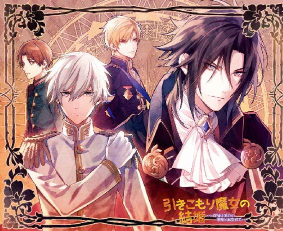
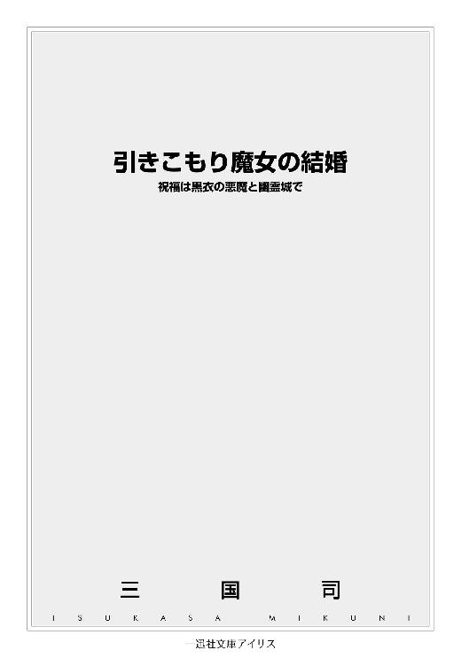
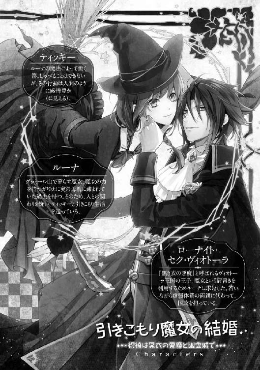
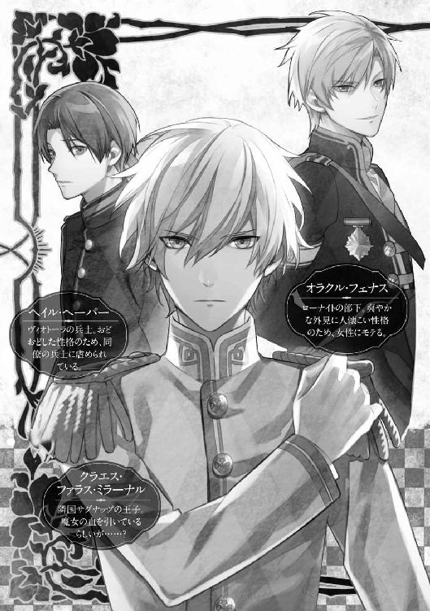
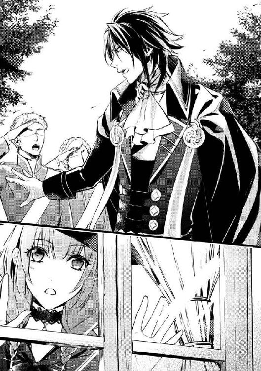
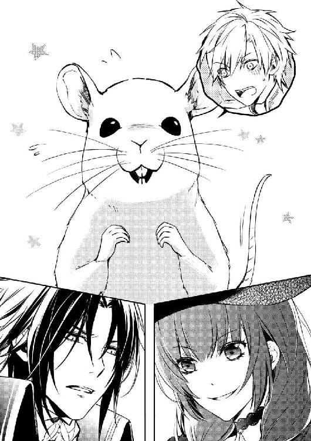
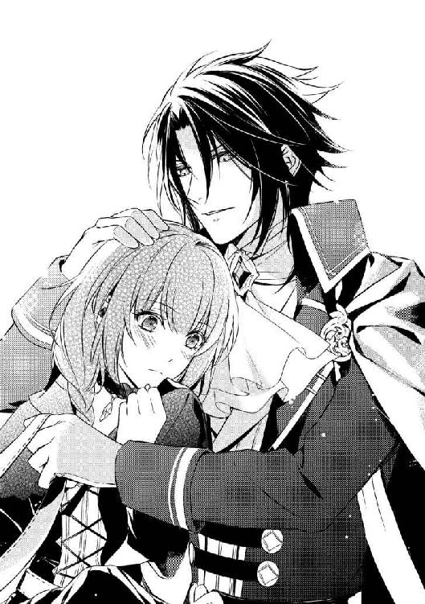
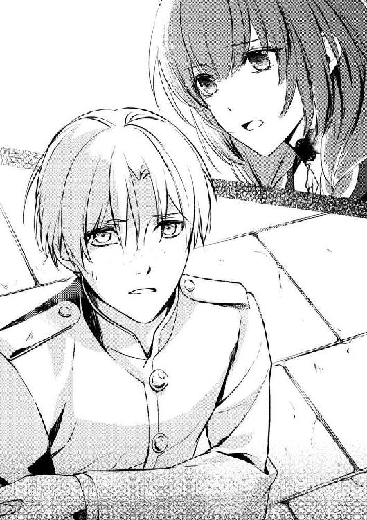
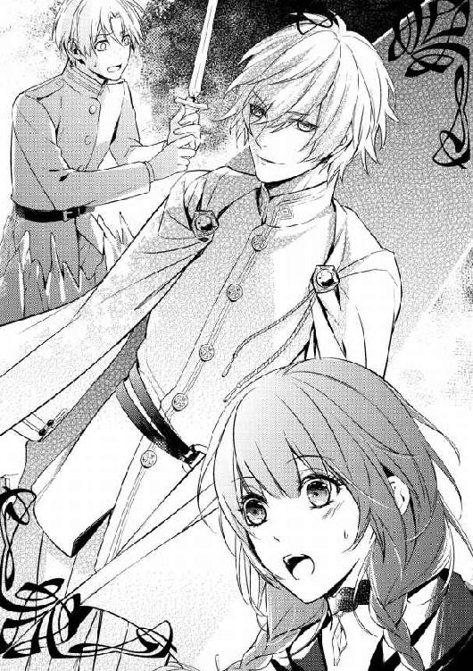
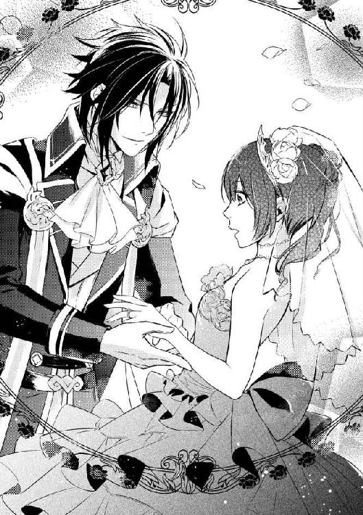

| 引きこもり魔女の結婚 祝福は黒衣の悪魔と幽霊城で (一迅社文庫アイリス) | |
| 三国 司 | |
| (2015) | |




イラストレーション ◆ 藤 未都也
引きこもり魔女の結婚 祝福は黒衣の悪魔と幽霊城で
『グラミール山の魔女へ。
俺と結婚しろ。
俺はお前と会った事もないし顔も知らないが、お前の〝魔女〟という肩書きは利用できる。国一つ滅ぼせる力を持つと恐れられている魔女を俺が妻として迎えれば、他国はこのヴィオトーラに容易に手出しはできなくなるからな。
ちなみに結婚は決定事項だ。荷物をまとめておけ。三日後に迎えに行く。
ヴィオトーラ王国 ローナイト・セク・ヴィオトーラ』
ぐしゃり。読み終わったと同時に、ルーナは王家の刻印が施されたその手紙を握り潰した。
扉の前で相対している使者の顔がいっそう青くなる。
「まさかこの国の王子様から求婚されるとは思っていなかったわ」
低い声で言う。
「だけど彼は、面識のない相手に随分乱暴な内容の手紙を寄越すのね」
「いえ、そのっ......ローナイト殿下は、とても......し、親しみやすい性格をしておられますのでっ......！」
文官風の中年使者は、生え際の後退した額に滝のような汗をかいて弁明した。数分前に突然ルーナの住む山小屋の扉を叩いたこの使者も、ある意味、手紙の主――ローナイトの被害者なのだ。横暴な主人を持つと苦労するのだろうが、ルーナとて他人に同情している場合ではなかった。
「こんな求婚に応じるわけがないでしょう。来れば攻撃するわ。そう伝えておいて」
紫水晶のような冷えた瞳で相手を射抜くと、使者は護衛の兵士を伴い、転がるように逃げ帰っていった。
何事も普通くらいがちょうどいい。
過ぎた力は必要以上に他人からの注目を集め、恐れられ、疎まれる。
緑豊かなグラミール山の奥深く、喧噪とは無縁の静けさに包まれたその場所で、まだ十八歳になったばかりのルーナは一人暮らしをしていた。昔猟師が使っていたらしい寂れた山小屋に少し手を入れて改装しただけの住居と、野菜やハーブを育てている畑はどちらも狭いが、この清貧な生活をルーナは気に入っている。
「家族も友達もいなくたって、何も不便はないもの」
一人呟くと、外の薪棚から今日使う分の木材を家へと運んだ。魔法で宙にふわふわと浮かせれば、重さを感じる事もない。
「力持ちの恋人がいなくても平気」
薪を入れたかまどに手をかざすと、あっという間に真っ赤な炎が燃え上がった。自在に火を生み出せるルーナには、火打ち石も必要ないのだ。
しかしじっと暖炉を見つめるその表情は、強気な言葉とは裏腹に沈んでいる。
柔らかく編んでから、すっきりと大人びた顔の輪郭に沿って胸の下へと垂らされている長い黒髪にも、張りのある色白の肌にも、そして猫のように勝ち気な紫の瞳にも、炎の赤が映って寂しげに揺れていた。
ルーナは〝魔女〟だ。
見た目も心も人間なのに、強大な魔力を持って生まれてしまったせいでそう呼ばれ、周囲の人々から忌み嫌われてきた。普通の人間は魔力を持っていないから、薪を宙に浮かせたり炎を出したりできるルーナは異端で恐ろしい存在でしかないのだ。
ルーナがこの山で引き篭もり生活を送っているのも、人間たちから避けられ、恐怖されるのに疲れたから。罪のない人を魔法で傷つけた事などないのに、人々は皆、ルーナが魔力――つまり〝悪魔の力〟を持つ魔女だと分かった途端に慌てて離れていく。最初は両親だった。
魔女は百年に一度の周期で世界に一人だけ現れると言われているので、今の世には仲間もいない。気持ちを分かり合える者が存在しないのだ。
ルーナが物思いに沈んでいると、かまどの隣に立てかけてあった古い箒が急に動き出した。黄金色の藁でできている尾の部分を足のように器用に動かし、炎を嫌がるようにルーナの背後に隠れる。
「大丈夫よ。燃えたって、新しく藁を集めてすぐに直してあげるわ」
箒は柄を震わせて返事をした。
この箒は、親に捨てられ寂しさを持て余したルーナが、まだ子供の頃に魔法をかけて動くようにしたもので、名前をティッキーという。最初はルーナが操るままに動くだけだったのだが、今でははっきりとした意思を持ち、まるで生きているかのように献身的にルーナの世話を焼いてくれる。
「さぁ、朝ごはんを食べましょう。ティッキーは食べられないけどね」
ルーナは大人っぽく笑って立ち上がると、湯を沸かして朝食の準備に取りかかった。
山奥での一人暮らしには、確かに時々孤独を感じてしまう。しかし、かといって人の多い街へと下りていっても、魔女だと蔑まれて傷つく事になるだけ。
それが分かりきっているから、ルーナは今日も明日も、死ぬまでずっと、引き篭もり生活を続けるつもりだ。ティッキーがいてくれれば十分だと、自分を納得させながら。
わざわざ山を登ってここを訪ねてくる人間もいるけれど、彼らは全員、ルーナの力を自分の利益のために利用しようと企む強欲な者たちだ。魔法を悪い方向に使えばいくらでも金を稼げるし、名声や権力を手に入れる事も容易いから。
魔女を求める者は魔女を利用しようとする人間だけだという事を、ルーナはこれまでの経験から嫌というほど知っている。
例えば三日前の訪問者もそう。
この国の王子までもが自分の事を利用しようとしている。その事実に苛立ちを隠せない。
ルーナは切ったパンに野菜やチーズを乱暴に乗せると、憎しみを込めてもう一枚のパンで押し潰した。気遣い屋のティッキーが背後からおずおずとこちらの様子を窺っている気配がしたが、眉間に皺が寄っていくのを止められなかった。
「今日がその三日後。来るなら来なさいよ、馬鹿王子」
今までの訪問者たちと同じように魔法で返り討ちにしてあげるわ、とルーナは自信たっぷりに言い放った。
王族なんかに興味はない。利用されるのは大嫌いなのだ。
かくして、ローナイトはやって来た。分厚い不穏な雲が太陽を隠し始めた午後一時、物々しい兵士の一団を伴って山を登ってきたのだ。
ルーナが住んでいるのは頂上付近の開けた土地だったが、グラミール山は標高が低くなだらかなので登頂は難しくなかっただろう。十頭近くの馬も一緒だ。
ティッキーが窓から外を見ながら――目なんてないのに――かさかさと音を立てて焦ったように行ったり来たりを繰り返す。
ルーナも同じように窓を覗くと、下っ端の兵士たちが馬を木に繋いでいるところだった。着ている青灰色の制服で見分けると、下っ端兵士が二十人、もう少し位が上の騎士らしき男が八人いる。
（これくらいの人数なら倒せそう）
ルーナは緊張しながらも頷いた。風を起こして一気に吹き飛ばしてしまえばいい。
肝心のローナイトは探すまでもなかった。全身黒ずくめの格好をして、一番目立っている人物がそうだろう。
ルーナも黒い膝丈のローブに黒いスカート、タイツ、ブーツと人の事は言えない衣装だが、ローナイトも金糸の飾緒や金ボタン、軍の最高司令官である事を示す胸の階級章など以外、軍服もマントも何もかもが黒で統一されている。
温室育ちのひ弱な我儘王子を想像していたルーナは、その威圧感のある悪役じみた姿に思わず顔をこわばらせた。
（〝王子様〟って感じじゃないんだけど......）
先頭に立ってルーナの家に近づいてきた彼を、さらによく観察する。
長身で、髪も目も漆黒だ。整った顔立ちは十分美形と形容できるけれど、あんなに鋭い眼光で睨みをきかせていては、女性は怯えて近寄って来ないのではないだろうか。歩き方は堂々としていて大型の肉食獣を思わせたが、容姿や仕草には王族らしい上品さも感じられる。
兵士たちを馬と一緒に待機させると、ローナイトは直属の部下らしき騎士の八人を供につけ、しなやかかつ力強い足取りでこちらへ近づいてきた。

（思ったよりも厄介な相手かもしれない）
ルーナは唇を噛む。
心配したティッキーが柄の先で後ろからローブをつついてきたけれど、深呼吸を一度してから家の扉を開けた。中に招き入れる気はないので、こちらから出て行ってさっさと追い返した方がいいと思ったのだ。
余裕の態度を崩さぬよう、つんと尊大に顎を上げて外へ足を踏み出す。自分を強く見せる事は大切だ。弱みを見せるとつけ込まれるから。
小さなボロ家から数十歩ほど離れたところにいたローナイトは、ルーナの姿を認めて足を止めた。
周りの騎士たちもハッと息をのんで緊張に身を固くする。中でも、一番若そうな甘い顔立ちの金髪の騎士は、間抜けな顔で口を半開きにしたまま微動だにしない。「意外だ」とでも言いたげな表情だ。
魔女とは肌が青色で頭から角が生えている、という先入観でも持っていて、ルーナがそうではない事に驚いたのだろうか。一体、魔女を何だと思っていたのかと不愉快になる。
近すぎず、遠すぎない距離を保ったまま、両者は対峙した。こちらを見定めるようなローナイトの眼光に気圧されないよう、ルーナも瞳に力を込める。
先に目をそらした方が負けだと思って睨みつけていると、ローナイトの方が口を開いた。
「お前が魔女か。手紙は読んだだろうな」
まだ若いけれど、低くて落ち着いた威厳を感じさせる声音が、ルーナの鼓膜を震わせた。
が、偉そうなところは鼻につく。
「読んだわ。王子様が書いたと思えないほど失礼な手紙だった」
ルーナが強気に言うと、ローナイトは面白がっているのか苛立っているのか分からない表情で、唇の端を吊り上げた。そうやって笑うと、ますます悪い人間に見えてくる。
「私は山を下りるつもりはないわ。求婚には応じないと、使者に伝えたはずだけど？」
片手を腰に当てて高飛車に言い放った。嫌な女だとでも思って、さっさと帰ってくれればいい。
冷や汗を滲ませた騎士たちの視線が、ルーナとローナイトの間を忙しなく行き来する。魔女が怖いのか、それとも自分の上司の機嫌が悪くなる事が恐ろしいのか。
しかしローナイトは、喧嘩腰のルーナに対して同じような調子で突っかかってくる事はなく、むしろ上機嫌な様子で凶悪な笑みを浮かべ続けていた。
（そういえばこの王子様って、世間で密かに『黒き衣の悪魔』なんて呼ばれているんだった）
と、ルーナは思い出す。魔女でさえ怖がられているのに、どうして悪魔が王子なんてやれるのかとも思ったが、彼のその二つ名の由来は、きっと単に顔が怖いせいなのだろう。あるいは性格が悪魔的だとか。
不可解な魔法などは使ったりしないから、ルーナよりよっぽど悪そうに見えても国民には受け入れられているのだ。何だか不公平だと思う。
「お前の名は何という？」
それまでの会話の流れを無視して、ローナイトが質問してきた。
ルーナは訝しげに片眉を上げる。
「名は？」
短気なのか、一瞬口をつぐんでいる間にローナイトから再び問いかけられたが、ルーナがその言葉をのみ込んで処理するのには長い時間がかかった。
（名前を訊かれている？ ......私の名前を？）
普通の人間にとっては初対面の会話として当たり前のものだろうが、ルーナは誰かから名前を尋ねられるなんて初めての経験だったのだ。
だって一体誰が恐ろしい魔女なんかの名前を知りたがる？
魔女は魔女だと分かっているだけで十分。親しげに名前を呼ばなくても、「魔女」と言うだけで事足りるのだから。
「聞こえているのか？」
ルーナが瞠目したまま動かないので、偉そうなローナイトの口調に僅かな気遣いが混じった。
「......ル、ルーナよ」
「ルーナ？」
「そう、ルーナ......」
人間に対する嫌味や悪口ならすらすらと出てくるルーナの口なのに、今は自分の名を紡ぐのも精一杯だった。気恥ずかしさが胸に迫り上がってきて、喉がつかえる。初めての事に戸惑って、上手く対応できない。
「ルーナか。俺はローナイトだ。ローナイト・セク・ヴィオトーラ」
他人に名前を呼ばれるのも慣れなくて、何だかくすぐったい感じがした。そんなふうに親しげに呼ばないでほしいと思いつつ、嬉しさも感じてしまう。
「知っているわ。手紙に書いてたでしょ」
「そうだな」
ルーナの答えに、ローナイトは満足そうだ。
「ではルーナ、早くまとめた荷物を持ってこい。山を下りるぞ」
名前を訊かれてしゅるしゅると萎んでいたルーナの闘志が、ローナイトの命令口調であっさりと破裂寸前まで膨張した。
「私の話聞いてたの？ 行かないって言ってるでしょ。荷物なんかまとめてない」
反抗的なルーナの態度に、ローナイトの機嫌も急降下した。
二人とも、よくも悪くもしっかりとした自分の意志を持っているので、一度こうすると決めたらそれを譲らないし、他人にも合わせない。そしてどちらも喧嘩っ早い。
つまり意見の合わない二人が激しく衝突するのは仕方のない事だった。
「お前に拒否権はない」
「あるわよ」
「ない。おい、適当に荷物を運び出して馬に乗せろ」
ローナイトが背後の部下たちに指示を出す。騎士たちは慎重に歩き出し、ルーナの後ろにある小さな家へ侵入しようと近づいてきた。
「来ないで。そこから一歩でも進んだら魔法で吹き飛ばすわよ」
ルーナが手のひらを騎士たちに向けて構えると、彼らはぴたりと固まった。魔法とはルーナにとっては便利なものでも、普通の人間にとってはわけの分からない恐怖の術でしかないのだ。
「抵抗しても俺は考えを変えるつもりはない。大人しく城へ来るんだな。花嫁なのに、縄で無理矢理拘束されるのは嫌だろう」
「誰が花嫁よ」
ルーナは小さな白い歯を見せて威嚇した。両手を構えて今にも魔法を放とうとしているのに、度胸があるのか怖いもの知らずなのか、ローナイトは臆する事なく近づいてくる。
「来ないでったら！」
家の中で、ティッキーが心配そうに歩きまわっている乾いた音が聞こえてきた。
「お前が魔法を使うなら、俺も応戦するぞ」
ローナイトが腰の黒剣に手をかけた。戦闘態勢に入ったのか、ただでさえ鋭い双眸から射るような視線を向けてくる。
「これから妻にしようとする女に傷をつけたくはないんだが」
ローナイトの声が一段と低くなる。悪魔と呼ばれる彼ならば、自分の花嫁を半殺しにして連れ帰るくらいはするのかもしれない。
ルーナは僅かに息苦しさを感じた。ローナイトから放たれる威圧感のせいで、周りの空気が薄くなったような気がする。それくらい本気の彼には迫力があった。
騎士たちはこういう事態に慣れているのか、戦闘に巻き込まれぬようそそくさと後退している。逃げずに自分たちの主人を止めろとルーナは言いたかったが、そんな自殺行為を強要するのは可哀想かもしれない。
（だったらやっぱり、私が返り討ちにするしかないみたい）
話し合ってもどちらかが折れるとは思えない。戦って決着をつけた方が早いと、
「魔力を持たない人間が、魔女に勝てると思っているの？」
楽勝を装ってそう言ってみたものの、ローナイトはこれまで会った人間たちの誰よりも強そうだった。剣一本しか持たない彼に勝つ事が、ルーナには何故かとても難しく思えたのだ。
一瞬の隙も逃さないというようにローナイトの瞳は妖しく光っていて、ルーナは思わず後ずさりそうになった。捕食者に狙われるか弱い兎の気分になんてなったのは初めてだ。
けれどルーナとて自分の強さには自信があったし、何より負けず嫌いだった。この自分本位な王子様の思い通りになんてなりたくはない。
「無謀よ」
ルーナは高慢に言い放ったが、本当はこの――求婚者であるローナイトと殺し合いに発展しそうな――状況には泣きたい気分だった。どう考えても、ここから素敵な恋の物語が始まるとは思えないから。
魔女であるルーナだって、実はほんの少し、結婚には夢を見ていた。
もしかしたら、ルーナが魔女である事など気にしないと言ってくれる男性がいつか現れるのではないかと。ちょっとだけ、小指の先の先の先くらいは希望を持っている。今だってそうだ。
それなのに、こんなふうに命の危機を感じながら利用されるために結婚を申し込まれるなんて、あまりに酷いではないか。
（私の人生って散々だわ）
心の中で嘆いた。自分が魔女だと自覚した時から何度も不幸を呪ってきたけれど、ここまで悲しい人生を歩む事になるとは思わなかった。
（もう知らない。王族にだって手加減しない）
半ば自暴自棄になったルーナは、最初に放つつもりだった攻撃を、もっと強力なものに変えた。何だか虚しくなって、全てが面倒になったのだ。
風の塊をぶつけて吹き飛ばす魔法なんて生ぬるい。ローナイトを含め、ここにいる人間がひと目で恐怖を感じて逃げ出すような魔法がいい。そう考えた。
「約束して。私が勝ったら、結婚は諦めてさっさと帰ってよね」
きつい口調でルーナが言うと、ローナイトもこう返してきた。
「ならばお前も約束しろ。俺が勝ったら大人しく求婚を受けると」
「ええ、いいわよ。あなたが勝ったら、ね」
ルーナは賭けが成立した事に内心ほくそ笑むと、構えていた両手を自分のすぐ前の地面へと向けた。
白い手のひらから真っ赤な炎が噴出し、熱気を伴いながら、まばらに草の生えた土の上で大きな塊となる。ルーナの手から離れたそれは、むき出しの心臓のように二度脈打つと、次の瞬間にはさらに大きく膨らみながら渦を巻くように天へと昇っていった。
「炎の大蛇......ッ!?」
周りで見守っていた金髪の騎士が、驚愕を隠さずに叫ぶ。ルーナの出した炎は、まさにとぐろを巻いた巨大な蛇の形を成して、ローナイトたちを睨めつけていた。
「近くにいると熱いわね」
こんな大げさな魔法を使うのは久しぶりだったが、上手くいって満足する。
ローナイトは軽く目を見開きながらも、剣から手を離す事はない。自分より何倍も大きい炎の蛇と本気で対峙する気でいるらしく、ルーナはいっそ感心してしまった。彼に怖いものはないのだろうか。
「何だよ、これ......」
「勝てるわけない」
しかしローナイトとは違い、後ろの方で馬と共に山の木々に紛れている兵士たちは、大蛇を目にして腰を抜かしそうになっていた。こんな怪物、本の中の挿絵でしか見た事がないのだろう。
「......ば、化け物だ」
ルーナの耳に、一人の兵士の呟きが風に乗って聞こえてきた。
他人の反応を気にして生きてきたルーナだから気づいたのかもしれないが、他の兵士の声には驚きと恐れが含まれているだけなのに対し、その兵士の言葉には嫌悪が混じっていた。
思わず、ローナイトから、遠くにいる兵士たちの方へと視線を移す。
ほとんどの兵士は顔を青くして炎の大蛇を見上げているのに、地味な容姿の一人の兵士だけが、表情を歪めてルーナを見ている。先ほどの呟きの主だ。
彼は大蛇に向かって罵ったのではない。あれを創り出したルーナの事を化け物だと言ったのだ。
「あの女は人間じゃない......化け物だ」
相手はまさかルーナに聞こえているとは思っていないのだろう。距離があるのでルーナがそちらを注視している事にも気づいていない様子だ。
――得体のしれない気味の悪い生き物。
本音が全て表れた彼の視線が刺のように突き刺さり、ルーナの心臓の柔らかな部分を深く抉った。
陰では何を言っているか知らないが、人間たちはルーナを怖がり表立って罵倒する事はしないし、最近は人との接触を避けて引き篭もっていたので、ここまで露骨な言葉を受けたのは久しぶりだった。
『こんな子、あたしの子どもじゃない。すり替えられた化け物の子よ！』
小さい頃、母に言われた言葉を思い出す。
両親はたとえどんなに無害なものでもルーナが魔法を使う事を厳しく禁止したのに、その言いつけを従順に守っても愛してくれる事はなかった。
拒絶して、罵倒して、嫌悪だけを与えて、そして捨てた。
昔の事を思い出して、ルーナは表情を歪めた。剣を突き立てられたように心が痛む。
（他人が私を化け物だと言うなら、その通りに振る舞うだけ）
炎でできた大蛇の表皮が、風に煽られて激しく燃え上がる。狂いそうなほど深いルーナの悲しみに呼応して、耳をつんざく咆哮を上げた。
大蛇は鎌首をもたげて、全てを焼き尽くそうと動き出す。
「ティッキー、逃げる用意をして」
家の中にいる唯一の味方に言う。
自分の魔法でも火傷はするため、荒れ狂う大蛇の側にいては危険だ。
ルーナはティッキーに乗って飛び去るつもりだが、大蛇を放ったままローナイトたちごと山一つを炭にすれば、もう二度と魔女に近づく者はいなくなるだろう。利用しようと企む者すらもだ。
今までどんなに憎たらしい人間と出会っても人の命を奪うような魔法を使った事はなかったけれど、今は何もかもが嫌になった。
やりきれなくて、全てがどうでもいい。全部壊して、いっそ本当に恐ろしい魔女になった方が楽なのではと思えた。
しかしルーナが炎の大蛇にさらに魔力を注ぎ、凶暴化させようとした時、目の前にいたローナイトが余裕の表情を崩さずに呟いた。
「化け物、か」
ローナイトも自分の部下の発言を聞いていたのかもしれない。彼は巨大な蛇を見上げながら、誰に語りかけるでもなく、飄々とこう言ったのだ。
「俺は逆の事を思ったがな。魔女なんて言うからどんな化け物なのかと構えていたが、なんて事はない。馬鹿でかい炎の蛇を操ったりするだけの――ただの女だ」
一旦言葉を切って、静かに続ける。
「恐れる事はない」
唇の端を上げてローナイトは不敵に笑った。けれど声の誠実さから、ルーナを見くびっての発言ではないのだと分かる。
彼は魔女を化け物だとは思っていない。人間として認めているのだ。
「なっ......」
ルーナは思わず絶句した。心臓が一度大きく跳ねる。
（私が、〝ただの〟女......？）
魔女ではない女性からすれば、それは何の琴線にも触れない発言だったに違いない。しかし魔女であるルーナにとっては、ものすごく強い言葉だった。
この衝撃を何に例えられるだろう。雷に全身を打たれたかのような、あるいは激しい奔流にのみ込まれたかのような錯覚を覚えた。手足の先がじんじんとしびれて、頭が真っ白になる。
赤く色づいた唇も僅かに開けて呆然としたまま、呼吸すら忘れてその場に立ち尽くした。
ローナイトは知らない。自分が今、どれほど強烈な言葉を放ったかなんて。
そして誰にも分からない。その発言でルーナの心がどれほど揺さぶられたかなんて。
――魔女だってただの女、ただの人間なのだから、恐れる必要なんてない。
それはルーナがずっと誰かに言ってもらいたかった言葉であり、結局誰にも言ってもらえなかった言葉でもある。
ルーナ自身、思っていたのだ。私は魔法が使えるだけの普通の人間なのに、何故皆怖がるのかと。自分の欲望を叶えるために無理強いしてくる者以外に魔法で攻撃を仕かけた事などないし、罪のない相手を傷つけた事もないのに。
背後の小屋の中で、ティッキーがせわしなく飛び跳ねている音が聞こえた。硬直しているルーナの代わりに興奮してくれているのだろうか。
「私......」
声が震える。ローナイトの言葉で、ぐるぐると何重にも巻きついていた鉄の鎖から解放されたような気がした。心がふわりと軽くなったのだ。
今まで他人の言葉に傷つけられた事は山ほどあるけれど、逆なんて初めてだった。
救われた――などと言ったら大げさだろうか。こんな簡単な一言で？ と自分でも思う。
しかし今、ルーナは間違いなく、涙を流してしまいそうなほど感動していた。もっとも外見はただ呆けているだけに見えただろうが、ローナイトの何気ない一言は確かにルーナの心に響いた。とても、とても深いところまで。
凍りついていた心臓を溶かしてその中に入り込み、そしてじんわりと沁みていったのだ。
ローナイトに一人の人間として認めてもらえたという感覚が、血管を通して全身に行き渡る。いつまでたっても鼓動の速さが落ち着かないのは、きっと喜びに打ち震えているからだろう。
一方、兵士たちも勇ましい主人の姿に気を持ち直したらしく、皆炎の大蛇を見上げながら剣を手に取り始めた。
「そうだ、殿下の言う通り！ 何も恐れる事はない！ 我らはヴィオトーラの勇敢なる兵だ！」
壮年の騎士が鼓舞すると、周囲の若い兵士たちもそれぞれに声を上げた。
「うぉぉ、殿下の嫁を捕まえるためだ！ でかい蛇くらい何だってんだ！」
「殿下の婚期を逃すな！ 花嫁を確保しろ！」
雄叫びを上げる部下たちに、ローナイトは呆れたような、それでいて面白がっているような表情を見せて「おい、手を出すなよ」と声をかけた後、ルーナに向き直って真剣な調子で言った。
「魔女とは、孤独だ。そうだろう？」
ローナイトは黒剣を手に持ったまま、穏やかな口調で言った。彼の後ろには、ローナイトを慕うたくさんの兵士たちが見える。
対してルーナの後ろには、小屋の中にティッキーがいるだけ。ティッキーは可愛いし大好きだけれど、抱きしめるには細すぎる箒で、人間ではないのだ。
「そうでなければ、魔法で何でも手に入れられるはずのお前が、そんな寂しげな目をしているわけがない」
我が道を行くように見えて、ローナイトは意外と他人をよく見ているのだろうか。ルーナの強がりの奥に潜む感情に、気がついているのかもしれない。
「このままずっと山奥に引き篭もって、一人きりで生きていくつもりか？」
黒ずくめの威圧的な外見をしているくせに、今のローナイトの声には温かみがあった。
卑怯だ、とルーナは思う。この場面で、そんな言葉をかけてくるなんて。
戦う意欲がなくなってしまう。ローナイトを倒す事に、迷いが生まれてしまうではないか。
「山を下りて一緒に来い。俺はお前を恐れたりしない」
そう言うと同時に、ルーナの感情に呼応して大人しくなっていた炎の大蛇を、ローナイトが一撃で切り伏せた。胴を真っ二つにされて、そこから赤く燃えていた炎は消えていく。
やがて完全に消滅してしまうと、辺りは一瞬、静寂に包まれた。動く事のできないルーナにローナイトが近づいてきて、そっと剣を首筋に当てる。
「さぁ、求婚を受けてもらおう」
ローナイトは誠実な瞳をこちらに向けて、大真面目に言った。
剣を突きつけて脅すだなんて、こんな最悪な求婚の仕方は見た事がない。そう思いながらも、ルーナはそこから反撃する事はしなかった。
（この結婚を断ったなら、彼との縁も切れてしまう）
ルーナは今になって、それを嫌だと感じ始めている。
この世界で、彼のように魔女を恐れない人間が他にいるだろうか。ここでローナイトから逃げ出すのは簡単だが、それをすれば自分は将来きっと後悔すると思った。
「分かったわ......勝負は私の負けよ」
静かに認める。
傍目から見れば、ローナイトに負けて渋々結婚を了承したように見えただろうが、ルーナは自分の意志で彼について行く事を決めた。ローナイトの側にいれば、人に嫌われるだけのこの孤独な生活も、そして自分自身も変える事ができる気がしたのだ。
ローナイトが〝ルーナ〟という一人の人間の存在を肯定してくれるのなら、一歩踏み出す勇気も湧いてくる。
「よろしく、旦那様」
慣れない笑顔を作ったため、何かを企てているような妖しい笑みになってしまったルーナに、ローナイトも腹黒く口角を上げて返す。
二人の笑顔がよっぽど凶悪だったのか、周囲の兵士が軽く震えていた。
「荷物はそれだけか？」
肩かけの黒い鞄一つ持って外へ出てきたルーナに、ローナイトは片眉を上げた。
ルーナは首をすくめて言う。
「どうしても持って行かなきゃならない大切な物なんて無いもの。お城でひらひらしたドレスを着せられたんじゃ堪らないから、服は持参する事にしたけど。あとは読みかけの本を一冊だけ」
本当は可愛いドレスや美しい宝飾品に憧れたりもするけれど、魔女が可憐な衣装を着る事を一体誰が望むのか。そう思って黒色ばかりの愛用の服だけ持って行く事にしたのだ。
「魔女らしい格好でいるのは、むしろこちらにとっては有り難いが。......本もよく読むのか？」
「暇つぶしにね。高いからあまりたくさんは買えないけど、読書は好きよ。――物語の中では、私は魔女じゃないもの」
ごく普通の女の子であったり、皆から親しまれる勇者であったり、読書中だけはその物語の主人公になりきれるのだ。魔女ではない自分になれる。
ローナイトは何かを考えるように、本の入っているルーナの鞄を見ていたが、ふと顔を上げて唖然とした。
「......おい、何だそれは」
ルーナに続いておずおずと家から出てきたティッキーを見たのだ。
「何故、箒が動く」
「決まってるでしょ、魔法でよ」
これくらい慣れてくれないと私を妻になんてできないわよと、ルーナは一人でさっさと歩き出した。ローナイトに穴が空くほど見つめられているティッキーは、居心地悪そうに身を縮めている。
山の麓には馬車を待機させてあるらしいのだが、そこまでは馬に乗って行くらしく、ルーナの鞄を部下に持たせたローナイトが、自分の愛馬を引っ張ってきた。
引き締まった筋肉を持つ雄々しい青毛の馬だ。ローナイトは本当に黒が好きらしい。
「乗れ」と単語で命令されたが、ルーナは目の前の美しい馬に注目していたので聞いていなかった。
「近くで見ると、目が大きいのね」
そっと鼻筋を撫でようと指を伸ばすが、嫌がるように頭を振った馬に避けられてしまう。
ルーナはハッとして手を引っ込めた。魔女の体に潜んでいる魔力を敏感に感じ取っているらしく、動物もルーナを怖がるのだ。人間だけでなく動物にも嫌われて避けられるなんて、自分でも悲しくなる。
「私、ティッキーに乗って行くわ」
傷ついていないふりをして、何気ない口調でルーナが言う。しかしローナイトは俯いたルーナを見ると厳しい顔をして、怯えたように後退していく愛馬の手綱を強く引いた。
「グロウダーク、何をしている。動くな」
「やめてあげて。その子は私を怖がってるのよ」
グロウダークというらしいローナイトの愛馬だけではない。他の馬たちもルーナが普通の人間ではないと気づいて、仲間同士で緊張気味に固まっている。
諦めの気持ちでティッキーを握るルーナだったが、
「そうか、お前がそんなに臆病者だとは知らなかった。軍馬としては失格だな。怖いのならば、そこでずっと怯えていろ」
ローナイトはグロウダークに向かって不機嫌にそう言うと、いきなりルーナを肩へと担ぎ上げたのだ。
「っきゃあ！ ......な、何するのよ!?」
突然の事に動揺しながら、それでも子どもの時ですら親に抱かれた事のないルーナは、変な落ち方をしないようにローナイトのマントを必死で掴んでいた。
ティッキーが慌てたように二人の周りをせかせかと歩き回り、騎士たちも意味なく口を開けたり閉めたりしている。ローナイトを止めるべきか迷っているようだ。
「下ろしてよ、何のつもり!? このまま山を下りるって言うの？」
「馬が使えないんだ、しょうがないだろう」
「しょうがなくないわよ！ 自分で歩けるし、ティッキーに乗るって言ってるでしょ」
本当に人の話を聞かない男だなとルーナは思った。腹が立つのと恥ずかしいのとで、顔が真っ赤に染まっていく。
ルーナを抱いて一人でずんずんと山を下り始めたローナイトの後ろから、鼻息荒くグロウダークが駆けてきた。臆病者と言われたのがよほど嫌だったらしく、ローナイトの前まで出ると、自分の勇敢さを示すように足を踏み鳴らす。
「それでいい」
ローナイトは満足気に言って、「ちょっと！」と暴れるルーナを二人乗り用の大きな鞍の上へと乗せた。
最初は魔力を感じて不安なようだったが、しかし一度乗せてしまえば怖くなくなったのか、グロウダークはすぐにルーナに怯えなくなった。途中からは『俺は魔女なんて怖くないんだぜ』という風に堂々と胸を張って歩いていて、後続の馬たちにも尊敬の眼差しを送られている。
ルーナも初めての乗馬体験を楽しみたかったのだが、それよりもすぐ後ろで密着しているローナイトの存在が気にかかって馬どころではない。二人で一緒にグロウダークに乗っているため、どうしてもくっつかざるを得ないのだ。
少しでも隙間を作ろうと前に腰をずらすが、馬上の揺れはゆっくりと進む常歩の状態でもある程度あって、結局元に戻ってしまう。
他人の体温をこんなに間近で感じたのは、いつ以来だろう。
なだらかな山道の中でも、たまに岩が剥き出しになったような足場の悪い場所を通る事もあり、そんな時にはルーナが落っこちないように後ろからぎゅっとお腹に手を回されるので、ルーナはその度心の中で羞恥の悲鳴を上げていた。
隣でルーナの様子を窺いながら飛行を続けていたティッキーと、後ろからぞろぞろとついてきていた兵士たちの視線も気にする余裕などない。
「ちょっと......！ あ、あまりくっつかないでよ！」
「好きでくっついているわけじゃない。舌を噛みたくなければ黙っていろ」
口喧嘩を続けながら山を下る。
麓に着いて、つややかに磨き上げられた豪華な黒い箱馬車に乗り込んだ時には、ルーナは思わず深く息を吐いていた。緊張して十分な呼吸すらできていなかったのかもしれない。
けれど隣にローナイトが乗り込んできたので、馬車の旅でも油断は禁物だった。
ルーナの住んでいたグラミール山から城のある王都までは半日もかからないが、ローナイトとずっと二人きりでは落ち着かないので、ティッキーも一緒に中へと引きずり込む。
騎士たちを前後に配備させて、馬車はゆっくりと走り出した。山の頂上までは登らせなかった馬たちを麓に待機させていたようで、歩いていた兵士たちもここからはそれに乗って後に続くようだ。
しばらく走った後、道中で地元の人間と擦れ違うと、彼らは馬車に刻まれている紋章や兵士たちの制服を見て、興奮気味に声を上げた。
「王家の馬車だ！」
「乗っておられるのはどなただろう？」
町中の狭い道を速度を落として進むと、子どもたちが一生懸命に走って追いかけてくる。ルーナは小窓のカーテンをほんの少し開けて、隙間から外を観察していた。
引き篭もりの自分は市井の噂や情報に疎いが、どうやらこんな悪魔王子でも一般市民からは慕われているらしい。いつまでも追いかけてくる子どもたちを見たローナイトが、ルーナとは反対側の小窓を開けて顔を覗かせると、喜びの歓声が上がったのだ。なんて素直で可愛らしい反応だろうかとルーナは思う。
町を抜け、馬車がまた轍に沿って速度を上げると、ローナイトは何気なく言った。
「俺には、この国と、そこに住まう国民を守る義務がある」
ルーナは隣に座るローナイトへちらりと視線をやった。
「それは立派だけど......大丈夫よ、あなたがその鋭い目で睨みつけていれば、誰もこの国に手を出そうとしないわ」
「それだけで国が守れるなら楽なんだがな」
ローナイトは冗談ぽく返したが、すぐに真面目な顔つきになる。
「実際、この国はいつも隣国の脅威に晒されている」
確かにここヴィオトーラの国土は狭く、東西をトールーン、サグナッヅという大国に挟まれて、常にその圧力を受けている。今は隣国とは表向き友好な関係を保っているものの、特にサグナッヅからは何度か侵略を受けた過去もある。
ローナイトが誰かに負けるなんて想像できないが、国と国とで戦争になれば、小国のヴィオトーラは滅びる可能性も十分あるのだろう。
何にも執着はしないルーナだが、生まれた国がなくなるのは少し寂しいかもしれないと思った。
「サグナッヅとは......一番最近なら百年前に大きな戦争をしているわよね」
思い出したようにルーナが言うと、ローナイトは深く頷いた。
「その時に西の領地を奪われた。サグナッヅ軍には当時魔女がいて戦いに参加していたからな。そのたった一人の魔女に、しかしうちの兵士の三分の一近くが殺されたと記録されている」
ルーナは普通の箒のように動かず大人しくしているティッキーの方を見ながら、ため息をついた。
「知ってるわ、それ」
ローナイトが視線で問いかけてきているのが分かったので、説明する。
「魔女はおよそ百年に一人生まれてくるって言われてるでしょう？ だからまだ小さい頃、前代の魔女に興味を持って色々調べてたのよ。......その時、夜中にヴィオトーラの城の資料室にも忍び込んだ事があるの」
一応、勝手に城に侵入するのは悪い事であるという自覚はあったので、ルーナの声は最後は小さくなった。
確か百年前の戦争は、東の大国トールーンが援軍を送ってくれた事で終結したはず。サグナッヅがヴィオトーラを乗っ取り、勢力を拡大させるのは、トールーンにとっても喜ばしい事ではなかったのだ。
「......あなたも、私に戦ってほしいの？」
数秒の沈黙の後でルーナがぽつりと零す。恐る恐るローナイトの方へ視線を向けると、彼はまるで侮辱の言葉を吐かれたかのように顔を歪めていた。
「俺はお前の力が欲しくて求婚したわけじゃないし、女を戦わせたりしない。利用するのは、魔女という〝肩書き〟だと言っただろう」
どちらにしても利用される事に変わりはないのだが、あまりにも堂々と言われたので思わず謝りそうになった。
ローナイト曰く、サグナッヅは国土が広い割に資源が少ないので、それとは反対に狭いけれど豊かなヴィオトーラを今も虎視眈々と狙っているらしい。
ローナイトがルーナを花嫁に迎えた目的は、主にサグナッヅへの牽制であるようだ。魔女の強さを誰よりも分かっているサグナッヅには有効な手段かもしれない。
先ほど馬車を追いかけてきたような純粋な子どもたちの日常を、ローナイトは守りたいのだろう。
小窓に流れる外の景色を眺めながら、そうルーナは思った。
王都の城に着いたのは、日没直後の黄昏時だった。深い紫色に染まった空を背景に、巷で『幽霊城』と呼ばれている不気味な城がルーナを出迎える。
どこか繊細で儚げながら陰鬱とした雰囲気を持つその城に、ルーナはティッキーと共に震え上がった。前に忍び込んだ時よりも、おどろおどろしさが増している気がする。
思わず引き返したくなったが、鳥肌を立てたルーナを乗せたまま、馬車は無情にも門の内側へ進んでいく。
「本当に幽霊が出そうな雰囲気よね」
怯えている事を悟られないよう、なるべく明るい声を出したルーナに、移動に飽きてつまらなさそうにしていたローナイトが顔を上げた。面白がるようにしてこちらを見てくる。
「出るけどな。本当に」
「......た、例えば具体的にどういうものが出るの？」
すでに演技はできなくなって、震えながら言った。魔法の効かないものは苦手なのだ。
ローナイトは体をこちらに向け、意味ありげに声を潜めて話し出す。
「歴代の王の亡霊だ。夜に城を徘徊する白い影を何人もの人間が目撃している。――気をつけろよルーナ、亡霊は王家に仇なす者を許さない」
過去に城へ侵入した他国の間者は、その王の幽霊に呪われ、じわじわと衰弱していったのち、正気を失って自殺してしまったらしい。
それを聞いて、ルーナはごくりと唾をのみ込んだ。自分は花嫁として城へ入るのだから、亡霊に取り殺されたりはしないはず、と自分を勇気づける。まさか魔女だからという理由で、問答無用に敵だと認定されてしまうなんて事はないと信じたい。
馬車を降りて兵士たちを解散させてからも、ティッキーの細い体を両手で握りしめながら、薄暗い城の雰囲気に震えるルーナにローナイトが言った。
「まさか魔女が幽霊を怖がるとはな。お前のその箒の方がよほど怪奇だ」
普段なら何か言い返すところだが、今のルーナにそんな元気はない。代わりにティッキーがそよそよと尾を揺らした。
何かを思いついたらしいローナイトの口角が、悪魔のように持ち上がる。
「見ろ、あれを」
指をさされた方向へ目を向けると、城の外壁に小さな赤黒い染みが浮き出ていた。
――子どもの大きさくらいの、おどろおどろしい手形だ。
「きゃああ！」
ルーナは悲鳴を上げて後退った。後ろにいたローナイトに背中がぶつかったが、そのままぐいぐい下がろうとする。
「お前は本当に怖がりだな」
「あなたが怖がらせたくせに」
言い返すと、ローナイトは腹黒く笑った。その意地悪な顔を見ていたら腹が立って、幽霊に対する恐ろしさがまぎれる。ルーナは息を吐いて、気を取り直した。
「ところで、どこへ行くつもり？」
供も連れず、薄暗闇の中を敷地の奥へ向かうローナイトにルーナが問う。城の中へ入るのかと思ったら横を通り過ぎるだけで、他に目的地があるようだった。
「疲れているかもしれないが、先に面倒な事を終わらせてしまう」
「面倒な事？」
「婚儀だ」
「婚儀......」
言われた言葉をそのまま繰り返す事しかできないルーナに、ローナイトは軽く顎をしゃくって前方を指し示した。
「あそこだ」
そこにひっそりと佇んでいたのは、白い石造りの、正方形に近いこぢんまりとした建物だった。ルーナたちの到着を待っていたのか、出入口には騎士が六人きっちりと並んで立っている。
「何ここ」
「墓」
端的な質問に、端的に返された。ルーナは小さく眉間に皺を寄せる。もっとちゃんとした説明が欲しいとねめつければ、ローナイトはその視線を受け流しながら答えた。
「ヴィオトーラの歴代の王が眠っている墓だ。婚儀はここで行う。王たちの前で結婚を誓うんだ」
「王たちって......」
それは先ほど教えられた幽霊城を彷徨い歩いている方々なのでは？ などと尻込みしつつ、ルーナは改めて白亜の霊廟を見上げた。
華美な装飾は施されておらず、この建造物が何であるかを知らなくても、周りで騒いではいけないと本能的に分かるような、神秘的な空気に包まれていた。
（婚儀なんて......何も今日やっちゃわなくても）
しかしローナイトは、霊廟の前に待機していた騎士の一人からランタンを受け取るとさっさと内部へ入って行ってしまったので、ルーナもティッキーを持ったまま慌てて後を追う。
横に四本並んだ柱を通り抜けて中へ入ると、がらんどうな空間が広がっていた。内部も真っ白で、左右二面の壁には歴代のヴィオトーラ王、十二人の白い立像が置かれている。
一番奥には開け放たれたままの黒い鉄柵があって、それを越えるとすぐに地下へ続く階段が見えた。
背の高いローナイトが若干首を曲げないと通れない狭い階段だが、白い石に囲まれているせいかそれほど圧迫感を感じない。ランタンの灯りがなくとも前へ進めそうだ。
階段を最後まで下り終えると、そこはひんやりとした空気が流れる静謐な雰囲気の地下墓室だった。
天井を支えるための太く短い柱がいくつもあり、その間に柩が並べられている。白大理石の柩はぼんやりとした光を内包していて、空間の中で浮かび上がって見えた。
耳が痛くなるような静けさに満ちた、白一色の崇高な場所。白は安らかに眠る死者の色でもある。
墓で婚儀をと言われた時はどうしようかと思ったが、思ったほど悲惨な場所ではなくて安心した。
ふぅ、と息をついた瞬間――視界の端でゆらりと影が動いたような気がして、ルーナは振り返ると共に息を詰めた。
自分とローナイト以外にこの地下墓室で動く可能性のあるものは、柩の中の遺体だけだ。そう思って心臓が止まりかける。
「待っていたぞ......二人とも。随分長い事待たされた」
隅の暗がりから近づいて来た二つの影のうち、背の高い方がかすれた声でそう言った。
「なっ......」
ルーナは驚きのあまり言葉を失う。
ランタンの灯りに浮かび上がったのは、豪華な毛皮のマントを羽織って宝石のついた王冠を被り、手には王笏を持った、まさに王様だった。
ただ異様に青白い肌をしていて、落ち窪んだ目の下には酷い隈がある。背は高いがひょろりとやつれた体型で、痩せて節くれだった指からは今にも金の指輪が落ちそうだった。
ルーナは相手の正体を確信し、信じられない気持ちで叫んだ。
「ゾ、ゾンビ......っ！」
混乱の中で手をかざして、ルーナは蘇った死者を灰にしようとした。幽霊には効かないかもしれないが、ゾンビには炎が有効だろう。
無我夢中で魔法を行使しようとするルーナだったが、すんでのところでローナイトに遮られた。
「おい、待て！ 燃やすな。相手は一応この国の王だぞ」
「〝元〟王様でしょ!? 柩から蘇ったのよ！」
「いや違う、落ち着け。現国王だ。名前はヴィオナイト・セク・ヴィオトーラ。ちゃんと生きてる。俺の父親だ」
「ローナイトの？」
ルーナは目を細めて、こわごわゾンビを観察した。
確かに、死体にしては肉が腐って骨が見えているような事もなく、肌も硬質そうだが綺麗だ。
ローナイトの目元をもっと優しく垂らして年を重ねさせたような美形でもあり、青い目も濁っていない。髪の色は淡い金髪で、ほとんど白に見える。
じっと視線を合わせていると魂を抜かれてしまいそうになるような、不思議な魅力を持った人だった。
（眉目秀麗なゾンビ？）
そんな感想を持つ。
「まぁまぁ、思ったよりも可愛らしい方ね、ふふ」
と、ローナイトの父だという人物の背後から顔を覗かせたのは、こちらも病的に顔色の悪い女のゾンビだった。
少なくともルーナにはそう見えたが、ローナイトにはこう紹介された。
「ベレニカ・セク・ヴィオトーラ。王妃だ」
「王妃様......」
「初めまして、魔女さん。ようこそ幽霊城へ」
黒い羽根のついた扇を閉じると、ドレスの裾を持ち上げて茶目っ気たっぷりに挨拶される。
王妃も王も黒を基調とした装飾過剰ぎみの豪華な衣装を身につけていて、少し時代遅れの型なのに、二人の退廃的な雰囲気にはぴったりと嵌っていた。
例えば黒のレースをたっぷりと縫いつけた赤いドレスを纏う王妃は、真っ赤な口紅の効果も相まって、どこか耽美的でもある。恐ろしいけれど見とれてしまう、そんな美しさだ。
黒い髪に黒い瞳、すっと吊り上がった目尻。どうやらローナイトは母親似らしい。
「ル、ルーナです。初めまして......」
おずおずと礼を返した後、ローナイトに小声で問う。
「あなたのご両親、どこかお悪いの？ 顔色が最悪だけど」
「二人とも元々体が丈夫ではない。俺が物心ついた時から、ほとんどをベッドの上で過ごしている」
「大丈夫なの？」
ごほごほと咳き込みながら「ここは寒い」と言い合っている国王夫妻を横目に見て、ルーナは不安になった。せっかくできた義両親が、すでに死にそうだ。
ローナイトは慣れたふうに言う。
「健康ではないが命にかかわるような持病も持っていないし、何だかんだでまだまだ生きるだろう。大丈夫だ」
「ふふふ、もちろんそうよ。孫の顔を見るまでは死ねないもの」
「いやいや、孫が成人するまでだ」
今にも吐血しそうな青い顔をして、国王夫妻は薄く笑う。
ルーナにはその笑い顔が不気味に映ったが、本人たちは満面の笑みのつもりなのだろう。精神的には健康のようで、口から出る言葉は陽気だ。
ルーナはまだ子どもを産むなど考えられなかったが、随分楽しみにされているようである。
ちらりと隣のローナイトを盗み見て、彼との子どもを作る事を想像し、ルーナは一人顔を赤くした。
子どもの頃から魔女として嫌われてきたせいで、父親含め異性とは手を繋いだ事すらないし、もちろん恋人もいたためしがない。
恋愛と、それに伴う一連の行為に全く免疫がないのである。
（どうしよう、そんな事全く考えずに求婚を受けてしまったわ。全然頭になかったから......。でも、私がローナイトとそんな......）
一人あたふたと赤面しているうちに、ローナイトと国王夫妻は中央にある柩の前に移動していた。
「ルーナ、早く来い」
ローナイトに声をかけられ、ルーナはずっと大人しくしているティッキーを握りしめたまま、そちらへ向かった。まだ頬が熱い。
「何をするの？」
「誓いの言葉を述べるのだ」
ルーナの問いに答えたのは国王で、手に持っていた筒状に丸めた羊皮紙をルーナへと差し出してくる。広げて中を確認すると、誓いの言葉らしき短い文章が書かれていた。
「ローナイトの後に続いて言えばよい」
蒼白な顔で国王ににっこりと笑いかけられると同時に、もうローナイトはすらすらと誓いの言葉を述べ始めていた。新婦を永遠に愛し、夫婦で協力し合いながら国を守っていく、といった文言だ。
ローナイトの宣誓が終わると、ルーナもたどたどしく言葉を紡いで結婚を誓った。
こんなに適当でいいのかとルーナが思っているうちに、今度は王妃がシルクでできた小さな枕のようなものを差し出してくる。
今度は何だと訝しく思いながらよく見てみると、上には指輪が二つ乗っていた。結婚指輪だ。
流れ作業のような式だが、ルーナはそこで初めて胸を高鳴らせた。
なめらかな曲線を描いた太めの金の指輪は、新婦用であろう小さい方にのみごてごてとたくさんのダイヤがついていて、正直あまり好みではなかったが、指輪交換という行為にはときめきを覚えるのだ。
ルーナが密かに手汗を拭って緊張していると、
「指輪はいい」
ローナイトがそう言って差し出された指輪を王妃の方へ押し返していた。
「まぁ！ どうして？ 指輪は必要よ」
「いいから。......ほら、もう式は終わりだ。二人は早く暖かい寝室へ戻った方がいいと思うが」
「誓いの口づけもまだなのにか？」
「宣誓文だけ言えば十分だろう」
詰め寄る両親に、ローナイトがうんざりした様子で返す。そのまま国王夫妻を地上へと繋がる階段の方へ押しやっているのを見て、期待に膨らんでいたルーナの胸が切なく萎んでいった。
（なんだ......）
ローナイトは魔女とお揃いの指輪をつけるのも、キスをするのも嫌なのだろう。
ルーナだって別にローナイトとキスがしたいわけではないけれど、拒否されている気がして気持ちが沈んだ。
いつだったか、故郷の村で行われていた結婚式を、木の陰からひっそりと観察した事がある。
新郎新婦の笑顔と幸せに包まれた雰囲気に憧れたけれど、自分にはやはり、到底叶えられない願望なのだ。
ルーナは気を取り直すように首を振った。
（指輪を貰えないのも、キスがないのも当たり前じゃない。私とローナイトの間に愛はないし、これはただの契約なんだもの）
村で結婚式を挙げていた新郎新婦と自分たちは違うのだ。
結婚指輪を薬指にはめ、これ以上ないくらい嬉しそうに参列者たちに手を振る新婦の姿を、ルーナは頭の中から追い出した。
「ルーナ」
国王夫妻に続いて地下墓室から出ようとしたローナイトが、階段の手前でルーナを呼んだ。早く上がれと言いたいらしい。
「婚儀は......もう終わりなのね？」
無表情に尋ねるルーナに、ローナイトも淡々と今後の予定を伝えてくる。
「ああ、とりあえずはな。一ヶ月後には花嫁のお披露目式があるし......といっても、二人で城のバルコニーから民衆へ手を振るだけだから、それほど構えなくてもいい。しかしその後には、貴族たちを呼んでの夜会もあるが」
ルーナは思いきり唇を歪めた。面倒臭くて、全然乗り気になれない。
それにお披露目式なんてしたって、国民も貴族たちも恐ろしい魔女に会いたがるとは思えなかった。きっと誰も来ないのではないだろうか。
ルーナを先に行かせて、ローナイトは後から階段を上ってくる。
「ところでお前の部屋だが、俺の居室の隣に用意してある。今夜からそこで生活するんだ。すでに侍女たちも待機しているだろう」
「ローナイト」
一階へ着くと、ルーナはローナイトを振り返り、暗い声で言った。
「最初から豪華な部屋では私、萎縮してしまいそう。侍女に世話をされるのも落ち着かないわ。ここの環境に慣れるまで、なるべく一人で引き篭もりたいのだけれど......」
「それではいつまでたっても周りと打ち解けられないだろう」
ローナイトは片眉を吊り上げて厳しい顔をしたが、ルーナも引かなかった。
『ここの環境に慣れるまで』というのは単なる言い訳にすぎない。ルーナは、ローナイトなら魔女である自分を受け入れてくれるのではないかと勝手に希望を持っていたが、婚儀があまりに適当だった事で冷静になった。
この結婚は契約なのだと割りきって生活していくならば、ローナイトの隣の部屋での生活は辛いのだ。
自分がどれだけ慕っても愛を返してくれなかった両親の事を、ルーナは思い出していた。自分ばかりがローナイトに惹かれていったら、と恐怖すら感じる。
（無駄な希望は持ちたくない）
ローナイトに一方的に惹かれてしまうのが怖かった。もしその後で、両親に捨てられたように彼にも捨てられたら、一体どうしたらいいのだろう。
あんな悲しみは二度と味わいたくはない。
「ローナイトの隣の部屋というのも......嫌だわ」
ローナイトに対して特別の情を持たないよう、ある程度の距離を保っておいた方がいいのかもしれないとルーナは考えた。契約夫婦らしい距離を。
俯き加減に言うと、ローナイトはしばらく沈黙してからルーナの我儘を受け入れた。
「分かった......。ならば城を見て回って、どこでも気に入った部屋を使えばいい」
その声を冷たく感じたのは、ルーナの気のせいではないだろう。
王都での結婚生活は、ルーナの望み通り地味に始まった。
ルーナは城の北側にひっそりと建つ質素な石造りの小屋で、ティッキーと毎日を過ごしていた。ここは随分昔に作られた、王の霊廟を管理している人間のための休憩小屋みたいなものらしいが、最近もっと霊廟に近いところに新しいものができたので不用になっていたのだ。
立地が悪く、すぐ側の大きな城の影になって一日中陽が当たらないので、いつも薄暗い。
中は二部屋に分かれているので、奥の寝室にはベッドや衣装棚を、手前の居間にはテーブルセットや長椅子を配置する。部屋はどちらも狭いが、綺麗好きのティッキーが毎日せっせと掃除をしてくれているお陰で、絨毯の敷かれた床には塵一つ落ちていない。
城の豪華で広すぎる部屋は落ち着かないし、何よりローナイトの近くで生活するよりは疲れないので、ルーナはここでの生活にもそれなりに慣れ始めていた。そもそも基本は引き篭もっているので、山の上での生活とほとんど変わらないのである。
婚儀を終えてから、もう一週間が経つ。
ローナイトとは、あの日から一度も顔を合わせていない。彼はお飾りの王子ではないだけに仕事が忙しいらしく――体の弱い両親の分も働いているのだろう――、侍女などを通して不自由はないか尋ねてくれたり、こちらを気にかけてくれている様子はあるものの、この小屋まで足を運ぶ事はなかった。
一度ルーナからローナイトに会いに行ってみようかと城へ向かった事もあったが、そこで働いている使用人や役人と擦れ違うたび、ぎょっと飛び上がって逃げられては心も折れる。結局途中で諦めたのだった。
一方ここでの世話をしてくれている侍女たちも、質問すれば答えてくれるし仕事は完璧なのだが、絶対にルーナとは目を合わせてくれない。魔女の目を見てしまうと石になる、とでも思っているに違いなかった。
ルーナはため息をつくと、読みかけだった本を閉じて黒いテーブルに置いた。この本は、侍女を通してローナイトが寄越してくれたものの一つだ。
『くまのきょうだい、ふゆのしたく』
題名には丸い文字でそう書いてある。つまり絵本だ。
ローナイトは婚儀の次の日に、ほのぼのとした童話ばかりを百冊も贈ってきたのである。
「......こ、『これでも読んで暇をつぶしていろ』との事です。わ......わたくしではありません、ローナイト殿下が、殿下がそう言えと......」
可哀想に、伝言を預かってしまった侍女は、顔面蒼白になってそう伝えてきた。彼女はよくできた侍女なので、
「殿下は魔女様を楽しませようとしていらっしゃるのです......」
とローナイトの代わりに蚊の鳴くような声で弁解していたが、そうではなく、子ども向けの本を贈る事でルーナをからかっているだけなのではないだろうか。
しかも可愛らしい童話に交じって、十冊に一冊の割合で幽霊が出てくるような怪談風の絵本が交じっていたりもするのだ。一見普通の絵本に見えるのだが、読み進めていくにつれ絵も文も不気味な雰囲気が増していき、読み終わる頃には全身に鳥肌が立っているような代物が。
寝る前に楽しい童話を、と思って読んだものが、黒い人影ばかりの異世界へ迷い込んで出られなくなった男の子の話だった時には、一晩中蝋燭の灯りを消せなかったし、ティッキーを布団の中に入れて一緒に寝てもらわねばならなくなった。
（こんな事して、覚えてなさい）
そう思うけれど、本気で腹を立てているわけではない。むしろ少し嬉しかったりもする。
魔女として忌み嫌われ避けられてきたルーナは、誰かに気安くからかわれる事すらなかったから。
それに絵本といえば『悪者の魔女が退治される』という内容のものが山ほどあるのだが、ローナイトから貰った本の中にはそういうものが一冊もなかった。百冊あって、一冊もだ。
細かな気遣いがあっての悪戯なのだと思ったら、忙しいというのにこんな事をしているローナイトを笑ってしまう。
ルーナは絵本の表紙をそっと撫でてから、窓の方へと近寄った。ティッキーがさかさかと後をついてくる。
ローナイトと深く関わりすぎないためにこの小屋での生活を選んだというのに、全く会えないと少し寂しい気持ちになっている自分がいた。
「私、一体どうしたいのかしら」
幸せを求めたいけれど、冷静な自分が「魔女には無理よ」と釘を刺してくる。
白い雲がたなびく空を見て物思いに耽っていると、
「見て。あそこよ」
外から、若い女性の声が聞こえてきた。
「やだ、いくら何でもあれは可哀想よ」
城で働く下女たちのようだ。
哀れみに満ちた声に、ルーナはすぐに窓から離れた。この小屋からは離れたところにいるようだが、聞きたくなくても勝手に話し声は耳に届く。
「この結婚に愛がないといっても、殿下ももう少し気を遣ってさしあげればいいのに」
「だけど相手は恐ろしい魔女よ。城の中に入れたくないお気持ちも分かるわ」
「そうよね、少し怖いわ」
好き勝手な事を言いながら、下女たちは行ってしまった。
ルーナは自分の瞳がすっと冷えていくのを感じた。勝手に誤解して哀れまれるのは気に入らない。城の中で暮らす事を選ばなかったのはルーナなのに、魔女とは虐げられるのが普通だと彼女たちは思っているのだろうか。
ティッキーが逆さになって、ちくちくした尾でルーナをくすぐろうとする。元気づけてくれているらしいが、先ほどまで床を掃いていた部分で頬を撫でるのはやめて欲しい。
ルーナはティッキーの尾についた綿埃を取り除きながら、深いため息をついた。
ローナイトについてくれば何かが変わるような気がしたけれど、自分は相変わらずの引き篭もりだ。城で働く皆に怖がられ、避けられる。
ゾンビのような国王夫妻や、悪魔といわれているローナイトには平気で仕えているのにと少し泣きたくもなる。魔女の持つ魔力は〝悪魔の力〟ともいわれているのだから、ルーナにだけそんなに怯えなくてもいいではないか。
この環境から脱するには自分自身の努力も必要だと思っているけれど、他人との距離の縮め方が分からないし、ローナイトに関しては無闇に親しくなるのも怖い。
今でも、両親から家を追い出されて森に捨てられた日の事は夢に見るのだ。もちろん悪夢として。
『その恐ろしい悪魔の術で、あたしを呪ったりしないでよ。ここまで育てたんだからもう十分でしょう？ 解放してよ。あんたのせいで人生めちゃくちゃだわ。どうしてあたしの胎を選んだのよ』
もう八年も前の事なのに心の傷は癒える事はない。いつまでも血が流れ続けていて、思い出すたび傷口は広がっていく。
「もうあんな事を繰り返すのは嫌」
ルーナがそう呟いて、表情を歪めた時だった。
唐突に小屋の木戸が叩かれる。
「ルーナ様、居られますか？」
いつも来る侍女の怯えた声ではない。聞き覚えのない若い男の声だ。
ルーナは突然の訪問者を訝しがりながら、慎重に扉を開けた。『魔女』ではなく、自分の名前を呼ばれるのには、まだ慣れない。
「こんにちは！ お元気ですか？」
太陽のように輝く笑みを浮かべた金髪の青年が、そこにいた。
甘い顔立ちの二枚目で、背も高くルーナよりは年上に見えたが、どこか人懐っこい雰囲気だ。少々軽薄そうだったものの、憎めない空気をまとった明るい優男といった印象。帯剣はしていないが、かっちりとした騎士服を着ている。
しかし気になるのは整った顔立ちでも服装でもなく、ルーナの事を怖がっている様子がない事だ。
魔女に怯えない人物に会うのは二人目だった。一人目はもちろんローナイトだが。
「あなた、誰？」
ルーナは警戒するように相手を見た。男はふんわりと――ローナイトには決してできそうもない――柔らかな笑みを浮かべて素直に自己紹介した。
「はい、俺はオラクル・フェナスといいます。どうぞオラクルとお呼びください。一週間前、俺もローナイト殿下についてグラミール山までルーナ様を迎えに行ったのですが、覚えていらっしゃいませんか？」
ルーナは自分の記憶を掘り返した。
「ローナイトの部下......」
結果、いたようないなかったような、という曖昧な結論に達する。金髪の騎士は確かに見た気がするが。
ルーナの微妙な顔を見て、オラクルは白い歯を見せた。
「是非今日を機会に顔を覚えていただければ光栄です」
「......魔女に顔を覚えられたいだなんて、本気なの？」
オラクルはきょとんと目を瞬かせた後、破顔して答える。
「もちろん本当ですよ」
ルーナはひたすら困惑していた。大抵の場合、こういう事を言ってルーナに近づいてくる人間たちは、魔女の力を利用したいという思惑を腹の底に潜ませているものだ。
しかし目の前の人のよさそうな青年からは、そういった邪心が読み取れない。
（他人の下心を見抜くの、結構得意なはずなんだけど）
「ここに住まわれると聞いた時には驚きましたが、意外と快適そうですね」
オラクルは部屋の中をぐるりと見回すと、普通の箒のふりをすべきか迷っていたティッキーを見つけて、はしゃいだ声を上げた。
「ああ！ この箒！ この間は動いてましたよね？ 俺、あの時びっくりして......」
でも物が動くって面白いですね、と陽気に続けて、ティッキーに近づいていく。
「よろしく、箒殿」
しゃがんでティッキーの尾の一部を取り、握手をし始めたオラクルを見て、ルーナは我が目を疑った。
この男は赤ん坊のように純粋で、それ故に警戒心というものがないのかもしれない。いい意味で馬鹿なのだ。
しかしティッキーも戸惑いつつ、嬉しそうに手を握り返している。
「あ、そうだルーナ様！ 実はお土産があるんです。俺のお気に入りの店の焼き菓子です」
オラクルは唐突に立ち上がってルーナを振り返ると、手に持っていた薄茶色の紙包みを開いた。騒々しい人物だ。
中には大きめのマフィンが二つ包まれていた。表面は食欲をそそるきつね色で、その割れ目からは卵とバターをたっぷり使った黄色い生地が覗いている。
ふんわりと、甘い香りが漂ってきた。
ルーナは甘い物は嫌いではない。他の多くの女の子と同じように、お菓子を目の前に差し出されれば僅かに頬が緩んでしまう。
「ルーナ様に喜んでいただきたくて買ってきました」
オラクルは犬のように、見えない尻尾を振っていた。散々な人生を送ってきたせいで色々とねじ曲がってしまったルーナとしては、その屈託のなさが眩しくて目眩がした。
多少よろけながら、テーブルの上に乗っているティーポットを確認しにいく。午後のお茶の時間は少し過ぎてしまっているが、それはまだ温かく、中身もたっぷり残っていた。
次に、相変わらずにこにこと人好きのする笑みを浮かべているオラクルと、その手の中の美味しそうな二つのマフィンを交互に見る。
オラクルの目的は分からないが、彼が悪い人間であるとは思えない。素直さが全部顔に出ているのだから。
それにオラクルとの交流は、引き篭もりから抜け出すための第一歩としてちょうどいいのではないだろうか。ルーナはそう考えながら、マフィンを受け取った。
何だかよく分からないままローナイトの部下であるオラクルと一緒にマフィンを食べる事になったが、お喋りな彼がずっと他愛もない話を続けていてくれるおかげで、人見知りの激しいルーナも居心地の悪い思いをせずに済んだ。
話題のほとんどはローナイトの事で、
「俺はつい半年くらい前にローナイト殿下の下についたばかりなんですけど、最初は殿下の事をよく知らなかったので、めちゃめちゃ怖くて――」
から始まり、
「だってまず顔がおっかないじゃないですか」
と正直な気持ちを吐露した後、
「でも意外と優しいところもあるんですよ。俺が落ち込んでたりすると何気なく声をかけてくださったりして」
と、最後はローナイトへの敬愛を隠そうとはしなかった。
（私、のろけられているのかしら）
愛されていない妻を前に、自分たちの主従愛を語るなど。
ティッキーはオラクルに好印象を持ったらしく、彼の長い話に愛想よく柄をしならせて相槌を打っている。
オラクルはもう何時間喋っているだろうか。マフィンはとっくに食べ終わってしまったし、すっかり冷めた残りのお茶には口をつける気にもならない。気づけば、太陽も隠れようとしている。
この短時間でルーナもオラクルの事は無害な人物だと確信し始めていたが――ここへは、自分の主の素晴らしさを語りに来ただけかもしれない――今日はそろそろお暇願おうと考える。
ほとんどオラクルが話していたとはいえ、他人とこれほど長く会話をするのは初めてで、ルーナは疲れてしまっていた。
「オラクル、もう日が暮れるわよ」
直接「帰ってくれ」とは言いにくいので、やんわりとそう告げて立ち上がると、テーブルの上の燭台に手をかざす。まばたきをしている間に、三本の蝋燭全てに暖かな火が灯っていた。
薄暗かった室内が少しだけ明るくなる。
「今のも魔法ですよね？」
オラクルが隣で目を丸くしていたので、ルーナは思わず身構えた。
（気を許して、思わず普通に使ってしまったわ......）
魔法に驚いたオラクルが、次にどんな反応を示すか想像する。表情を引きつらせて後退るだろうか。それとも慌ててここから逃げ出すだろうか。
これまでの経験から、一瞬の間に悲しい予想を色々と立てるルーナだったが、オラクルの行動はそのどれとも違っていた。
「すごいなー、そう言えばグラミール山でも炎の大蛇を出していましたもんね。火の魔法が得意なのですか？」
悲鳴を上げるでもなく、大騒ぎするでもなく、感心したように蝋燭の火を見つめているのだ。
「魔法が恐ろしくはないの？」
信じられない気持ちで告げる。
「最初から不思議だったけど、私の事も怖がっていないみたいだし......」
「ルーナ様を怖がるなんて」
オラクルは自分も立ち上がって、ルーナと向き合った。
「そりゃ、噂だけ聞いていた時は恐ろしかったですけど......魔女には尻尾があるとか、肌が紫色でしわくちゃだとか、そういう話も耳にしていたので」
ルーナは思わず片眉を吊り上げた。自分の知らないところで、そんな噂も流れていたとは。
「だけど実際にルーナ様を見て、恐怖なんてなくなりました」
オラクルは陽気に話していたが――、
「だって思っていたよりずっと可愛らしかったので」
――そこで妙に大人っぽくほほ笑んだ。
正面に立つオラクルがそっと手を伸ばして頬を撫でてきても、ルーナは固まってしまっていて咄嗟に動く事ができない。可愛いなどと言われたのは初めてで、頭が働かなかった。
「俺、可愛い女の子は皆好きです。魔女であるとかないとかも、関係ありません」
しかしオラクルのその言葉で、少し冷静さが戻ってくる。
（つまりは、ただの女好き......？）
頬に触れていたオラクルの手が、下心を表すように首筋に下りる。
ぞっと鳥肌が立った。
美形とはいえ、恋人でもない男に触れられているのだから当然だ。
普段の勝ち気なルーナならばオラクルを殴るくらいはするけれど、異性に迫られた経験など皆無だったので、内心混乱して対処に迷っていた。
先ほどまでこんな雰囲気を匂わせずにお喋りしていたというのに、突然何故こんな事になっているのだろう。
他人のよからぬ思惑を見抜くのは得意だったけれど、オラクルがこういった種類の下心を持っているなんて想像もしていなかった。
気づけば、オラクルの端整な顔が間近に迫っている。
自分とは違う美しい金色のまつげを眺める事しかできないでいると、顎にそっと手を添えられた。
焦らすようにゆっくりと、唇が近づいてくる。
「ルーナ様、ここは目を閉じるところですよ」
囁くように忠告されても、ルーナは目を見開いたまま硬直を続けていた。オラクルは困ったように笑う。
「まあ、開いたままでもいいですけど」
けれど一人まぶたを閉じたオラクルが唇をくっつけたのは、二人の間に割って入っていたティッキーの細い柄だった。
「硬っ......って、箒殿！ 邪魔するなよ」
傷ついたように袖口で己の唇を拭うオラクル。ティッキーは威嚇するように左右に揺れている。
その後ろでルーナは自分の胸を押さえて、心を落ち着けようとしていた。半ば呆然とした声でオラクルに言う。
「あなた一体、何を考えているの？」
「何って......。あれ？ ここから追い返される事もなかったので、てっきり俺の事気に入っていただけたんだと思っていたんですけど......俺では駄目ですか？」
捨てられた犬のように、オラクルは哀れっぽく眉を下げた。本気で傷ついている表情だ。
「だけどローナイト殿下に仕える騎士の中では、俺が一番顔がいいと思いますよ。自分で言うのもなんですけど、女性からの人気もありますし......だからこそ殿下も俺にこの役目を与えてくださったのだと――」
「待って、意味が分からないわ。役目って？ ローナイトが何？」
頭がこんがらがってきて、ルーナは声を荒らげた。目の前でまだ揺れているティッキーを掴んで、自分の心と一緒に落ち着かせる。
オラクルは悪びれもせずに説明を始めた――......。
それから丸一日が経った。その間ずっと、ルーナの機嫌は地を這っていた。
今日もまた粗末な小屋の窓から幽霊城を見上げては、ローナイトの姿を頭に浮かべて苛々と歯を噛みしめる。心臓の辺りがきゅっと痛むのは、何かの病気かもしれない。色々な事を考えるのが辛くなり、幽霊城から目を逸らしてまつげを伏せた。
背後のテーブルの上からは、絶えず緊張感のない鳴き声が聞こえてくる。
「キュ、キュウ！」
無視しようかとも思ったが一応振り返る。テーブルの上には、くすんだ黒色の針金で編まれた小さな籠が乗っていて、先ほどの鳴き声を発した犯人はその中にいた。
珍しい金色の毛皮を持つネズミである。この部屋にいるのはルーナとティッキーだけではなくなったのだ。
ネズミの瞳は同情の色を帯びて、真っ直ぐにこちらを見つめていた。
「何よ、その目。言っておくけど、私よりお前の方がよっぽど哀れよ。ネズミに同情されるなんてごめんだわ」
ルーナは顔をしかめた。最悪の気分だ。
気を取り直して出入口の木戸を見つめ、独り言を呟く。
「さあ、そろそろ来るかしら」
ルーナが待っていた訪問者は、幽霊城がその不気味さの本領を発揮し始めた宵の口に、ここへやって来た。
「ルーナ、いるんだろう。開けろ」
ノックも無しに、唐突に外から荒っぽい声がかかる。
ネズミが籠の中でせわしなく動き回り、落ち着かない様子で扉の方を見つめている。
「用があるならそこで言って」
その低い声から訪問者が誰だか分かっていたので、ルーナは高飛車にそう言ってやった。
「......いい度胸だ」
苛ついているらしい声が返ってきたが、ルーナとて怒っているのだ。簡単に扉は開けてやらないつもりだった。
けれど、相手はその上を行っていた。
「扉から離れろよ」
脈絡もなくそう言われたかと思うと、次の瞬間には鈍い音を立てて扉が破壊されていた。
頑丈なはずの鉄のかんぬき錠は壊れ、蝶番の上側は外れてしまっている。木造の扉はギィギィと音を鳴らしながら斜めに傾き、下側の蝶番一つで何とか自分を支えている状態だ。
その哀れな木戸の向こうには、片足を軽く上げているローナイトがいた。彼が扉を蹴り開けて壊したという事は、疑いようもない。
「ちょっと......」
怒りよりも驚きと動揺の方が強く、言葉が詰まった。自分が言えた立場ではないが、本当にこの王子は乱暴者だ。ティッキーとネズミも固まっている。
唖然としているルーナたちを尻目に、ローナイトが中へと入ってきた。ガコンッと音を立てながら、傾いた扉を片手で無理矢理枠の中に収め、元の位置に戻す。
「そんな事しても意味ないわ。全然直ってないんだけど」
ローナイトは何事もなかったかのような顔をして、こちらに向き直る。ルーナは唇を引き結んで、不機嫌を隠さずにローナイトをねめつけた。
しかし相手も、扉を蹴り破る前から寄っていたであろう眉間の皺をさらに深くして、こちらを睨みつけてくる。鷹のような鋭い瞳がルーナを射抜いた。
全身黒なのはルーナも同じだが、漆黒の髪とそれに合わせたような黒尽くめの格好は、今日も彼に威圧的で近寄りがたい印象を与えている。
絵本で悪戯を仕かけてきた人間と同一人物だとは思えない。
揺れる蝋燭の灯りに照らされて、黒をまとったローナイトの姿はいつもより迫力があって隙がなく、そして腹の立つ事に美しかった。
ルーナは相手の顔を睨み上げ、恨みがましく言う。
「扉、ちゃんと直してよね」
ローナイトは素早く言い返す。
「お前が素直に開けていれば、あの扉は壊れなかった」
「つまり私が悪いと言いたいの？」
「そうだろう」
「そんなわけないでしょ」
数秒間、お互いじっと睨み合った。ネズミがブルブルと震えているのが横目で見える。
（出会った時から思っていたけれど、私とローナイトは似ている部分が多いみたい）
特に性格は似すぎていて、今は逆に反発し合っている。お互いに折れる事はない。
しかし認めたくはないが、ローナイトの方がほんの僅かに大人な時もある。今もルーナは自分から目を逸らすものかと彼をきつく見つめ続けていたけれど、ローナイトはあっさりと視線を外して、ルーナの眼光を受け流した。
そして扉の方を軽く顎で指して言う。
「あれくらい魔法で直せばいい。魔女なら簡単だろう」
「私は壊すのは得意でも直すのは苦手なのよ」
苦々しく言い返し、「あなたと一緒でね」と嫌味をつけ加えようとして止めた。また似ている部分を見つけてしまった自分に対して顔をしかめる。
ローナイトは興味をなくしたように扉に背を向けた。
「まぁ、扉の事はどうでもいい」
どうでもよくない、とルーナが返す前にローナイトは話し出した。
「聞きたい事があって来た。お前が正直に答えれば俺もここに長居はしない」
「じゃあ、さっさと聞けば？」
喧嘩腰の口調で返す。自分でも可愛くない態度だと分かっている。
けれど今のルーナの心境で、ローナイトに普通の態度を取るのは無理だった。
（大体、魔女が可愛げを見せる事になんの意味があるの？）
きりきりと胸が痛む。
反発的なルーナの物言いに、ローナイトは僅かに目をすがめていた。
「ならば聞くが......」
ローナイトは腕を組んでこちらを見据えた。これから尋問を始めるかのような態度だ。
「オラクルをどうした」
やっぱり、とルーナは思った。きっとその話をしに来たのだろうと分かっていた。
だってそれ以外に、ローナイトが自分の下へ訪れる理由がない。
普通の夫婦のように睦み合う事はおろか、仲良くお喋りをする事すらないのだから、まさか世間話をしに来たわけでもないだろうと。
予想通りのローナイトの訪問理由に、ルーナは少しがっかりした。何故そんな事で落胆しているのか自分でもよく分からなかったけれど。
ローナイトが関わってくると、自分がどうしたいのか、どうしてそういう気持ちになるのかが分からなくなる事が多い。
ルーナは気を取り直すようにオラクルの事を考える。彼の行方を素直に言うつもりはない。ローナイトに対して腹を立てている今、従順な態度を取るのは難しかった。
「オラクル？ 誰それ」
すっとぼけて返事をする。ローナイトが求めている答えなど、簡単にはあげない。
「昨日、俺の命令を受けてここへ来たはずの騎士だ」
ローナイトの声は険しかった。彼でも一応、自分の部下がいなくなれば心配はするらしい。
もしいなくなったのがルーナだったら彼はどうしただろうかと、ふと思ったが、そんな事を考えても仕方がないと頭から打ち消した。
「ああ、確かにそんな名の騎士が来たわね」
昨日のオラクルとのやりとりを思い出し、ぎりりと奥歯を噛みしめる。
と、その時。
籠の中の小さなネズミが、急に必死になって鳴き出した。前足を細い柵にかけて、ローナイトの注意を引こうとしている。
「趣味が悪いな。ネズミを飼っているのか」
ローナイトは蔑むような目でネズミを一瞥して言った。ネズミは何かを訴えるように、さらに激しく鳴き出している。
「酷いわ。趣味が悪いなんて」
傷ついた演技をしようと思ったのに失敗した。面白くて唇の端が上がってしまう。
ルーナは演技を諦め、笑みを浮かべながらテーブルに近づいていった。籠を開けて中にいたネズミを取り出す。
ローナイトは不審な顔をしつつ、黙ってこちらの様子を観察していた。

「珍しい金色のネズミなのに」
まさに魔女的な意地の悪いほほ笑みを零して、手の中のネズミを撫でた。
ネズミは情けなく鼻を鳴らす。複雑な心境なのだろう。
「ネズミはネズミだ。たとえ珍しい毛色をしていたとしても――」
ローナイトはそこで言葉を途切れさせた。とある可能性に思い至ったらしく、眉間に皺を寄せて目の前の小動物を凝視している。
案外早く気づいたようだ。さすがに鋭い。
ローナイトは今その頭の中で、昨日から行方不明になっている部下の髪色を思い浮かべているに違いない。
ルーナはフフフと笑って、戸惑っているローナイトの姿を観察した。とても愉快な気分だった。
それと同時に、こうやって自分の性格はひねくれていくのかと冷えた思考を巡らせる。
「オラクルなのか？ そのネズミは」
見えにくいものを見るかのようにローナイトは目を細めた。ネズミは助けを求めて憐れに鳴いている。
「やっと気づくなんて、薄情なご主人様よね」
冷たく言って、ルーナはネズミを解放する。ローナイトの方へ向かって軽く放った瞬間に魔法を解くと、床に着地した時にはネズミはオラクルに戻っていた。
少し長めの金髪がさらりと揺れる。彼は昨日と同じ騎士服を身にまとっていて、丸一日ぶりの視線の高さに目を見開いていた。
「あれ？ 元に戻って......」
自分の両手を見つめて、にぎにぎと動かすオラクル。
やがて事態をのみ込んで本当に人間に戻れたのだと確信すると、喜びに顔を輝かせた。そうして、自分の目を疑いながら一部始終を観察していたローナイトに向かって、大げさに涙を流しながら感謝を述べる。
「で、殿下ぁ！ ありがとうございますっ、俺を捜しに来ていただいてっ......！ このままずっと、一生ネズミの姿で生きていかなければならないのかと思っ......うぅ......」
むせび泣くオラクルの勢いに、ルーナは冷ややかな視線を向けた。大人の男性の泣き方としては不合格だし、泣きたいのはこちらの方だ。
ローナイトも多少呆れたような表情でオラクルを見ていたが、彼がネズミになっている間に少しやつれた事に気づくと、ルーナの方へ向き直った。
「俺の部下に勝手な事をしてもらっては困る。オラクルが何かお前の気に障るような事を言ったのだとしても、ネズミに変えたのはやりすぎだ」
落ち着いた低い声で文句を言い、ついでに言わなくていい一言までつけ加える。
「そんな事をしているから、『魔女』などと呼ばれるんだ」
その言い草に、ルーナは激しい怒りを露わにした。
牙をむき出しにするように、敵意を込めて言い返す。
「逆よ。周りが私を魔女と呼ぶから、そういう事をしているの。みんなの期待に応えてあげているだけ。私から何かを仕かけた事なんて、ただの一度もない！」
ルーナの怒りに魔力が反応して、びりびりと硝子窓を揺らす。目の前で自分の前髪がゆらりと浮き上がったのも見えた。
先ほどまで喜びの涙を流していたオラクルは、ネズミっぽい動作でびくりと首をすくめる。人間らしい反応を取り戻すには、もう少し時間がかかるようだ。ティッキーも心配そうにルーナの様子を窺っている。
一方で、魔女の憤怒に触れてもローナイトに変化はなかった。ただ冷静にこちらを見返してくるのみ。
「なら、今回はオラクルに何をされた？ 惨めなネズミに変えるほどの事をされたというのか？」
オラクルを庇うようなローナイトの言い方は、ルーナの怒りの炎をさらに激しく燃え上がらせた。魔力を抑えていなければ、実体化させてしまいそうなほどに。
「彼に何をされたかですって？ よく言うわ。自分で命令したくせに。オラクルは昨日、あなたの命令でここへ来たのよ」
そこで一度言葉を切る。
改めて事実を突きつけられるようで言いたくなかったけれど、先を続けた。
「そしてあなたに言われた通りに......私を、〝抱こう〟とした」
ぎゅっと握りしめた拳が痛んだ。強く力を入れすぎて、爪が手のひらに食い込んでいる。
「オラクルは私に言ったのよ。『殿下から、自分の代わりにあなたの相手をしてくるようにと命を受けて来ました』って」
その説明で、ルーナは自分に迫ってきたオラクルの行動のわけを理解した。
人でなしのローナイトは、自分が魔女を抱くのが嫌だからって、女好きの部下にその役目を押しつけたのだと。
それを知った瞬間に、ルーナは内に秘めた魔力を怒りのままにオラクルへと向け、彼をネズミに変えていた。
「私を馬鹿にするのもいい加減にして」
オラクルがネズミにされるほどの何をしたかなどと......命令を出した本人がよくもそんな事を言える。
いや、あるいは今回の事は、ローナイトなりの優しさなのかもしれない。自分は愛してもいない魔女を抱くのはごめんだけれど、一応は妻という立場にある人物を一人で放っておくのは可哀想だ、とでも思ったとか。
（だからオラクルにその役目を？ 見目のいいオラクルなら、私も気に入って満足するだろうって？）
とんでもない侮辱だ。
結婚したとはいえ、ローナイトが自分の事を愛していない事は知っている。ルーナを選んだのは、魔女という肩書きを利用するためだと。そしてルーナもそれを受け入れた。
だけどこれはあんまりだ。
愛がないならそれでいい。適度な距離を保っておいてくれればいいのに。
それでルーナが喜ぶと思って美形のオラクルを寄越したのなら、ローナイトはルーナの事をそこら辺の尻軽女と同じだと思っている事になる。
それがひどく腹立たしく、何故かどうしようもなく悲しい。
「出て行って」
ローナイトに向かって憎しみをたっぷりと込め、吐き捨てるように言った。
「そしてもうしばらくは私の前に現れない方がいいわよ。怒りのあまり、今は自分でも何をしでかすか分からない状態だから。あなたも真っ黒なネズミに変えられたくないでしょう？ さぁ早く......出て行きなさいよ！」
何を考えているのか、ローナイトは口を閉ざしたまま厳しい顔をしてこちらを見つめていたが、やがてルーナの拒絶を受け入れた。青い顔をしているオラクルの腕を掴んで引きずりながら、壊れた扉を取り外し、外へ出ていく。
「扉は明日にでも人を寄越して直させる」
去り際のローナイトの申し出にも返事はしなかった。彼は大人しくこちらに背を向けて、オラクルと共に幽霊城へと戻っていく。
黒尽くめのローナイトの姿はあっという間に闇に溶けて見えなくなってしまったが、ルーナは唇を噛んで、いつまでも彼の消えた辺りを見つめていた。
ローナイトのした事が信じられない。
愛情のない妻の機嫌を取るために部下を寄越してくるなんて。
目つきは悪いし無愛想だけど、そんな事をする人物だとは思っていなかっただけに、憤慨すると同時に失望した。ローナイトは他の人間とは違うという希望を持っていたからこそ、ルーナの心は大きく傷つけられたのだ。
どうしてこんな結婚を受け入れてしまったのだろうかと自分を責める。やはり一人で山に篭もって生活していた方がよかった。
（孤独だけど、自分が作り出したティッキーとだけ一緒にいれば、こんな風に傷つく事もなかったのに......）
胸の奥からどろりとした暗い何かが溢れて、喉元までせり上がってくる。それが瞳にまで届いたら涙となって零れ落ちるのだろうけど、ルーナは意地でも泣かなかった。
悲しみを押し殺して、涙を堪える事には慣れている。
ティッキーが静かに寄り添うようにしてルーナの隣に立った。彼が人間だったなら、どんなによかっただろう。
「大丈夫よ、これくらい。裏切られるのなんてよくある事でしょ。他人に失望するのもね」
ルーナは無理に唇の端を上げて、いつも通りの生意気な笑みを作った。私は全然傷ついていないというふりをする。
何か言いたそうにしているティッキーをルーナが一撫でした時、背後から控えめなノックの音が聞こえてきた。
今度は何だとルーナが振り向くと、壊れた扉から地味な顔立ちの青年が顔を覗かせていた。
手に持ったランタンの灯りが、彼の緊張した面持ちを浮かび上がらせている。
「あなた......」
ルーナはそう呟いた後、ぎゅっと眉根を寄せて厳しい顔をした。
「私に何か用？」
突き放すように言う。今は誰に対しても優しくなれそうにない。
「あ、と、突然申し訳ありません......！ 僕はヴィオトーラの兵士で、今は主に城の警備を担当していますヘイル・へーパーと申します」
彼の着ている青灰色の制服は、確かにこの国の兵士のものだ。
ルーナは目の前の気弱そうな青年をじっと注視した。
短い髪はありふれた薄茶色で、目の色も何の特徴もない焦茶。ローナイトやオラクルに比べると小柄で顔つきも平凡なので、困ったように垂れた眉と、鼻や頬に散ったそばかすにばかり目がいった。
外見だけなら無害そうな人物だが、同じく悪人ではないと判断していたオラクルによって酷い目に遭ったばかりなので、最大限の警戒を怠るつもりはない。ティッキーも獣のように尾を膨らませている。
「こんな時間に何なの？」
自分でもびっくりするほど平坦な声が出た。無機質な、感情のない声。頭の隅でずっとローナイトの事を考えているせいだろうか。
ヘイルという名の下っ端兵士は、魔女の冷徹な視線に射抜かれて、おどおどと何度も頭を下げた。怯えて瞳は揺れている。
「申し訳ありません。けれど......魔女様の事が気になってしまって」
ヘイルは言葉を詰まらせながら、こう説明してきた。
彼もオラクルと同じくローナイトのお供でグラミール山へ来ていて、その時からルーナの事を心配していたのだと。
「あ、あの、魔女様......下っ端兵士の僕がこんな事を言うのは差し出がましいですが、魔女様は今お幸せなのでしょうか？ ここでの生活は魔女様にはお辛いのでは？」
ヘイルは何度も緊張ぎみにまばたきしながら、ちらりと壊れた扉に視線をやった。
「実は、先ほどローナイト殿下と言い合っておられたのも聞いてしまったのです。僕は城の見回りの途中だったのですが、居ても立ってもいられなくてここへやって来てしまいました」
ルーナは黙って続きを待った。
「僕は殿下があのような事をされる方だとは思いませんでした......」
ヘイルは、やるせなさそうに首を振った。
「けれどあなた様に酷い態度を取っているのは殿下だけじゃない。城の使用人たちも、魔女様につく事になった侍女たちも、皆あなた様を恐れるばかりで受け入れようとしない。無理矢理ここへ連れて来られてこんな仕打ちを受けている魔女様に、僕は同情しています」
「同情......？」
「そうです」
ヘイルは力強く頷いた。
「ぼ、僕は子どもの頃からいじめられっ子だったので、そういう境遇を見ていられないんです。一人ぼっちの悲しみも理解できます」
ヘイルは眉を下げたまま、ルーナの方へ一歩踏み出した。勇気を振り絞ってルーナに話しかけてきているのか、目にはずっと恐怖を滲ませている。
しかし一方で変に度胸があるらしく、すぐ側の城には王族がいるというのに、こんな提案を口にした。
「魔女様、こんな事をヴィオトーラ兵士の僕が言うのもどうかと思うのですが......あなた様の幸せを考えるなら、隣国のサグナッヅに行かれた方がいいと思うのです」
思わぬ言葉に瞠目して、ルーナは真っ直ぐにヘイルを見返す事しかできなかった。この発言が周囲に漏れたら、彼は何らかの処分を受けるかもしれないのに。そこまでの危険を冒せるほど、ルーナに同情しているとでもいうのだろうか。
「どうしてサグナッヅなの？ 百年前の戦争の事もあって、この国の人はサグナッヅにいい印象は持っていないでしょう？」
ルーナが声を潜めて言うと、ヘイルも声量を落とした。
「確かにそうです。我々にとっては、あの国は今も敵に近い。だけど魔女様の事だけを考えれば違うのです。先の戦争で、サグナッヅ側に魔女がついていた事はご存じですよね？」
「ええ。多くのヴィオトーラ兵士が、その魔女に殺されたって」
まだ子どもの頃に幽霊城へ忍び込んで調べた記録と、ここへ来る道中でローナイトと話した記憶を思い起こす。
ローナイトの顔を頭に浮かべると、炎で燃やし尽くしてやりたい気持ちに駆られたが、今はヘイルとの話に集中する。
「そうです。今でもその戦争の話は若者たちへと語り継がれていますから、ヴィオトーラの人々は魔女に対してことさら悪い印象を持っているのかもしれません。だけど、反対にサグナッヅの人たちはどうでしょう」
ヘイルの声に力が込められる。
「僕はサグナッヅの行商人たちから聞いた事があるのです。あの国では魔女は英雄のように扱われていて、国民たちも魔女を恐れたり迫害したりする事はないと。先の魔女も、サグナッヅの王城で手厚くもてなされ、皆から好かれながら幸せな一生を過ごしたらしいですよ」
「皆から......好かれながら？」
ルーナは言葉に詰まりながら言った。
「そうです、その証拠に――」
ヘイルは意気込んで話し出す。
「魔女は当時の王にも愛されて、彼との子どもも産んでいるのです。信じられますか？ けれどそれくらいサグナッヅの魔女は大事にされていたのです」
ルーナは内心大いに驚きながら、その情報をのみ込んだ。
過去に存在していた魔女の事はあらかた調べたが、残っている記録を見た限りは、全員一人ぼっちで死んでいるからだ。
恋人や夫と愛し合った末に授かる存在が子どもなら、誰からも嫌われる魔女はその生命を身に宿す事すらできない――普通は。
サグナッヅの魔女を調べた時にも、王に想われて子を産んだという記録を見た記憶はない。
「信じられないわ。それ、本当なの？」
疑うように鋭くヘイルを睨むが、彼は真剣な表情でゆっくりと頷いた。
「今もサグナッヅには魔女の血を継ぐ子孫がいるそうです。これはあくまで噂ですが......兄たちとは腹違いのサグナッヅの第四王子――クラエス王子が、その子孫だと」
ルーナはごくりと唾を飲んだ。
「公表はされていませんが、クラエス王子が魔法を使うところを見たという目撃者が、サグナッヅにはたくさんいるようです」
第四王子クラエスは、魔女の子孫。ルーナと同じように魔法を使える人間。
本当か嘘かは確かめてみないと分からないが、その話はルーナに僅かな希望を与えた。
自分と同じ力を持つ、世界でたった一人の人物なのだ。顔も分からないのに、強烈な親近感を覚えてしまう。
「魔女様、そのクラエス王子ならば、あなた様の事を受け入れてくださるのではないでしょうか。聞いた話だと、ローナイト殿下に負けないほどの美男子だそうですよ。魔女様もきっと好きになると思います。性格も穏やかで、誰も彼が怒っているところを見た事がないとか」
そう説明を受けて、ルーナの頭の中に、常に優しくほほ笑んでいる美しい青年が浮かび上がってきた。
「魔女を恐れない国民たちと、魔法を使えるクラエス王子のいるサグナッヅの方が、魔女様にとってはこのヴィオトーラよりも魅力的なのでは？」
確かにヘイルの話を信じるならば、サグナッヅは魔女にとっての理想の地という事になる。
考え込むようにまつげを伏せたルーナに、ヘイルが苦い顔をして、とても言い辛そうにつけ加えた。
「魔女様......実は僕は今も、その、......他の兵士たちと良好な関係を築けていません」
俯いて、ヘイルはいじめられている自分を恥じるように悲しく笑う。
ルーナは反射的に眉根を寄せた。大人になっても馬鹿な事をする奴は山ほどいるのだ。そういう人間を、ルーナは心から憎んでいる。
ヘイルは声を震わせてルーナに訴えた。
「だから僕はずっとこう思っているんです。僕の本当の居場所はここなのか、僕を認めて受け入れてくれる場所は他にあるんじゃないかって。だから、あの、僕なんかが図々しいですが......魔女様の事も勝手に仲間のように思ってしまっていて、あなた様には幸せになってほしいんです。ここよりももっと輝いて生きていける場所があるなら、そちらへ行ってほしい。僕を受け入れてくれる場所はまだ見つからないけれど、魔女様にはサグナッヅがある。クラエス王子がいるのですから」
ランタンの持ち手を強く握りしめているヘイルに、ルーナは提案した。
「あなたをいじめているっていう兵士たちに、私が魔法で報復してあげましょうか？ 全員ネズミに変えてやるのよ」
「ネ、ネズミにっ......!? いえいえ、そんな！ そんな恐ろしい事！」
ヘイルは心底恐怖したように首を振る。
「どうか何もなさらないでください。情けないですが、下手に反抗して陰で嫌がらせが酷くなるのが怖いのです」
「情けないなんて思わないわ」
ルーナとて魔法がなければ、自分を害する者たちに反撃できないかもしれない。相手が複数なら尚更だ。
「ありがとうございます、魔女様」
ヘイルは安心したように息をつくと、
「サグナッヅへ亡命する事、よく考えておいてくださいね。魔女様はきっと、ここでは幸せになれないのです」
予言のように言い残し、おやすみなさいとヘイルは去って行った。
ルーナは壊れた扉をローナイトがやったように強制的に戸枠へとはめ込むと、ヘイルの話を反芻して一人考えに耽る。
（私はここでは幸せになれない......）
それはきっと当たっている。ローナイトはルーナが思っていたような人物ではなかったのだから。
勝手に期待してしまっていた部分もあるけれど、今は裏切られたような気持ちで、正直彼が憎い。ローナイトが他人にルーナを抱かせようとした事は、この先ずっと許せそうになかった。
他の女性はこんな時どうするのだろう。そんなふうに考えてみるけれど、ルーナには友達がいないので相談する事もできない。
行き場のない感情が、ぐるぐると胸の奥で回り続ける。
ルーナはため息をつくと、黒い大きな鞄を引っ張り出してきて荷造りにかかった。
（ローナイトと結婚生活を送っていくのは、もう無理......）
彼に裏切られたのだと思うと、心臓がじくじくと痛み出して悲しみを訴えてくる。そしてその弱い部分を隠すように、強烈な激しい怒りと憎しみが心を覆うのだ。
ここでの未来に、もう希望はない。
「あと少し夜が深まったら、ここを出るわ」
ルーナは淡々とティッキーに伝えた。
グラミール山に戻ったらすぐに見つかりそうなので、遠くまで飛んで新たな生活場所を探す事にする。魔女の子孫だという第四王子クラエスの事も調べたいので、行き先はサグナッヅだ。
魔力を持つ仲間がそこにいると思うと嬉しい気持ちになったが、しかし同時に空虚な気持ちも胸を支配している。ローナイトへの想いが半端に残っているせいだ。
（なんだか虚しい）
普段のルーナならば、ローナイトを一発殴ってこの気持ちをすっきりさせていたかもしれないが、何故か今はそんな気すら起こらない。子どものように思いきり泣きたいけれど、その方法も分からなかった。
自分はいつから泣く事をやめて虚勢を張るようになってしまったのだろうか。
どうやったら、素直に涙を流せるだろう。どうやったら、この辛い気持ちを吐露できるのだろう。
自分は結構真剣にローナイトの事を気に入っていたらしいとルーナは思った。
だからサグナッヅに仲間が見つかったかもしれないと希望を持つ一方で、こんなにショックを引きずっているのだ。
一時間ほど経って、必要最低限の荷物をまとめたルーナは、大きな黒い鞄だけを持ってティッキーと外へ出た。
晴れた夜空では無数の星が瞬いていたけれど、その美しさもルーナの心には響かない。
小さい頃はあの光がほしいとよく空を見上げていたが、どんな魔法を使ってもそれがルーナのものになることはなかった。本当にほしいものは、魔法などでは手に入らないのだ。
ルーナはちらりと幽霊城を振り返った。ローナイトはきっとまだ仕事をしているに違いない。
押し寄せてくる悲しみの渦にのみ込まれないように、ルーナは一度きつく目をつぶった。
そうして再びまぶたを持ち上げると、鞄を肩にかけ、ローナイトのいる城に背を向けてティッキーに跨がる。
「行こう」
合図を出してトンと軽く地面を蹴るだけで、ふわりと体が浮く。
そのまま、高く飛び上がろうとした時だった。
背後から慌てたような足音が聞こえてきたので、反射的に振り返ったその瞬間――宙に浮いていたルーナの腰に強い衝撃がかかった。体がぐらりと傾き、頭が揺さぶられる。
一瞬の後、空に飛び立とうとしていたルーナの体は、地面に放り出されていた。
腰にしがみついている〝何か〟のせいで墜落したのだ。
「うう......」
痛みに顔をしかめ、犯人を睨む。
夜の闇の中でも目立つ金髪はオラクルのものだった。何のつもりなのか、彼はティッキーに乗るルーナに飛びかかって、力尽くで離陸を阻止したのだ。
「またネズミに変えられたいの？」
ルーナは地面に転がったまま、苛立ちを含んだ低い声で言った。と同時にオラクルの髪を掴んで、自分の腰から引き剥がそうとする。一体いつまでしがみついているつもりなのか。
しかし彼はルーナの話を聞いていなかった。逃がすまいと腰に腕を巻きつけたまま、必死の形相で訴える。
「ままま待ってください、ルーナ様！ こんな夜中にどこへ行くつもりですか！ いや、分かってます！ ここから離れて、もう二度と戻ってこないつもりなのでしょう？ そんな事はさせません！ お願いです、どうか考え直してください！ 一旦落ち着いて......！」
どう考えても、落ち着くべきはオラクルの方だ。
上半身を起こし、「分かったから離れて」と冷たく言うと、彼は逡巡した後、そろそろと腕を離して立ち上がった。
ルーナも同じように立ち上がって、スカートについた汚れを当てつけのように大げさに払うと、オラクルは一瞬で顔色を変えた。
「も、申し訳ありません。お怪我はないですか？」
おろおろと尋ねながらスカートに手を伸ばし、くっついた落ち葉を取ろうとする。
「触らないで」
ぴしゃりと言って、じっとりと相手を睨みつけた。彼には前科があるのだ。それに怪我はないが、痛かったし腹は立っている。
けれどルーナの怒りは長くは続かなかった。ふと、オラクルの顔に気を取られたのだ。
「それ、どうしたの？」
怒っていたはずなのに、思わず普通に聞いてしまった。
「え？ いや、えっと......」
オラクルは言い辛そうに目を泳がせると、赤く痣になった自分の左頬にそっと手を当てた。
誰かに殴られたのか、腫れているせいで左目も上手く開かないらしい。酷い有り様だった。
「美男子が台無しね」
辛辣に言うと、オラクルは頬に手を添えたまま下を向いた。
「ローナイト殿下に一発殴られました」
「ローナイトに？」
魔女を懐柔するという任務を上手くこなせなかったため、その罰として殴られたのだろう。そう思って、ルーナはほんの少しだけオラクルに同情した。
「......最低の主ね」
しかしオラクルは慌てて手を左右に振ると、ルーナの言葉を否定した。
「ち、違うんです。殿下がお怒りになるのも当然で......むしろこの程度で許してもらえてよかったです」
「どういう事？」
ルーナはティッキーを片手に持つと、もう片方の手を腰に当てた。とりあえず夜逃げは後回しにして、オラクルの話を聞く態勢を整える。
オラクルは腫れた顔を軽く歪めると、そわそわとこちらの機嫌を窺うような視線を寄越してきた。
「あの、説明を聞いても、どうか俺をネズミに変えるのはやめてくださいね。ルーナ様にも殴られる覚悟はしてきましたけど、ネズミに変えるのだけは......」
「分かったから、早く」
自身の体がネズミに変化したという体験は、深く彼の自尊心を傷つけたらしい。ネズミの姿の方がよっぽど可愛かったのにと思いつつ、ルーナは頷いて先を促した。
オラクルは体を小さくして、ぼそぼそと説明を始める。
「つまり、悪いのは全部俺だったんです。俺が勝手に勘違いして......」
「何を？」
「殿下の命令をです。あなたの〝相手〟をしてくるようにという命令は、『床の相手をしてこい』という意味ではなく、普通に『話相手をしてこい』って意味だったみたいで......」
オラクルは気まずそうに肩をすくめ、視線を自分の右斜め前の地面に固定させている。ルーナと目を合わせる勇気がないのだろう。
彼は弱々しい声で続けた。
「あの後、ルーナ様の住むこの小屋から殿下と一緒に城へと戻ったんですが、俺を連れて私室へ入られた途端、殿下はこちらに背を向けたまま、地を這うような低い声でおっしゃいました。『どういう事だ？』と」
オラクルはそこで声真似をしてブルッと震える。
「昨日、ルーナ様に俺が何をしたのか具体的に説明を求められたので、『殿下の命令通り、ルーナ様を誘いましたが失敗してしまいました』と謝ったんです。殿下は俺が命令を遂行できなかった事にお怒りなのだと思って......。でも実際は、俺が命令を勘違いしていた事に激怒されていたんです。『いつ、誰がそんな命令を出した？ 部下に、自分の妻を抱いてこいなどと』と、それはそれは恐ろしい顔で......」
その時のローナイトを思い出してか、オラクルは冷や汗を垂らしながら体を縮めている。
（全てはオラクルの勘違い......。ローナイトはそんな命令を出していなかった......）
今聞いた話を、頭の中でゆっくり復唱していく。
そうすると、こわばっていた顔の筋肉から段々と力が抜けていった。冷えきっていた体の温度も戻ってくる。胸の奥の小さな痛みが消え、暗く淀んでいた気持ちが晴れていくような、そんな感覚。
温かさを取り戻したルーナの心に今あるのは、『女性の相手をしろ』と言われて、すぐさま『床の相手』だと思い込んでしまうオラクルの、ある意味健康的な思考に対する呆れと――後は安堵だった。
ローナイトがオラクルをけしかけたわけじゃない。ローナイトはそんな命令など出していなかった。
それが分かってホッとしている自分がいる。
（よかった......）
少し余裕の戻ったルーナは、オラクルに嫌味っぽく言ってやった。
「いつもそういう事ばかり考えているから、いやらしい方へと命令を勘違いしたりするのよ」
「......うぅ」
穴があったら入りたいというように、オラクルは恐縮した。
（もういいわ）
オラクルの馬鹿みたいな勘違いにも昨日の彼の行動にも呆れはするが、不思議と怒りは消えた。
ローナイトがオラクルを殴ってくれた事ですっきりしたんだろうか？
いや、それとはちょっと違う気がする。
（私に手を出そうとしたオラクルに対して、ローナイトが怒ってくれた事が嬉しいのかも）
でもそれが何故嬉しいのかは、よく分からない。
しばらく考えた後、ルーナは答えを出すのを諦め、話題を変えた。オラクルがいつルーナに殴られるか――あるいはネズミに変えられるかとビクビクしていたので、怒っていない事を示すように、なるべく穏やかな声で質問する。
「でも、そもそもどうしてローナイトは、あなたにそんな命令をしたの？ 私の話相手をしてこいだなんて」
そこでオラクルは、やっと顔を上げてこちらを見た。
「どうしてなんて......殿下はいつもルーナ様の事を気にかけておられたんですよ。山で静かに暮らしていたあなたを脅してこちらへ引っ張ってきて、自分の都合で無理矢理結婚したのだからと」
ルーナは軽く目を見開いた。ローナイトがそんな事を気にしていたとは俄に信じられない。
失礼だが、彼には『罪悪感』みたいなものは備わっていないと思っていたのだ。よくも悪くも自分の意思をしっかりと持っているから、目的のために他人を利用する事もいとわない人だと。
だからルーナに対して負い目を感じているとは想像もしなかった。
「ルーナ様は望んでこの粗末な小屋におられるとはいえ、城に来てからもずっと一人きりで過ごされています。殿下はそれを心配しておられました。贈られた、あの絵本の山を見たでしょう？ ルーナ様は読書が好きだという事で、あれらを贈る事に決めたようですが......その容赦のなさから敵に『悪魔』と呼ばれるあの殿下が、真剣な顔で絵本を選んでいるのを見た時には！」
オラクルは両手を広げて大きな声を出した。よっぽど面白かったのだろう。
「でも子ども向けの絵本を選んだのは、私の事をからかってたからでしょ？ 怖い本も交じってるし」
「違いますよ！ 殿下はルーナ様に楽しんでほしかっただけです。ただルーナ様と一緒で、殿下も面倒くさい性格をしていますからね。『本が好き』と聞いて素直に本を贈れるような人じゃないんですよ、あの人は。分かるでしょう？」
ルーナは微妙な顔をしたが、確かに同じひねくれ者としては気持ちは分からないでもないし、それを聞いてしまうとローナイトがちょっとだけ可愛く思えてくる。
「でもまぁ、怖い本を交ぜたのは、ルーナ様をからかうためだったのかもしれませんね」
オラクルは肩をすくめて笑った。
「殿下は気に入った相手にはちょっとした意地悪をする傾向にありますから」
ルーナは不愉快そうに唇を尖らせたが、『気に入った相手』と言われた事には内心喜んでしまう。
「......私も見たかったわ。絵本を選んでいるところ」
「今でも僕たち近しい部下の間では語りぐさになっていますよ」
一つ咳払いをしてオラクルは続ける。
「とにかく、ルーナ様が少しでも日常を楽しく過ごせるようにと、殿下はいつも考えておられるんだと思います。それで絵本の次に思いついたのが、俺に話相手をさせる事だったんでしょうね。俺って人見知りとかしないですし、男にしてはお喋りだし、それに自分で言うのもなんですけど、結構人から好かれるタイプですから」
あはは、と、オラクルは成人男性らしからぬ無邪気な笑みを零した。
確かに彼は人好きのするタイプだ。自分から心を開いていくから、相手も警戒しない。ルーナとは正反対の性格をしている。ローナイトもオラクルのそういう明るい性質を分かった上で彼に頼んだのだろう。命令を勘違いされたのは計算外のようだったが。
オラクルは恥ずかしそうに言った。
「冷静に考えれば、『自分の代わりに妻を抱け』なんていう命令、殿下がするはずないって分かるんですけど......でもルーナ様の事を可愛いと思っていたので思考が真っ先にそっちに行っちゃって」
ルーナがひと睨みすると、オラクルはしゅんと反省した。
「いやいやいや、本当に申し訳ないと思ってます。殿下にもルーナ様にも申し訳なかったと......」
こうやって素直に頭を下げられるところも、オラクルのいいところなんだろう。いつもつまらない意地を張ってしまうルーナには難しい事だ。
「ローナイトも言葉足らずだったと思うわよ。私の相手をしてこいってだけじゃあね」
しかし自分の口から自然とオラクルを――他人を庇うような言葉が出てきた事に、ルーナは内心びっくりした。
「あの人っていつも、説明が足りなさすぎるのよ」
こんな風に弾んだ声では、ローナイトへの悪口も悪口にはならないではないか。
オラクルもルーナの機嫌が悪くない事に気づいたのか、緊張していた体の力を抜いた。
「本当は俺ではなく、殿下自身が時間を作ってこちらに来られればよかったのでしょうが、あの方はお忙しい身ですし......それに殿下はルーナ様に遠慮されていましたから。『自分は嫌われているから』と」
ルーナはぱちぱちとまばたきを繰り返した。
（遠慮？ ローナイトが私に遠慮？）
確かに力尽くで結婚を迫られたし、その時には剣も向けられた。それは最低な行為だから、ローナイトがルーナに嫌われていると自覚するのは当たり前だ。当たり前なのだが......。
（それは常識のある〝普通の人〟の思考だと思ってた）
そしてもちろん、ルーナは彼を〝普通じゃない人〟に分類している。『遠慮』なんていうのは、『罪悪感』以上にローナイトには備わっていないものだと決めつけていた。
「私がローナイトを嫌っているなんて、そんな事......」
そこまで言ってしまってから、思わず唇を引き結んだ。その先の二文字を口にするのが、たまらなく恥ずかしく思えたのだ。
確かにオラクルを巻き込んだこの一件が起こってから、ルーナがローナイトに抱いた感情は怒りと憎しみだったけれど、その前はどうだっただろう。そして全てが勘違いだと分かった今は？
ルーナの様子を窺っていたオラクルが、笑顔であっさりと続きを暴露する。
「そんなことない！ ......ですよね？」
つい先ほどまで縮こまっていたくせに、今のオラクルは何故か楽しそうだ。
「ほんの一日でしたが、ネズミになってずっとルーナ様の側にいた俺は、ちゃんと見てたんですよ。昨日からの、あなたの落ち込みっぷりを......」
フフフと不敵に笑うオラクル。
普段なら苛立ちを覚えるその顔にも、今のルーナは反応できなかった。頬がじわじわと熱くなっていく。
言われて気づいたのだ。確かに自分は落ち込んでいたかもしれないと。
昨日、ローナイトがオラクルを寄越してきた事は、大きな怒りと失望、そして耐えられないほどのショックをルーナに与えたから。
オラクルは続ける。
「とはいえ、表に出ているルーナ様の感情の大部分は氷のように冷えきった怒りで、俺も最初はいつ自分が殺されるかと怯えるばかりでした。けれど時折窓から城の方を眺めるあなたの表情は、とても悲しげで......あの時、ルーナ様は殿下の事を想っておられたのでしょう？」
ルーナはきゅっと唇を噛む。そうする事で顔が赤くなるのを少しでも防ごうとしたが、効果はなかった。
お腹の底から上ってきた熱は、発散されずに頬へと溜まっていく。
「あの切なそうな顔を見れば、鈍い俺だって分かります。ルーナ様は殿下の事を嫌ってなんかいないんだと。ああいう表情をしている時のあなたは、まるで失恋して傷つく乙女のようでしたよ」
ルーナは口を真一文字に結んだ。ティッキーを握る手にも力が入る。
「暗くてよく見えませんけど......もしかしてルーナ様、顔真っ赤です？」
「......！」
「うわぁッ！」
からかうように笑いながら顔を覗き込もうとしてきたオラクルを、ルーナが思わずネズミに変えてしまったのは仕方のない事だった。
しかし再び小さなネズミになって、ぴーぴーと泣き始めた彼を見て、今回はほんの数秒で元の姿に戻す。ネズミの姿は、よほど嫌らしい。
翌朝。ルーナは幽霊城の陰にあるいつものみすぼらしい小屋で、優雅にハーブティーなどを楽しんでいた。
全てはオラクルの勘違いが引き起こした事だと分かったので、夜逃げは中止。ローナイトへの憎しみも消え、何事もなかったかのようにいつもの生活に戻った。
いや、〝いつも〟の生活とは少し違うかもしれない。
オラクルに『失恋して傷つく乙女のようでしたよ』と言われてから、なんとなくずっとそわそわしているのだ。こうやってお茶を飲んでいても落ち着かず、用もないのに立ち上がっては小屋の中をうろうろしたり、窓からローナイトのいる幽霊城の方を見上げてみたり。
あるいは、「ローナイトは本当にいつも私の事を気にかけていてくれるんだろうか」と、オラクルからもたらされた情報を思い返しては浮かれてみたり。
ルーナは、自分の中に芽生えた新しい感情に戸惑っていた。ローナイトの事を考えると胸がドキドキして、居ても立ってもいられなくなる。
その様子を見ていたティッキーが、何かを訴えるようにその場で飛び跳ね始めた。
「なぁに、ティッキー？」
かと思うと、今度はくねくねと柄をしならせてみたり、尾で手を作ってルーナに向かって一生懸命動かしてみたり、一人二役のよく分からない演技をし始めた。
首を傾げると、ティッキーはもどかしそうにまたぴょんぴょんと飛び跳ねる。
「何が言いたいの？」
しばらく箒らしからぬおかしな動きをしていたティッキーは、急に何かを思いついたかのように伸び上がった。
変なティッキー、と思いながら、壁の方へ向かう彼の後ろ姿を見送る。そこには本棚があり、ローナイトから貰った絵本が詰め込まれていた。
ティッキーは逆さになると、また尾の一部を手に変えて、がさがさと本棚を漁りだす。あれでもない、これでもないと、次々に絵本を床に落としていった。
「ちょ、ちょっと、ティッキー！」
その絵本たちは、今のルーナにとって一番の宝物なのだ。傷がつかないように大切に扱ってほしい。
（いつもは私よりずっと丁寧なティッキーがこういう事するなんて珍しい）
何やら必死だったので好きにさせて、ルーナは落とされる本が床にぶつかるまでに上手く受け止める事に集中した。
そして本棚から八割の本が無くなり空洞が目立ってきた頃に、やっとティッキーは動きを止めた。床にはルーナが受け止めた絵本たちが高く積み上げられている。
「お目当ての本は見つかった？」
疲れて肩を回しながら訊く。ティッキーは柄の先でコッコッと床を蹴りながら、ルーナの目の前に立った。藁が集まった手で、見つけた絵本を差し出してくる。
表紙には、可愛らしい黒猫とお姫様がいた。服を着た黒猫が王子様のように跪いて、お姫様に結婚を申し込んでいる場面を描いている。
「これはこの前読んだばかりよ」
読み返さなくても、まだ内容は覚えている。
しかしルーナが本を棚に並べ直そうとすると、ティッキーが強引に背中を押してきた。長椅子の方へ誘導すると、「座って」というように肩を二度叩く。
「もう......」
ティッキーが見守る中、ルーナは仕方なく絵本をめくった。
主人公は自分に自信のないお姫様だ。二人の姉姫たちは美しい金髪に青い目を持つ国一番の美人なのだが、三番目の彼女だけカラスのような真っ黒の髪と目をして生まれてきた。顔立ちも平凡で気も弱く、いつも姉たちからいじめられる。
そんなある日、一人庭で花をいじっていると、一匹の黒猫と出会うのだ。
『きみは いつもひとりきりだね』
と猫に言われて、お姫様は容姿のせいで皆から嫌われているのだと話す。こんな髪の色に生まれてきたくなかったと泣く彼女に、猫はあっけらかんと言う。
『どうして？ まっくろで すごくすてきじゃないか』
短い言葉だったが、まだ幼いお姫様の心はそれで救われたのだ。
（これは分かる気がする......）
いつの間にか集中して読んでいたルーナは、うんうんと頷いた。
そうしてふと、ローナイトに言われた言葉が頭に浮かぶ。
『魔女なんて言うからどんな化け物なのかと構えていたが、なんて事はない。馬鹿でかい炎の蛇を操ったりするだけの――ただの女だ』
あの一言でルーナも確かに救われていた。魔力があるけれど普通の人間なのだと、認めてもらえたと思ったのだ。
求婚を受け入れたのは、勝負に負けたからではない。ローナイトの側にいたいと思ったからだ。
彼に何か惹かれるものを感じていた。
（もしかしたら、あの時から私は――）
ルーナは急いで絵本の先をめくった。
お姫様はそれからも自分を認めてくれた黒猫と交流を続けた。姉たちにけなされても、黒猫が褒めてくれる。森の中の秘密の花畑に連れて行って、元気づけてくれる事もあった。
やがて姉たちよりも美しく成長したお姫様は、隣国の王子様に見初められ、結婚を申し込まれる。お姫様は喜んでそれを受け入れたが、大切な存在である黒猫と庭で話す事もやめなかった。
結果、王子様は嫉妬して黒猫を殺そうとするのだが、お姫様はそれを見て、自分の本当の気持ちに気づくのだ。
お姫様は王子様でなく、黒猫を選んで一緒に城から逃げた。
せっかく王子様との結婚が決まっていたのにどうして自分を助けてくれたのかと問う黒猫に、お姫様は笑ってこう言う。
『わたし やっときづいたの。あなたにすてきだって いわれたときから あなたをすきだったんだって』
こうして一人と一匹は幸せに暮らし、めでたしめでたしという内容だ。
この前読んだ時は、王子様より猫を選ぶところや、お姫様という地位を捨てて庶民になるところが斬新だな、という感想しか持たなかった。二人は幸せになったものの、絵本を読むような小さな女の子は、もっと分かりやすい夢を見たいのでは、と。
けれど今は、また違った感想を持った。
ルーナは最初に黒猫とお姫様が出会ったページと、最後のお姫様の台詞が載ったページを、何度も何度も繰り返し読み返した。
「あなたに素敵だって言われた時から、あなたを好きだった......」
文字を指でなぞりながら呟く。
（――私も、同じなのかもしれない）
ローナイトに「ただの女だ」と言われた瞬間から、すでに心を奪われていたのかも。
「最初から、好きだった」
口に出して言ってみる。
だからローナイトの言動にいちいち感情を大きく動かされたのだ。
オラクルの一件も、ローナイトに惹かれていたからこそ辛かった。どうでもいい人間にそんな事されたって、何らかの仕返しをすれば、それですっきり忘れられるのだから。
ルーナが答えを導き出した事に喜んで、ティッキーが興奮して跳び回る。
「どうしよう......」
熱を出したみたいに首筋が熱くなった。
（自覚してしまった。ローナイトが好きだと）
人間として興味があるから惹かれたのではない。異性として意識していたのだ。
恋というのは幸せな感情で、それを認めたルーナは心地いい温かさで満たされていた。
けれど同時に、とてつもない恐怖を感じている。両親に捨てられた経験から、誰かへ一方的に好意を寄せるのが怖いのだ。
自分が相手を好きでも、相手は自分を好きになってくれるとは限らない。それは身にしみて分かっている。
しかし最初からローナイトを好きになっていたのだとしたら、彼と適度な距離を保つべくこの小屋を選んで生活を始めた事も、全く意味のない行為だったのかもしれない。
ルーナは自分の体を強く抱きしめた。
ふわふわと浮かんでいきそうな恋心と、下へ下へと沈んでいこうとする恐怖心が、お互いを引っ張り合っているような感覚だった。
「ルーナ」
外から静かに名前を呼ばれて、ルーナは思案に暮れるのをやめ、素早く顔を上げた。心臓が一度大きく跳ねる。
ローナイトの声だ。
「いるか？」
昨日は態度が刺々しかったというのに、今日はかけられる声が遠慮がちだ。
しかし緊張して返事ができないでいると、ローナイトの口調はすぐ乱暴になった。
「おい、いるんだろう？」
どうして自分はこんな気の短い男を好きになったのかと思いつつ、ルーナは扉を開けた。蝶番が一つ壊れているので、慎重に。
一体朝からなんの用？ ルーナはローナイトにそう言うつもりで腕を組んで仁王立ちしたが、いざ相手を目の前にすると、喉がつっかえて何も言葉が出てこなかった。
ローナイトはこんなに格好よかっただろうか？
今まではその黒尽くめの格好と威圧感のある雰囲気にばかり注目していたが、今日は違うところに目がいってしまう。襟元から覗く首筋とか、深みのある漆黒の瞳とか、薄い唇とか......。
順番に視線を移していって唇に辿り着いた時、ルーナの体は熱にのまれた。顔も真っ赤に染まっていくのが分かったので、慌ててローナイトに背を向ける。こんな表情、見せられない。
一方のローナイトは、ルーナのその態度を怒りのためだと思ったらしい。
「昨日は済まなかった」
申し訳なさそうな声でそう謝られる。今振り返ったら、きっとローナイトはバツの悪そうな顔をしているのだろう。
とても興味を駆られたけれど、ルーナとて現在頬を染めている真っ最中なので、後ろを確認する事はできない。
しばらく沈黙が流れた。真っ赤になっているルーナを、ティッキーだけが見ている。
「済まない」
もう一度、ローナイトが言った。真面目で誠実な声だ。
「だが、言い訳するつもりではないが、あれは――」
「もういいのよ、知ってるから」
ルーナは何とか自分の心臓を落ち着かせようと努力しながら、首を振った。
すぐ後ろにローナイトがいるかと思うと、そして自分は彼を好きなのだと改めて考えてしまうと、なかなか鼓動は平常に戻ってくれない。
「昨日の晩にオラクルから聞いたわ。謝られて、ローナイトに非はないと説明を受けたの」
ルーナは合間にゆっくりと息を吐いた。
「だから私ももう怒ってない」
意を決して、そっと後ろを振り返る。朝日を浴びるローナイトは、いつもよりちょっと爽やかに見えた。
「......意外と心が広いんだな」
ローナイトはほんの僅かに目を見開いていた。ルーナが簡単に怒りを収めた事に驚いているらしい。
「あなた、私をなんだと思ってるのよ」
むっとしてローナイトを睨む。いつもの調子が戻ってきたが、今回ばかりはローナイトがすぐに謝ってくる。
「いや、悪い......。女というものは、こういう事を根に持つという先入観があったからな。大きな宝石やドレスでも贈って、謝り倒して、やっと許してもらえると。悪いのはこちらだから何も文句など言えないが」
「贈り物なんていらないわ」
ルーナの頭に、婚儀で貰えなかった結婚指輪の事がちらりと過ったが、すぐに打ち消した。
「変わっているな。要求できる時に、貰えるものは貰っておけばいいだろう」
ローナイトは心底意外そうに言う。
「あなた、普段どれだけがめつい女性たちと接しているのよ」
ルーナの憎まれ口に、ローナイトは何故か愉快そうに唇の端を上げた。
「お前が無欲なだけだろう。ずっと人を避けて暮らしていた事で、無垢なまま成長したようだ」
「私が無垢？」
驚きのあまり声が大きくなってしまう。そんな事を言われたのは初めてだ。ルーナは自分の事をひねくれた人間だと思っているので、何か大きな誤解をされているのではと戸惑う。
が、その反応すら面白がるようにローナイトはこちらを見ていた。
視線に気づいてルーナが顔を伏せる。恥ずかしいのだ。しかしローナイトは単に目を逸らされたと思ったらしい。
「......そろそろ俺は帰った方がいいか？」
彼はルーナから嫌われていると勘違いして遠慮しているのだ、という昨日のオラクルの説明を思い出す。
去ろうとするローナイトを、ルーナは精一杯の勇気を持って呼び止めた。
「ま、待って！」
下を向いたまま、もじもじと指先を動かして言う。
「も、もし朝食がまだなら......一緒にどう？」
ちら、と上目遣いで見上げると、ローナイトは珍しく間抜けな顔で瞠目し、ルーナを見返していた。
「お前は、俺とはできるだけ一緒にいたくないのだと思っていた」
「違うのよ、そんな事ない」
何も考えずに、ルーナは素早く否定していた。それが本当の気持ちだから。
一方的に惹かれていくのが怖いからといって、ローナイトを避けるのは無理だ。それはきっと辛い。彼を好きだと自覚しながら、距離を取ろうとするなんて。
両親に捨てられた事で植えつけられた恐怖は今もルーナの心を蝕むけれど、こうやってローナイトと顔を合わせて、決意できた。
捨てられるのが恐ろしいなら、捨てられないように努力すればいいのだ。自分がローナイトを想うのと同じくらい、ローナイトに自分を好きになってもらえるように。
たくさんお喋りをして、一緒の時間を過ごして、彼にルーナという人物を知ってもらいたい。魔女としてではなく、ルーナ自身を。
「入って。そろそろ侍女が朝食を運んできてくれるはずだけど、あなたの分もこっちへ持ってきてもらわなきゃ」
気恥ずかしさはあったけれど、ルーナは笑顔を見せて、驚きに固まったままのローナイトを招き入れた。
昨日、勇気を出してローナイトと一緒に朝食を取ってから、二人の関係は改善された。そうルーナは感じている。
『これからはなるべく自分がここへ来る。オラクルや、他の誰かに任せたりせずにな』
ローナイトは静かに笑ってそう言うと、毎朝ルーナと食事の時間を共有すると約束してくれたのだ。
体の弱い国王夫妻の分も働いているローナイトは、常に時間に追われていて夕食の時間もまちまちらしいが、朝食なら一緒に食べられそうだという。
そうして今朝もルーナはローナイトと朝食を取る事ができた。
照れと緊張で食事の味はさっぱり分からなかったが、それを差し引いてもとても幸せな気分だ。
ヘイルから聞いたサグナッヅのクラエス王子の事は気にかかるけれど、ヴィオトーラから出て行く気持ちは今のルーナにはない。夜逃げしようとした時からの心境の変化に、自分でもおかしくなってしまう。
「その絵本は、昨日からずっとそこにあるな」
食事を終えたローナイトが、窓際の長椅子の方へと視線を向けた。右側の肘かけには、一冊の絵本が立てかけられたままになっている。
「あ、それは......」
昨日の、お姫様と黒猫の本だ。あれから何度か読み返していたので、本棚には片づけていなかった。
「百冊もあれば、一冊くらいは気に入ったものが見つかったか」
ローナイトは長椅子に座ると、絵本を手に取ってぱらぱらと適当にページをめくっていく。
「だ、駄目よ、それは！」
動揺しつつ、ルーナも椅子から立ち上がった。確かにそれはお気に入りの絵本になったけれど、ローナイトに見られるのは恥ずかしい。ルーナがその絵本から自分の本当の気持ちを導き出したように、ローナイトも何かに勘づくかもしれないからだ。
「返して」
ルーナは絵本を奪い返そうと手を伸ばしたが、ローナイトに軽く避けられてしまった。
「〝お姫様〟が出てくるような話が好きなのか？」
絵本から視線を外さないままローナイトが言う。内容からルーナの恋心に気づいた様子はないのでとりあえず安堵したが、とある場面でページをめくる彼の手が止まった。
いじめられて元気のないお姫様を喜ばせるために、黒猫が秘密の花畑へ案内するシーンだ。
黄色や桃色、水色に橙色といった多彩な花々が、ページ一面に描かれている。
「花を見ただけで喜べるのか。簡単だな」
「私の本に文句をつけないで」
ルーナは今度こそ絵本を取り上げて、自分の背に隠した。
「殿下ー、そろそろ時間ですよ」
護衛としてローナイトについて来ていたオラクルが、外から声をかけてくる。すぐに仕事が待っているらしい。
「......じゃあ、また」
少し寂しくなりながら、ルーナは言った。楽しい時間はあっという間に過ぎてしまう。
しゅんとしながらローナイトを見送るために外へ出ると、オラクルがニマニマと笑ってこちらを見てきたので、二人が城の方へ体を向けた瞬間にオラクルの背中にだけパンチをいれておいた。
「いッ......て！」
また明日の朝までローナイトとは会えないのか、と思いながら、ルーナは肩を落として小屋の中に戻った。
「出かけるぞ。準備しろ」
「......突然、何？」
一人で昼食を食べ終えて一息ついていたところへ現れたローナイトは、ルーナの都合も訊かずにそう言い放った。
「早くしろ、時間がない。俺は忙しいんだ」
「知らないわよ」
急に来て、一体何なのだ。
ローナイトが急かすのでルーナは渋々立ち上がったが、実は内心、朝食以外で会えて嬉しい気持ちもあった。素直に表には出さないけれど。
「ついて来い」
命令口調には腹が立たないでもないので拒否してみようかと思ったが、たぶん引きずられて行く事になるのでやめておく。
ローブを羽織ると、何も持たずにティッキーだけを連れて小屋を出た。この時期になると、吹く風にひんやりとした冷たさが混じっている。
正面の門の方へ向かって二人と一本で歩いていくと、
「殿下ー！」
金髪を汗で乱したオラクルが、黒馬を引いてこちらへ小走りでやってきた。片手に綱を握り、もう片方の手に赤い布を被せた籠を持ちながら、疲れた顔をしている。
「あ！」
しかしルーナが気になったのは、オラクルではなく黒馬の方だった。
「元気だった？ 私を覚えてる？」
パッと表情を明るくし、引きしまった筋肉を持つ勇ましい馬――グロウダークに走り寄る。
「撫でていい？」
グロウダークが嫌がらなかったので、心底幸せな顔をして鼻筋に触れた。今のルーナの目には、自分を怖がらないでいてくれる可愛い動物しか映っていない。
「あの、俺もいるんですけど」
「あら、オラクル。どうしたの？」
獣臭い鼻息を浴びながら言うと、オラクルは拗ねたように何かをブツブツと呟いて、ローナイトの下へグロウダークを引っ張っていってしまった。
そうして今度はローナイトに向かって愚痴をこぼす。
「殿下は人使いが荒いんですから。あの店は人気店なんですよ。確実に商品を手に入れられるとは限らないんです。......まぁ、俺はお店の女の子と仲良しなので大丈夫でしたけどね！」
「ルーナを」
オラクルが一人喋っている間に、ローナイトはさっさと自分の愛馬に乗っていた。
「泣きそう」
オラクルはそう言って眉尻を垂らしながら、手に持っていた籠をルーナに渡すと、
「よっ、と」
「きゃあ！」
一旦腰を落としてルーナの太もも辺りに手を回し、そのまま体を持ち上げたのだ。
かと思うと、今度は後ろからローナイトに抱えられ、一瞬のうちに鞍の上に横向きに乗せられる。
「わ、私の体を動かす時は、私に断りを入れてからやってよ......」
籠を膝に置くと、今になってドッドッと強く鼓動し始めた心臓を押さえて文句を言う。ローナイトの顔が近すぎるので、しばらくは落ち着いてくれないだろう。
「それで、馬に乗ってどこへ行くの？」
「森」
簡潔に答えて、ローナイトはグロウダークを前進させた。
ルーナは横座りで安定感に欠けるので、籠を持っていない方の手を、咄嗟に後ろに乗っているローナイトの体に回す。
が、ハッと我に返って、鞍の前部分を掴み直した。
「いってらっしゃいませー！ ......あ、駄目駄目、箒殿は俺と留守番！」
後ろから、オラクルの声に見送られる。
（ティッキーは来ないの？ ローナイトと二人きり？）
完全にルーナとローナイトだけという状況は、実は初めてかもしれない。
ルーナは速くなる鼓動を何とか落ち着けようと無駄な努力をしながら、体を縮こませてなるべくローナイトに体が触れないようにした。しかし――。
「もっとこっちへ来い。俺の肩に頭を乗せるように......」
言いながら、片手で軽くルーナの頭を引き寄せる。どうやら前が見えにくいらしい。従った方がいいかと思い、遠慮がちにそろりとローナイトにくっついた。
（恥ずかしくて死にそう）
目的地がすぐ近くにある事を祈るしかない。
幽霊城は小高い丘の上にあって、下には王都の街が広がっていた。しかし全方位を囲まれているわけではなく、城の後ろには大きな森が見える。
ヴィオトーラといえば森というくらい、緑は豊かだ。けれどそこで育っている木々や多種多様な動植物、そして栄養豊富な土と水などは、ヴィオトーラに恩恵を与えてくれると共に、隣国のサグナッヅに狙われる原因の一つにもなっている。土地が痩せているサグナッヅにとっては、とても魅力的な資源なのだろう。

ローナイトは門を出ると、市街地ではなく森の方へと馬を進めながら丘を下っていった。
整備された狭い道で誰と擦れ違うか分からないので、ルーナはフードを被って顔を隠した。一目見ただけでは魔女だと気づかないだろうが、奇妙な紫の瞳を不審がられるかもしれない。
過去の経験から警戒を始めるルーナの行動をローナイトは黙って見ていたが、森へ入ると「もう誰にも会わないだろう」と声をかけてくれた。
ここは『王家の森』と呼ばれていて、一般人が入るには特別な許可が必要らしい。
ルーナはフードを取ると、木漏れ日を浴びながら木々の中を運ばれていった。
濃い緑の中で一部の木々は葉を赤や黄色に染めていて、地面に落ちたものをグロウダークがかさりかさりと心地いい音を立てて踏んでいく。
小鳥の鳴き声や、木の表面を這う苔の美しさ、色とりどりの秋の実りを眺めていると、ローナイトと二人きりという緊張感もやわらいだ。
特に何を話すでもなく進み続け、目的地付近に着くと、ローナイトとルーナは馬から降りた。
「ここで何をするの？」
一見すると、今までの景色と変わりのない森が広がっているだけだ。
しかしそこであるものを見つけて、ルーナは声を弾ませた。
「可愛い花！」
小さく丸い白い花が、ぽつぽつと咲いていたのだ。背の低い茎の先に五つほどの花をつけていて、下の方には楕円形の葉っぱが生えている。主張の強い薔薇などと比べると地味な花だが、それがいじらしくて癒やされた。
「そんなもので喜んでないで、こっちに来い」
グロウダークを連れて先に進んでいたローナイトに言われて、ルーナはムッと唇を尖らせる。この男には花を愛でる情緒がないのだ、などと思いながら。
ローナイトの後を追って、低いところにある枝をくぐっていく。地面には道案内をするように白い花が続いていて、それを見ながら先へ進むと、急に視界が開けて明るくなった。
「わっ......」
ルーナは目を見開いて、喉から感嘆の声を漏らす。
目の前にあったのは、澄んだ水をたたえた綺麗な泉と、その周囲に群生する白い花々だった。
あまりにたくさん咲いているので、葉っぱで地面は見えず、その緑の中に真っ白な花が浮いているように見える。
天国とは、きっとこのような場所なのだろう。そう思えるほど感動的な光景だった。泉も小さくそれほど広くない場所だが、こんなに美しい景色は見た事がない。
花の海を泳ぐように前へ出る。
遮る木々がないので、陽の光が真っ直ぐに天から降り注いで気持ちがいい。
ルーナは瞳を輝かせたまま、ローナイトを振り返った。
「ここが目的地ね」
「そうだ」
喜んでいるルーナを見て穏やかな声で言うと、ローナイトも泉へと近づいてマントを脱いだ。花があまり生えていないところを選んでそれを地面に敷くと、ルーナを呼んで、二人で腰を下ろす。
グロウダークはフンフンと鼻を動かしながら、美味しそうな草がないか探していた。白い花にはあまり食欲をそそられないらしい。
「あなたがこんなに素敵な場所を知ってるなんて」
「......狩りの途中でたまたま見つけただけだ」
手持ち無沙汰なのかローナイトは近くに咲いていた花を手折ると、興味のない様子でくるくると茎を回した。
「遊ぶだけなら、折ってしまうのは可哀想よ」
ルーナが注意すると、ローナイトは少しだけ拗ねたような目をしてこちらを見た後、ルーナの三つ編みに花を挿した。
物語の中で男性が愛しい女性にするように......ではなく、完全に悪戯のつもりだ。挿し方が適当だし、口元が笑っている。
「ちょっと、もう！」
ルーナは文句を言うと、一度外してからいらない葉を二、三枚取り除き、耳の上辺りに自分で挿し直した。こんなに幻想的な場所に好きな人と二人でいるのに、全然雰囲気が出ない。
（ローナイトはどうして急に、私をここへ連れて来てくれたんだろう）
直接訊いても素直に答えてくれない予感がしたので、自分で考えてみる。
「この場所、最近見つけたの？」
ヒントを求めて尋ねると、
「いや、だいぶ昔だ。狩りの練習を始めてしばらく経った子どもの頃」
という答えが返ってきた。最近偶然見つけたので連れて来てくれたわけではなさそうだ。
「毎年秋の半ばから終わりにかけて満開になるのは知っていたが、俺は花にはあまり興味がないからな。狩りの途中で泉の水を汲みに来るくらいで、こんなふうに花を見る目的でここへ来た事はなかった」
つまりローナイトは特に来たかったわけではないけど、ルーナのために時間を取ってくれたらしい。
（もしかして、この前のオラクルの一件の罪滅ぼしのつもりだったのかしら？）
ルーナが宝石やドレスの贈り物はいらないと言ったから、色々考えて美しい景色を見せてくれる事にしたのかもしれない。
そういえばローナイトに見られた絵本には、黒猫がお姫様を花畑へ案内するシーンがあった。きっとあれを見た時に、この場所の事を思い出したに違いない。自分は関心のない花だけど、ルーナは喜ぶと思ったのだろう。
そう考えたら、ローナイトの事がまた少し愛おしく思えた。
「でも本当に可憐な花よね」
ルーナはたくさんの小さな花々に意識を向けた。風に吹かれて皆同じように揺れている。
「一つ一つは小さくて目立たないけど、これだけあると圧巻だわ。何ていう名前の花なのかしら」
「確かソワク草といったはずだ。香りもほとんどないし、食べたって何の効能も得られない、毒にも薬にもならない花だ」
花相手でもローナイトは厳しい。しかし確かにこんなにたくさん咲いていても、花に顔を近づけなければ匂いはしなかった。
「いいじゃない。毒があるような花より、ずっと素敵よ」
ルーナは自嘲的に言った。
ソワク草が普通の人間だとしたら、自分は猛毒を持つ花。他の花たちに避けられてどこにも交じれず、一人でぽつんと咲くような。
自分の想像に傷ついていると、
「そうか。俺は特徴のある花の方が好みだ」
ローナイトはそう言って、目の前の地面に手を伸ばした。
「――それがたとえ毒でも」
そこにはソワク草に隠れるようにして、深い紫色の花が咲いていた。
「秋菫だわ」
ルーナは声を上げた。グラミール山でも見た事がある。
「毒があるらしいからあまり触らない方がいいわ。......でも、この子はとんでもないところに種が落ちちゃったのね」
周り一面、真っ白のソワク草だらけで、紫色をした仲間はどこにもいそうにない。ルーナは自分の瞳とよく似た色をしたその菫に親近感を持った。
一方ローナイトはルーナの忠告を聞いても動きを止めなかった。毒を恐れる様子もなく、紫の花びらを撫でる。
自分が撫でられているような気持ちになって、ルーナは何だかそわそわと落ち着かなくなった。
結局ローナイトは、ソワク草のように無闇に手折る事なく秋菫から手を離した。
「......そ、そういえば！ オラクルが何か持たせてくれたけど！」
一人で勝手に赤面しながら、話題を変えようとする。いそいそと籠を持ち出し、中身を確かめた。
かけられてあった赤い布を取ると、葡萄酒の瓶と金属のグラス、そしてほんのり温かな紙包みが入っていた。
開いてみると、香ばしい香りと共に美味しそうなマフィンが二つ顔を出す。角切りのチーズがごろごろと入れられていて美味しそうだ。
「これ......」
「お前はその店のマフィンが好きだとオラクルに聞いた」
「それで用意してくれたの？」
隣のローナイトを見上げて言ったが、照れくさいのか泉の方を向いていて何も答えてくれない。
甘いものは何でも好きなので、オラクルには「このマフィン美味しいわね」と言ったくらいで、別にこの店のものにこだわりがあるわけではないのだが、わざわざ自分のために用意してくれた事が嬉しかった。
「はい」
一つをローナイトに渡して、自分の分をかじった。
ローナイトはお菓子が苦手なのか、しばらくじっとマフィンを見つめた後、覚悟を決めたようにかぶりついていた。
チーズマフィンなのでそれほど甘くはないと思うのだが、そこそこ大きいそれを三口で食べ終えたローナイトに笑ってしまう。こういうお菓子ならいくらでも食べられそうなので、ローナイトの分を手伝ってあげてもよかったのだが、面白かったのでただ観察した。
「そういえば、秋菫を触った手で食べて大丈夫？」
ふと思い出して言う。しかし心配するルーナをよそに、ローナイトはいつもの調子を取り戻してにやりと笑うと、見せつけるようにバターで光る指先を舐めたのだ。
「毒くらい、何でもない」
「えぇ!? 駄目よ！ 早く城へ帰らないと」
ローナイトを引っ張って城へ戻ってから、本で秋菫を徹底的に調べたルーナは、『毒があるのは根の部分』という情報を見つけて、やっと安心できたのだった。
「昨日は楽しかったわ」
居間の長椅子に座って例の絵本の花畑のページを開きながら、ルーナはティッキーにほほ笑みかけた。ティッキーも嬉しそうに尾を揺らしている。
「とっても綺麗だったのよ」
ソワク草が咲き乱れる光景を思い返しながら、うっとりと言う。
ローナイトと二人でマフィンを食べて、最後はちょっと慌ててしまったけれど、素敵な時間を過ごせたと思う。
『ありがとう、ここへ連れて来てくれて』
そう伝えた時に、満足そうにまぶたを閉じたローナイトの穏やかな顔が、ずっと脳裏に焼きついている。
（ローナイトと、いつか本当の夫婦になれるかしら）
ローナイトには情をかけてもらっているとは思うけれど、そこにルーナが持っているような恋心があるかは分からない。
きっと今はルーナからの一方通行だけど、いつか同じくらい想ってもらえたら、と願わずにはいられなかった。お互いを愛し合う理想の夫婦になれたら、と。
そうすれば、そのうち捨てられてしまうのではという心配もなくなるに違いない。
芽生えたばかりのローナイトへの想いを大切に胸の中で温めながら、ルーナが絵本を閉じた時だ。
外を強い風が吹き抜けて硝子窓を細かく揺らしたかと思うと、遠くから下女たちの愚痴が聞こえてきた。
「ああ、もう！ せっかく集めたのに」
「今日は風が強いわね」
ルーナはティッキーと顔を見合わせると、職人の手によって完璧に元通りに直された扉からこっそりと外を覗いた。
小屋から数十メートルほど離れたところには三人の下女がいて、落ち葉の掃除をしているところだった。せっかく箒で集めたものが、強い風で散らばってしまったらしい。
短い芝の生えた開けた空間は、ぽつぽつと木が植えられているだけで庭というには殺風景だが、面積が広いだけに落ち葉を集めるのも大変だろう。
「これで二度目よ、嫌になる！」
まだ十代らしき若い下女がうんざりとため息をつくと、先輩下女がそれをたしなめた。
「サティったら。文句言ってたって終わらないんだから、さぁもう一度集めるわよ」
「明日、風が収まってからにしない？」
「駄目よ、そんなの」
二人の会話に、もう一人のふっくらとした体型の下女が加わった。
「すぐそこに魔女様が住んでいらっしゃるのよ。掃除の行き届いていない庭を見たらきっとお怒りになるし、そうなったら私たち火炙りにされてしまうわ」
そこで三人は顔を青くして体を震わせると、切羽詰まった表情で即座に掃除を再開させた。
（私、落ち葉が積もっているくらいで怒ったりしないのに）
相変わらず城の使用人たちには過剰に恐れられているようだ。
ルーナは少し迷ってから、ティッキーを小屋に残して、外へと一歩踏み出した。
これからも自分はここで生活していくつもりなのだ――この先もずっとローナイトと一緒にいられたらと願っているから。
（だったら、お城の人たちとも仲良くならなくちゃ）
自分は恐ろしい魔女ではないと知ってほしい。
グラミール山に住んでいた頃なら「火炙りになんてするわけない！」と憤慨していたところなのに、昨日ローナイトと花畑へ行ってまだ心がほわほわとしているせいなのか、いつもと違う行動を取ってみたくなった。
ルーナはオラクルの親しみやすさを思い浮かべると、勇気を出して、彼のように明るい調子で下女たちに話しかけた。
「た、大変そうね！」
緊張から、最初の「た」が裏返ってしまったけれど、気さくな雰囲気を演出できたのではないだろうか。
しかしそう思っているのはルーナだけだったようで、下女三人は声をかけられて振り向いた瞬間、皆小さく悲鳴を上げた。
「きゃあっ！ ......ま、魔女様！」
化け物でも見たかのように後退りし、箒を握る手が震え出す。けれど今日は何だか前向きな気持ちなので、これくらいでは諦めない。
ぎこちない笑顔を作って言う。
「ご苦労様。落ち葉を集めていたの？」
「え、ええ......そうです」
一番年上らしい面長の下女が緊張の面持ちで頷くと、今度は血の気の引いた若い下女――先ほどはサティと呼ばれていた――が慌てて叫んだ。
「も、申し訳ありませんっ！ すぐに綺麗にいたしますので......！ ど、どうか火炙りだけは――」
先輩下女二人に口元を押さえられ、サティは「ふぐぐ」と途中で口をつぐんだ。
自分の事ながら、あまりの怯えられっぷりに可笑しくなって、ルーナは思わず自然な笑みを零す。
くすくすと笑っていると、下女たちがぽかんと目を丸くしてこちらを見ていた。少し恥ずかしくなったので、一つ咳払いをして表情を取り繕う。
「謝らないで。ここの落ち葉を箒で全て集めるのは大変そうだもの」
「はあ......」
戸惑う下女たちに、ルーナは続けた。
「だから私、あなたたちを手伝いたいと思ってここへ来たの。魔法を使えばこんな落ち葉、一瞬で片づけられるもの」
「魔法、ですか......？」
小太りの下女が不安そうに言う。彼女たちに限らず、人間は魔法を理解のできない『悪魔の術』だと思っているのだ。だから魔法が怖いし、それを操る魔女も怖い。
「大丈夫。魔法は恐ろしい術なんかじゃないのよ」
ルーナはなるべく誠実に聞こえるように言った。
「確かに使い方によっては人を傷つけてしまうけれど、私はあなたたちにそんな事をするつもりはないの」
ローナイトへの恋心を自覚して、自分は人生というものを楽しみ始めているらしいとルーナは思った。
今は不思議と心に余裕があって、こんなふうに下女たちを安心させようと優しく話す事もできる。こんな柔らかな声、今までの人生で発した事がないのに。
「見てて」
ルーナは得意げに片目をつぶって――ウインクをしたのも初めてかもしれない――大きく両手を広げた。
集中して、体内の魔力を膨らませつつ放出していく。と同時に吹き荒れる風を想像すると、魔力はそのイメージ通りに変化した。
「きゃ！」
隣に立っていたサティたち下女が、舞い上がるスカートを素早く手で押さえた。ルーナはそれを見て彼女たちの方へ強い風が吹きつけないように向きを調整すると、指揮者のように腕を振り、風を操って庭に散らばる枯れ葉をかき集める。
まずは自分の足元から庭の右側を通って遠くへ向かい、小屋を通り過ぎてからぐるりと方向転換、左側を通ってこちらへ戻す。
ルーナの起こした風は、自然の風に負けることなく、落ち葉を巻き込みながら帰ってきた。
近くにあった木の根元に葉っぱを全て集めると、ルーナは最後に手を一振りして風を消す。周囲の芝の上は、すっかり綺麗になっていた。
「どう？ 便利でしょ？」
ルーナは相手の様子を窺うように、下女たちを振り返った。親に褒められるのを待つ子どものように、ドキドキと心臓を鳴らしながら唇を結ぶ。
息をする事も忘れてルーナが操る風を見ていたサティたちは、氷が解けるようにして、こわばっていた表情を数秒かけてゆるめた。
かと思うと、一か所に集められた落ち葉へ視線をやったまま、今度は興奮したように目を見開く。
「す、すごいです！」
サティが感激して言った。青かった顔に血の気が戻ってくる。
「本当に便利！ 魔法ってこんな風にも使えるんですね！」
すごいすごいと言い合う彼女たちを見て、ルーナは胸の底から安堵のため息を漏らした。
（よかった、喜んでもらえたみたい）
勇気を出して行動した甲斐があった。
しかしこうなるとさらに欲が出てしまうものだ。ルーナは彼女たちをもっと喜ばせたいと張りきる。
「私、実は風より炎の魔法の方が得意なの。ついでにこの落ち葉を燃やしてしまうわ」
蝋燭に灯りをつけたり暖炉に火を灯したり、炎の魔法は毎日のように使っているのでルーナも慣れている。風を操った時ほど集中する必要はない。軽く上げた右手を落ち葉にかざして――。
と、そこでふと視界の端、遠くに黒い影が映った。
その正体を確認しようと視線を上げると、城の回廊にローナイトの姿が見えた。
今日も真っ黒な衣装を身につけて、片手に持っている紙の束に目を落とし、文官らしき男と何やら相談しながら歩いている。二、三歩離れた後ろからは護衛の騎士たちもついて来ていて、その中にはオラクルの明るい金髪も確認できた。
（ローナイト、仕事中かしら......）
日中に彼の姿を見る事ができるとは、昨日に引き続き今日もいい日だ。ルーナがそんな事を考えて意識をローナイトに奪われていると、
「っ魔女様！ 火が！」
すぐ近くにいた小太りの下女が、耳に刺さるような悲鳴を上げて両手で口元を覆った。
ハッと我に返って下女たちと同じ方へ顔を向けると、ルーナの出した炎が大人二人分の高さはあろうかという木を勢いよく包んでいた。細い幹を上へと駆け登った後、まだ枝にたっぷりとついていた枯れ葉へと燃え広がったのだ。
地面に集めた落ち葉へ狙いを定めたはずが、ローナイトに気を取られて、隣にあった木を燃やしてしまったらしい。
「ど、どうしましょう!?」
下女たちは慌てて木から離れながら、右往左往するばかり。
（彼女たちが近くにいるのに、炎を出す時に気を抜くなんて！）
ルーナは自分を叱りつけると、ごうごうと唸って赤く燃えている炎を消そうとした。
しかし自分の魔法とはいえ、ルーナの手を離れて何かに燃え移ってしまった炎を操る事は難しい。訓練すればできるようになるのかもしれないが、生憎とルーナはそこまで魔法を極めていない。
魔法とはルーナにとって便利な術である一方で、持って生まれたくなかった憎い力だったのだ。極めようとなんてしなかった。
（やっぱり消せない......！）
炎を上手く操れないならば、とルーナは手に汗握って考えを巡らせた。
（火を消すには、水しかない）
新たに魔法で水を作り出そうと決め、魔力を練ると共に豊かな水流をイメージする。
そうして即座に放った水の魔法は、しかし結局不発に終わってしまった。魔女にも得手不得手があり、ルーナは水を生み出すのは苦手なのだ。グラミール山に住んでいた時も、水は近くの湧き水を汲んでいたため、魔法で作り出した事はない。
焦りと緊張と熱さで、喉がからからに乾いてくる。
（風を起こしてみる？ だけど半端な強さの風では炎を焚きつけてしまうだけだし、かといって竜巻を起こしても、木が折れて吹き飛ばされたら危険だわ......）
気が急くばかりで何もできないでいるうちに、煽るように自然の風が吹きつけて、炎に包まれた木を大きく揺らした。
その衝撃に耐えきれなかった枝は、音もなく呆気なく折れて――燃え盛る炎ごと、まだ幼さが残る顔立ちのサティの上へ落ちようとしていた。
「危ない......ッ！」
ルーナは咄嗟に叫んだ。
凍った手で心臓をぎゅっと握られたような感覚。
このままでは、サティは顔面に大火傷を負う事になる。先ほどルーナの魔法を見て感激し、瞳をきらめかせていた彼女のあの表情が永遠に失われてしまうかもしれないと思ったら、足が勝手に動き出していた。
地面を蹴って、サティとの間の短い距離を一心不乱に駆ける。
ほんの一秒が、何倍も長く感じられた。
こんな時、魔法は頼りにならない。自分を利用しようとする誰かを攻撃するための魔法ばかり使ってきたルーナは、誰かを守るための魔法の使い方を知らなかったのだ。
「魔女様！ サティ！」
背後で、恐怖に染まった他の下女たちの声が聞こえた。
落下してくる大きな枝に目を奪われ、逃げられもせず立ちすくんだままのサティに、ルーナは駆けてきた勢いを殺さぬまま飛びついた。相手を庇うために、覆いかぶさるように抱きついて。
「きゃ......！」
ルーナの耳元でサティが声を上げると同時に、二人で地面に倒れ込む。直後、小枝が弾ける危険な音を鳴らしながら、ルーナの背中に炎をまとった大きな枝が落ちてきた。
火は生きているかのようにルーナのローブにまとわりつき、燃え広がる。腰の辺りに痛みを感じるほどの熱さが襲ってきた。
肌の表面を焼かれる感覚に顔が歪む。
それでも自分の下にいるサティには絶対に被害を与えたくないと、彼女を抱きしめているルーナの力は弱まらなかった。自分が下手に動けば、枝はサティの方へ落ちるかもしれないからだ。
「うぅ......ッ！」
「ま、魔女様！」
体の下でサティが泣きそうな声を出した、その直後だった――。
「ルーナ！」
珍しく緊張を滲ませたローナイトの声がすぐ近くから飛んできたかと思うと、背中に乗っていた枝の重みが消え、何か柔らかいもので何度も体を叩かれた。服に燃え移った火を消してくれているのかもしれない。
やがて耐え難い熱さもなくなって、後にはひりひりとした肌の痛みだけが残る。
「魔女様！ 大丈夫ですか！ 魔女様！」
耳元で、庇ったサティが声を出す。その声音は不安そうに引きつってはいたものの、痛みで震えているという事はない。つまり怪我はしていないのだろう。
（よかった......）
ルーナは息を吐いて、全身の力を抜いた。
「薬を塗りますので、少し辛抱していただけますかな」
自分のベッドにうつ伏せに寝かせられたルーナは、その脇で椅子に座っている老齢の侍医――トモス・モレロから穏やかに声をかけられた。
モレロは後ろで縛った髪も長い口髭も真っ白だし、背は曲がって顔は皺だらけ、歳のせいで手は時々細かく震えている。
このミイラのような医者が狭い寝室へ入ってきた時はかなり不安になったが、喋ってみれば声はしっかりしているし、侍医なだけあって、どうやら腕も確かなようだ。
モレロが手に持っている小さな鉢の中には、よく練られたクリーム状の白い薬が入っている。ルーナは焦げた服を脱がされてから、その薬を丁寧に塗られた。引きつるような痛みはあったが、水分の多い薬の冷たさが気持ちいい。
あの後、ルーナはローナイトによってこの小屋へと運ばれて、水を含ませた布で背中をすぐに冷やされた。そして、体の弱い国王夫妻のために城に常駐しているモレロが呼ばれ、こうやって治療を受けている。
燃えた枯れ枝の下敷きになったルーナだったが、即座に駆けつけて助けてくれたローナイトと、文字通り飛んできて、ルーナの服に燃え移った火を叩き消してくれたティッキーのおかげで、火傷の程度は軽かった。
動くと針で突かれたようなちりちりとした痛みを感じるものの、一番火傷の酷い腰の辺りも、皮膚が赤くなっただけで、爛れたりはしていない。
「毎日薬を塗り直して安静にしておれば、痕も残らんでしょう。痛みも数日で引くでしょうな」
目を細くすぼめて患部を診ながら、モレロが言う。その隣ではティッキーがずっと心配そうに動き回っているのだが、モレロはあまり気にしていないようだ。魔女であるルーナの治療も嫌がらなかったし、年を取れば未知の存在に対してある程度寛容になるのかもしれない。
「もういいか？」
その時突然、しびれを切らしたように居間の方からローナイトの声が届いた。苛々とした雑なノックの仕方で、機嫌の悪さも分かる。
肌を晒すのが恥ずかしかったので、治療の間、ローナイトは外へ追い出していたのだ。
処置は終わったものの、患部に大きなガーゼを乗せられただけで上半身裸のルーナは、うつ伏せに寝転んだまま慌てて返事をする。
「待って、まだ入って来ちゃ......ちょっと！」
ローナイトは人の話を聞かない、という事を忘れていた。彼はルーナの言葉を無視し、険しい顔をして堂々と寝室へ入ってくる。
結局ルーナはうつ伏せのままで腕を胸に寄せ、ベッドにぴったりと体を押しつけて縮こまった。真っ赤になった顔を隠すように枕に埋めて、ローナイトから視線を逸らす。
そんなルーナの様子に気づいていないローナイトは、
「火傷は？」
モレロに向かってそう端的に訊いた。声はいつもより刺々しいが、モレロから「無理は禁物だが、たいした事はない」といった内容の答えを得ると、安堵して深く息をつく。
しかし、かと思うと、今度はルーナの事をきつく睨みつけてきた。
「......何よ」
ちらりと目だけを動かして、俯いたままルーナは言った。
ローナイトはベッド脇まで歩いてくると、ルーナの背中へ神経質な視線を注いだ後、眉間に深い縦皺を浮かべた。
「お前はそれでも魔女か。自分の魔法で怪我をしてどうする」
何も言い返す事ができなくて黙り込むルーナに、待機していたらしいオラクルが、姿を現さないまま居間の方から呼びかけてくる。
「『心配した』って言いたいんですよー」
「殿下は素直ではない」
片づけを始めていたモレロにもそうつけ加えられ、ローナイトは諦めたようにため息をついた。ルーナの寝ているベッドの端へ腰かけ、ガーゼがかかっていない白い素肌をそっと撫でる。
「痛むのか？」
もちろん、火傷したところは痛む。痛むけれど、今はそれどころではない。
ローナイトが指先で触れている部分に、体中の神経が集中しているような感覚だ。緊張してぞわぞわとうぶ毛が逆立つ。
恥ずかしいからそれ以上触らないでほしいと悶えつつ、ルーナは顔を火照らせながら枕に突っ伏して耐えた。
代わりにモレロがこう答える。
「そりゃ、痛みます」
「お前には訊いていない。もう城に戻っていいぞ、モレロ。忙しいのにご苦労だったな」
「忙しくなどありませんぞ。今日は陛下も王妃様も体調がいいようでしてな。私は暇なものですから、殿下の姫様とゆっくり世間話でもしていこうかと――」
「おい、オラクル！」
ローナイトはモレロの言葉を遮ると、問答無用でオラクルを呼びつけた。昔から世話になっているので、モレロが話し出すと長くなる事を知っているのだ。
「駄目、入らないで！」
「待て、入るな」
しかし素肌を晒したルーナが恥ずかしがっている事にやっと気づいて、ローナイトは前言を撤回した。オラクルを寝室へは入れないようにして、モレロを扉まで送る。
そうしてオラクルにつき添われながらモレロが城へ帰っていくと、寝室にはルーナとローナイト、そしてティッキーの三人だけになった。
「本当に反省しているのか？」
ローナイトの静かな声に、ルーナはしゅんとして答えた。
「......反省しているわ。下女たちを危険な目に遭わせてしまったし、あなたにもティッキーにも怪我をさせてしまった。ごめんなさい」
火傷をしたのはルーナだけではない。ローナイトは枝を手で払いのけた時に指を怪我したし、ティッキーもルーナの服についた火を消す時に尾の藁を焦がしていた。
「そんな事で責めているんじゃない。もちろん魔法を使う時は周囲の人間にも気をつけるべきだが、自分の身をもっと案じろと言っているんだ。――見ろ、この髪を」
ローナイトが手に取ったのは、ルーナの三つ編みだった。
腰まで伸びていたルーナの美しい黒髪は、炎に焼かれ、肩を過ぎたくらいまでしかなくなっている。
誰かに触れられる予定もなかったけれど、ルーナも女として自分の髪は大切にしてきた。長い方が女性らしいから、毎日手入れをしながら伸ばしていたのだ。
だからその髪を半分ほど失ったのは悲しかったが、
「髪なんて、また伸びるわ」
そう楽天的に考えもする。
ルーナの軽い答えに、ローナイトは片眉を上げた。
「髪は女の命なのだろう？ もちろん肌もな。お前が燃え盛る炎の下に突っ込んでいった時には、俺は自分の目を疑ったぞ。女でそんな行動に出る奴がいるとは思わなかった。今回は最悪の事態に至らなかったからいいものの、髪を失い背中には酷い痕が残ったら、お前はあの下女を助けた事を後悔する事になっただろう」
苦い顔をしているローナイトを、ルーナはきょとんと見返した。
「助けた事を後悔？ そんなのしないわ」
醜い姿になったらローナイトも隣に立たれるのが嫌だろうし、サティたちもずっと気に病んでしまうだろうから、そういう点では後悔するかもしれない。
だけど――。
「たとえ丸坊主になっても、肌が醜く爛れても、助けた事を後悔なんてしない。逆に自分の身の安全を考えて、サティを助けなかった方が後悔するもの」
芯のあるルーナの声は、狭い寝室の中で柔らかく反響した。深い紫の瞳にも嘘はない。
ローナイトは呆気に取られたように一度目を見開くと、数秒の沈黙の後、口を動かした。
「......なんとなく分かっていたが、今回の件で確信した」
そこで一旦息をつく。
「お前は馬鹿なんだな」
突然の悪口に言い返そうとしたルーナだったが、ローナイトの表情を見て思わず言葉を失った。
――自分だけの愛おしい花を見つけたかのように、優しさを滲ませて甘くほほ笑んでいたからだ。
こんなふうに笑うローナイトを、ルーナは初めて見た。
一度どくんと心臓が高鳴ったかと思うと、じわじわと体温が上がっていった。衝撃でまばたきすら忘れてしまう。
喜びに全身がしびれるような感覚がした。
ルーナの三つ編みの先をいじっているローナイトに目を奪われたまま固まっていると、柄の先に布を引っかけたティッキーがやってきた。持っているのは、ルーナがお風呂上がりにたまに使っている薄いガウンだ。
肌を出したままのルーナが寒くないようにと思ったのだろう、ティッキーはそのガウンをルーナの背中に落とした。
「箒にしては気が利く」
ローナイトは自分がそれを思いつかなかった事を恥じた様子で憎まれ口を叩きながら、ガウンを広げた。
「いいか、あまり夫に心配をかけさせるんじゃない。無茶はするな」
静かに叱られたけれど、ルーナの心は大きな幸福感に包まれるだけだ。ほころんだ表情を見られぬように、ルーナは枕に顔を押しつける。
嬉しいという感情に体をどろどろに溶かされそうになったルーナだったが、間がいいのか悪いのか、モレロを送って戻ってきたオラクルが、扉の外から声をかけてきた。
「下女たちがルーナ様にお会いしたいと来ていますが、通しても？」
「もちろんよ！」
ルーナはハッとして、ローナイトが返事をするより早く承諾した。
ティッキーにローナイトの視線を遮るように言うと、すぐに逆さになって尾で視界を覆ってくれたので、その間に体を起こしてガウンを羽織った。包帯などはしていないが、ガーゼは薬を塗った肌に張りついて落ちそうもない。
「おい」
ローナイトがふてくされたように言ってティッキーの尾を鷲掴みにしたと同時に、下女たち三人が恐る恐るといった様子で寝室に入ってきた。
ローナイトへ頭を下げてから、すぐにルーナに目を向ける。
「ルーナ様！ お怪我の具合はいかがですか!?」
三人の中でもサティは一番不安そうな顔をして、高く震える声で言った。ローナイトがベッド脇に陣取っていなければ、今にも駆け寄らんばかりの勢いだ。
「申し訳ございません！ 私っ、私のせいでお怪我を......」
サティは涙を浮かべて、声を詰まらせた。
「どうか謝らないで。全ての元凶は私にあって、悪いのは私なのよ」
ルーナは慌ててそう声をかけ、サティの不要な罪悪感を取り除こうとした。「でも、でも......」と涙を零すサティを、他の下女たちと一緒に慰める。
「私の火傷もたいした事はないし、あなたが無事で本当によかったわ。だから泣かないで」
安静にと言われているルーナの代わりにティッキーが歩いて行ってハンカチを差し出すと、サティは一瞬びっくりして目を瞬かせた。
確認するようにルーナを見て、優しく笑っている事に気づくと、サティもこわばっていた顔の筋肉を緩め、安心したように笑った。
「ありがとう、箒さん」
サティはきっと、先輩の下女たちからも可愛がられているのだろう。他の二人の下女も、ティッキーからハンカチを受け取るサティを見て相好を崩した。
「まるで生きているみたい」
ティッキーを眺めてサティが言う。
「炎は少し怖かったけど、魔法はやっぱり素敵です。それにルーナ様も......恐ろしい魔女なんかじゃなかった」
危険な目に遭わせてしまったにもかかわらず、そんなふうに言ってくれるサティの優しさに、ルーナは胸がいっぱいになった。
「ありがとう」
感激して、その一言を言うので精一杯だ。
光が零れるように笑うルーナを、ローナイトも満足げに見ていた。
背中に火傷を負ってから一週間が過ぎた。
重傷ではなかったが毎日ベッドの上で過ごしていたために、体はすっかり鈍ってしまっている。なんせ寝室で大人しくしていないと、様子を見にきたオラクルや下女のサティ、そしてティッキーまでもが、皆揃ってローナイトに報告しに行ってしまうのだ。
そうして、目尻を吊り上げた夫に「背中を燃やした奴が動き回るな。完全に治るまで安静にしていろ」と叱られる事になる。どうして皆揃って、侍医のモレロでなくローナイトへ告げ口するのか。
いつになったら自分は引き篭もりから抜け出せるのだろう、と思っていたところだったが、今朝やっとモレロから『完治』のお墨つきを貰う事ができた。
「うーん、散歩に出るのも久しぶり！」
ルーナは軽く伸びをしてから、新しい――しかし前のものと全く同じ黒いローブを衣装棚から引っ張り出すと、自分の住まいである小屋を出た。
王族の一員になったといえども、まだその自覚は薄いし、城の中を我が物顔で歩き回るのは気が引ける。それに人見知りも相変わらずなので、なるべく人気のなさそうなところを通って幽霊城の周りをぐるりと一周する事にした。
「飛んだ方が楽なんじゃない？」
二つに分けた尾を足のように交互に動かしながら、せかせかと後をついて来るティッキーに話しかけつつ、小屋から離れていく。
途中、庭師や警備の兵士たちと鉢合わせたりもしたが、彼らは少し目を見開いてルーナを見た後、おずおずと挨拶をして見送ってくれた。
若い庭師の方は、ルーナがまだここへ来たばかりの頃に顔を見るやいなや女のような悲鳴を上げて逃げ去っていったというのに、今日はそれほど過剰な反応はされなかった。兵士たちのこちらを見る眼差しからも警戒感は薄らいでいる。
（〝魔女〟に慣れてくれたのかしら）
そのまま奥へと進み、ここへ来た初日に簡単な婚儀を挙げた霊廟を通過したところで、ルーナはちらりと自分の左手に視線を落とした。薬指には何もはめられていない。
「......」
ローナイトにはよくしてもらっている。花畑へ連れて行ってもらったのもそうだし、相変わらず例のオラクル行きつけの店のマフィンが好物だと思われているらしく、何度か差し入れもしてもらった。
火傷をしてからずっと経過を心配してくれていたし、朝食時に限らず、時間が空けば様子を見に来てくれた。それだけで魔女である自分には身に余る幸せで、もう十分だと満足すべきだ。
なのに、裸の薬指を見れば勝手に心が落ち込んでしまう。
（私ってどれだけ欲張りなんだろう）
むくりと頭をもたげた寂しい気持ちを、軽く手のひらを握る事で押し潰そうとした――その時だった。
「俺はお前を仲間だと思ってないからな」
城の外回廊の柱の陰から、男の低い声が漏れ聞こえてきた。
誰が誰に言っているのかは分からないが、突き放すような口調から揉め事の匂いを感じ取って、ルーナの好奇心がそそられた。
ティッキーに向かって「しー」と人差し指を立ててから、そろりそろりと柱の人影に近づいていく。適度な距離を保って様子を窺うと、見えたのは三人の兵士だった。
柱に背をつけ、こわばった表情をしている小柄な一人を、体格のいい二人が囲んでいる状況だ。二人はこちらに背中を向けているが、小柄な兵士の顔は確認できた。
ルーナにサグナッヅへの亡命を勧め、自分もいじめられていてここでの居場所がないと言っていたヘイルだ。
「そのうち、ここから追い出してやる」
拳でヘイルの肩を小突くと、大柄な兵士二人はルーナとは反対の方向へ去って行ってしまった。それを見送ってから、
「大丈夫？」
側に寄ってヘイルに声をかけると、俯いていた彼は「うわっ」と驚いて跳ねるように顔を上げた。ルーナを認識して、目を丸くしている。
相変わらず、ヘイルの瞳の奥には恐怖の感情が潜んでいた。
最初は魔女であるルーナに対するものだと思っていたが、先ほどの二人の兵士に対するものもあるのかもしれない。この前話をした時より、様子が酷くなっているのだ。まるで目に見えない恐ろしい獣がすぐ側まで迫ってきているかのように、血の気の引いた顔をしている。
（やっぱり怖がられているのは私かしら）
少し体を近づけすぎたかと思い、一歩後ろへ離れた。
「魔女様......。い、今の見ておられたのですか？」
ヘイルは切羽詰まった声で言う。ルーナが頷くと、さらに激しく狼狽し出した。
「ど、ど、どの辺りから？」
「『俺はお前を仲間だと思ってないからな』のところからよ。あの二人がいじめっ子なの？ 私が代わりに反撃をして――」

「いえ！ あの、お気になさらないでください。魔女様の手を煩わせるわけにはいかないので......」
ルーナが見えなくなった二人の方へ意味有りげな視線を送ると、ヘイルは慌てて言葉を遮った。
あまり深く聞かないでほしい、と言いたそうな表情で、
「それでは、僕は仕事がありますので、これで。......この前お伝えしたクラエス王子の事、ちゃんと考えておいてくださいね」
そう言い残して、足早に去って行ってしまう。
本当にいじめがあるなら気になるけれど、前にもヘイルに『どうか何もなさらないでください』とお願いされているのに、しゃしゃり出ていっていいものか迷った。自分の人間関係も満足に構築できていないのに、他人の問題を解決できるとも思えない。
結局、少し様子を見て、介入が必要だと思ったら首を突っ込もうと決めた。
「行きましょう。散歩の続きよ」
ヘイルに言われたクラエス王子の事を考えながら、ティッキーをお供に気まぐれに角を曲がっていく。そうしてしばらく進むと、やがて煙突からもくもくと白い煙の上がる、城の調理場の裏へと出た。
ここで働く使用人たちの昼食を作っているのだろうか、ヴィオトーラでよく食べられているスープの匂いがする。この国ではお馴染みの、ふすまを発酵させた酸味のある調味料と、あとはトマトも使っているに違いない。
誰かに見つかる前に引き返そうかと思っていると、
「それでね、燃え盛る枝が私の上に落ちてきそうになったんだけど――」
この一週間ですっかり聞き慣れた、サティの声が耳に届いた。小鳥のさえずりのように可愛らしいけれど、ちょっぴりかしましくもあるのだ。
今日は調理場の手伝いに借り出されているらしいサティは、口髭が特徴的な小太りの料理人と共に、山盛りの玉ねぎと人参が入った籠を両手で抱えて、倉庫から出てくるところだった。
「――なんとそこで、ルーナ様が身を挺して庇ってくださったの！」
「ああ、ああ。聞いたよ、その話は」
興奮気味に話すサティに、料理人の中年男性は呆れたように首をすくめた。
自分の話をされていると知って、ルーナは思わず側にあった木の陰に隠れる。
「ルーナ様は本当はお優しいのよ。少し恥ずかしがり屋だけど、全然恐ろしい人ではないもの」
「ついこの間まで『魔女は人間を食べるのよ！』なんて怖がっていたくせに、よく言う。でもまぁ、確かにお前の話を聞いていると、ルーナ様はおれたちが想像していたような〝魔女〟とは違うのかもしれないな......」
「そうよ、そうなの！」
調理場へ食材を運んでいく料理人を追って、サティもお喋りを続けながら中へ姿を消した。
外に残ったルーナはティッキーと顔を見合わせると、気恥ずかしさを隠すようにきゅっと唇を結ぶ。一方、ティッキーはにまにまと笑っているような雰囲気だった。
サティがルーナの事をこんなふうに使用人たちに話して回っている事は、実は本人から聞いて知っていたのだが――「私、本当のルーナ様の姿を皆にも知ってほしいんです！」と力説していた――、いざ目の前で聞いてしまうと面映ゆくなって、短くなった三つ編みをそわそわと触ってしまう。
そういえば先ほど会った庭師も、あるいは兵士たちも、もしかするとサティから広まった噂話を聞いて、ルーナに対する恐怖心が和らいだのかもしれない。
「サティに感謝しなきゃ」
ローブについていたフードを被って、赤くなった顔を伏せながら、ルーナはぽつりと言った。
ルーナの起こした炎にサティはあやうく身を焼かれるところだったのだ。これまで以上に恐れられても仕方がない事をしたというのに、逆に信頼を寄せてくれている。ルーナがサティを必死で守ろうとした事を、彼女は分かってくれているのだ。
じんと胸が温かくなって、ルーナは少しだけ泣きそうになった。
「もう戻ろうか、ティッキー。今、あまり外を歩くと、私幸せで倒れるかもしれないわ」
出会う人間が誰も悲鳴を上げて逃げないなんて。
けれど帰ってからも、いい事は続いた。昼食を運んできた侍女たちの手が、今までのように恐怖に震えていなかったのである。
おまけに今日は顔も真っ青ではないし、人数もたった二人だった。いつもは非力な草食動物のように五、六人で固まってやって来るというのに。
狭い小屋の中では少し大きすぎる黒いテーブルに、侍女たちは料理を手際よく並べながら、ちらちらとこちらの様子を窺ってきた。僅かな怯えはその瞳に残っているとはいえ、これまではずっと俯いて一切目を合わせようとしなかった事を考えると、大きな進歩だ。
侍女たちもガーゼを替えてくれたり、薬を塗り直してくれたりはしていたので、ルーナがどうして火傷をしたのかという経緯は知っているはず。やはりその事がきっかけで、印象が改善されたのだろうか。
そんな事を思っていると、薄茶色の髪をきっちりと結い上げた大人っぽい雰囲気の侍女が、ルーナに向かって緊張ぎみに声をかけてきた。確か名前はアマンダだっただろうか。
「ル、ルーナ様......、お食事をお召し上がりになりましたら、わたくしたちがご案内いたしますので、国王陛下と王妃様の下へ参りましょう。お二人ともルーナ様の怪我を心配されて、顔を見たいとおっしゃっておいでです」
あの退廃的な美しさを持つゾンビのような二人に体の事で心配をされるとは。ルーナはぎくしゃくと頷いて、それに答えた。
正面にある吹き抜けの豪華なエントランスホールからではなく、裏手にある錆びついた鉄扉から、ルーナはティッキーとアマンダを含めた侍女二人と一緒に幽霊城の内部へ足を踏み入れた。
外よりも少しひんやりしているのは気のせいではないだろう。昼間なのに薄暗いこの廊下を、夜中には王様の幽霊が彷徨っているのかと考えると鳥肌も立ってくる。
背後でギギギと鉄扉が軋んだ後に大きな音を立てて勢いよく閉まった時には、
「きゃああああ！」
と、思わず悲鳴も上げてしまった。
「申し訳ございません」
風に押されたらしく、扉を押さえきれなかったアマンダが慌てて頭を下げる。
「い、いいの......。ちょっとびっくりしただけだから」
口から飛び出しそうになった心臓をのみ込むようにして、ルーナはごくりと喉を鳴らした。自分一人だけが過剰に驚いてしまったのも恥ずかしい。
だけど、ルーナは幽霊城の中へ入るのは初めてなのだ。ここへ来てからはずっと自分の小屋へ引き篭もっていたし、お風呂も侍女たちからローナイトとルーナ専用のものがあると勧められたけれど、幽霊が怖くて行く事ができず、小屋の中で体を清めて済ませていた。
一歩足を踏み出すたび、石造りの廊下にカツン、カツンとブーツの音が反響する。自分の靴の音なのに、やたらと恐怖を感じてしまう。
等間隔に並んだ美しい半円形のアーチ窓も柱の彫刻も見事だったけれど、繊細で脆そうな印象もあり、外観と同じく不気味な雰囲気だった。
廊下のいたるところにある装飾品も、怪しい壺や、呪われていそうな絵画、今にも動き出しそうな鎧など、怖がりの人間に対する嫌がらせのようなものばかり。わざとやっているのではないかと、怖さを通り越してイライラしてきた。
一つだけまともな絵画もあったけれど――先代の国王夫妻だろうか、現国王に顔立ちのよく似た優しそうな壮年男性と、同じ年くらいの細身の女性が着飾って並び立っている大きな肖像画だ――これも周囲の雰囲気のせいで恐ろしく見えてしまう。目がぎょろりと動くんじゃないかと不安になって、急いで顔を逸らした。
（怖くない怖くない。幽霊なんて怖くない。今は昼間だから出てこない）
自分に言い聞かせながら虚勢を張って大股に歩くルーナだったが、強がりだとばれたのか、一緒に歩いていたアマンダに「大丈夫ですよ」とそっと励まされてしまう。
長い螺旋階段を上り、息切れしながら狭い扉を抜け、また廊下を歩く。
そこから先が王族の居住区なのか途中で端に衛兵が立っていたが、アマンダは軽く目配せするだけで素通りしたので、ルーナもそれにならう。
白い壁が続く中で、黒く大きな両開きの木製扉が急にぽつんと現れた。
ルーナが緊張する間もなくアマンダが扉を叩くと、中から別の侍女が出てきて、すぐに招き入れられる。
「やぁ、よく来た」
「待っていたのよ。動く箒も一緒なのね」
国王夫妻の居室は、ルーナの小屋とは比べられないくらい広く、天井も高かった。
室内の主な色彩は白で、そこに飾り枠や調度品などの僅かな金色も交じっていたが、一番目立つ色はカーテン、シャンデリア、テーブルと椅子などに使われている漆黒だ。黒が部屋を引きしめ、華美なだけではないものにしていた。
掃除が隅々まで行き届いているので、ティッキーはきょろきょろと辺りを見回してからつまらなそうに自分の尾の毛づくろいを始めている。
そしてそんなティッキーの事を、おもちゃを見つけた子どものようにちらちらと気にする国王――を、さらにルーナが気にした。王妃もだが、二人ともティッキーを不気味に思っていない様子だったので安心した。
「さぁ、座って。お茶にしましょう」
王妃に促されて、テーブルを挟んで二人の正面に座る。椅子には葡萄酒の色に似た渋い赤のクッションがついていて、とても座り心地がいい。
「体調はどうだ？」
そう尋ねてくる国王は、やはりローナイトより柔らかな雰囲気を持つ美形だけれど、頬は少し痩けていて、目の下にはこの前と同じく濃い隈がある。
ルーナは全く同じ質問を相手に返したくなった。二人とも背筋はぴんと伸びているが、細くて弱々しく、白い肌には血管が透けているのだ。
一種の美しさを有しているのだが、次の瞬間に倒れるのではないかと不安にもなる。
「私は大丈夫、です。もうすっかり火傷はよくなった......なりましたから。それよりお二人はどうですか？ 体調は相変わらずなのですか？」
「今日はとてもいい。見てくれ、顔色も明るいだろう」
国王がにっこりと答える。
「うーん、そう......ですね」
どちらかというと顔色は青かったけれど、曖昧に頷いておいた。本人が言うのなら体調は良好なのだろう。
国王つきの侍女が、丁寧な所作でルーナにも国王夫妻と同じ温かなお茶を入れてくれた。一口飲むと、ほのかな苦味が舌に残る。初めて飲む種類のお茶だが、どこか薬っぽい味がした。
「健康によいのだ」
国王はティーカップを持つと、満足そうに笑った。
「クッキーも食べて」
そう勧めてくれたのは王妃で、テーブルの真ん中に置いてあった大きめの角皿を手で指し示した。皿の上には、薄く四角いクッキーが少しの乱れもなく流れるように並べられている。
「ありがとうございます」
侍女がルーナ側へ皿を寄せてくれたので、端の一枚を手に取った。それを右手に持ったままルーナも二人に勧め返すと、
「それはあなたのために用意したのよ。私たちは匂いだけで胸焼けしそうだから遠慮しておくわ」
と王妃に言われたので、ルーナは手に持った分を慌てて口へ放り込んだ後、控えていた侍女に急いでクッキーの皿を下げてもらった。
「気を遣わなくていいのよ。胸焼けくらい日常茶飯事だから慣れたものよ」
王妃は何も気にしていない様子で何故か得意気に言ったが、配慮しないわけにはいかない。吐きそうな顔をしている人の前でお菓子を食べる気にもならなかった。
「いえ、私も昼食を食べたばかりなので......」
「ごめんなさいね、気を遣わせて。クッキーは包ませるから持って帰ってちょうだい」
王妃は黒い扇で口元を覆って、申し訳なさそうに笑う。
「はい、頂きます」
「ところでお披露目式の事だが――」
最初からクッキーに興味のなさそうだった国王が、唐突に話を変えた。そんなところに何となくローナイトとの血の繋がりを感じる。
「君のご両親に招待状は出ているのか？ ローナイトがちゃんとご挨拶したのか気になっていたのだ」
「私の親は......」
両親の事を思うと、小さな火種となってルーナの中でくすぶり続けている〝捨てられた悲しみ〟と〝愛されたかった寂しさ〟が、いつもほんの一瞬、大きく燃え上がる。
ルーナは淡々と事実を言った。
「私に親はいません。子どもの頃に捨てられたので、それきりの縁です」
「まぁ......」
王妃は切なげに眉尻を下げた。そうして静かに立ち上がると、ルーナの側に寄ってきて、優しく手を取る。
「辛かったわね......。わたくしは体が弱くてローナイト一人を産むのも命がけだったから、子どもを捨てるなんてとても理解できないわ」
ルーナは元気のない顔でほほ笑みを作って、王妃の言葉を受け取った。場を暗くしてしまったかと、話題を変えてみる。
「ローナイトは一人っ子なのですか？」
「ええ、そうなの。知っているかしら？ お隣のサグナッヅには、王子が四人と王女が二人もいるのよ。私もローナイトを支えてくれる兄弟を作ってあげられればよかったのだけど......」
ルーナはぴくりと眉を動かす。予期せぬところでサグナッヅの話題が出てきた。そういえば国王や王妃はクラエス王子の事を知っているのだろうか。
「六人もいるのですね。歳はローナイトと近いのですか？」
「確か三番目の王子がローナイトと同じ歳だったかしら。サグナッヅとは上辺だけのつき合いしかないものだから、実際に顔を合わせる機会はそうないの。けれど、あちらの第三王子よりうちのローナイトの方がハンサムだったわよ」
王妃は抜け目なく自分の息子を推してくるが、国王は妻の思惑など全く考えていない様子で、思いがけずクラエスの話を始めた。
「うむ。しかし末っ子のクラエス王子は中々端整な顔立ちをしていたと思うぞ。とても印象に残っている。ローナイトとは真逆の柔らかい空気をまとっていて、目を奪われるという表現がぴったりの容姿をしていた」
痩せ気味とはいえ国王も美形だと思うのだが、その国王が目を奪われるという事はよっぽどなのだろう。
「瞳も......吸い込まれそうというのだろうか、そう、ちょうど君のような、珍しい紫の目をしていたな」
国王に見つめられ、ルーナは緊張ぎみに二度瞬きをした。
「美しい色だ」
そう褒められて、今度は驚きと共に三度瞳を瞬かせる。自分では不気味な色だと思っていたので、そんなふうに言われると素直に嬉しい。
一方、クラエスがルーナと同じ色の目を持っているという点には、強い興味を惹かれた。その共通点だけでは、クラエスが魔力を宿しているという確信は持てないけれど。
「確かにクラエス王子だけ母君が別だからか、一人雰囲気が違いましたけれど......うちの花嫁の前でそんなに隣国の王子を褒めてどうしたいのです？」
王妃はちらりと夫を睨んで言った。それに気づいた国王が、ルーナを見て慌てて話を戻す。
「とにかくだ、これからは我々の事を本当の親のように思ってくれていいのだぞ。こういう私的な場では、お義父様、お義母様と呼んでくれても構わない。可愛い娘は大歓迎だ。さぁ、言ってみるといい」
「いえ、あの......」
「さぁ」
期待を込めた目で、国王がこちらを見ていた。王妃や周りにいる侍女たち、ひっそりと壁際に立っている警護の騎士たちの視線も気になる。
「お......おと......」
ルーナは目を泳がせながらなんとかその単語を口に出そうとしたが、上手くいかない。急速に頬に熱が集まってくるのが分かる。嬉しいけれど、それ以上に恥ずかしいのだ。
「うぅ......もう少し私に時間をください。家族なんてずっといなかったんです。慣れない事をするには、心の準備が必要です」
ルーナが真っ赤な顔をして訴えると、国王夫妻は朗らかに笑った。侍女や騎士たちも表情を緩め、部屋の空気が穏やかになる。
「でも私を娘と言ってもらえたのは嬉しいんです、すごく。本当に、とても――」
「ああ、分かっている」
拙い言葉でも自分の気持ちを素直に伝えようとするルーナに、国王は口元をほころばせた。王妃もにこにこと笑いながら、こう質問してくる。
「ところでローナイトの事はどうかしら。話を聞けば、あの子ったらあなたを脅して結婚したみたいじゃない」
「剣は向けられましたね......」
私もローナイトを燃やそうとしましたけど、とは思っても口に出さなかった。義理の両親に乱暴者だと嫌われたくない。王妃は細い眉を歪めて言った。
「それは申し訳ない事をしたわ。ごめんなさいね。だけどどうか、あの子を嫌わないでやってちょうだい。我が強いように見えるかもしれないけれど、他人の気持ちを思いやれる子でもあるの。優しい子なのよ、本当は」
王妃が懸命に息子の弁護をするので、ルーナも丁寧に頷いておいた。『他人の気持ちを思いやれる』という言葉には、共感もできる。
ローナイトは確かに自己中心的な部分もあるが、それを許せるくらい、ルーナに喜びも与えてくれるのだ。
名前を呼んでくれた事、魔女の孤独を理解してくれた事、そして魔女としてではなく普通の人間としてルーナを見てくれている事、ルーナを恐れない事――。
初対面の時からローナイトが当たり前のようにしてくれた事は、ルーナにとっては感動的な出来事ばかりだった。
「ええ、分かっています。ローナイトは他の誰とも違います。特別なんです」
気づけば、するりとそんな言葉が口から出ていた。
部屋がしんと静まり返った気がして、ルーナは顔を上げる。
ティッキー一人だけが軽くぴょんぴょんと飛び跳ねてはしゃいでいるが、国王夫妻も、侍女も騎士たちも、皆一様に驚いた顔をして動きを止めていた。
数秒考えて、ルーナは自分が愛の告白にも似た発言をしてしまった事に気づき、狼狽する。一気に熱が上がってきて、首元も、顔も、耳までも、どうしようもなく熱くなる。
しばらくの沈黙の後で、「ふふふ」と笑い声を漏らしたのは王妃だった。
「まぁまぁ！ それはよかったわ！ 二人の仲は、何も心配はいらないようね」
ルーナの頬は、ついに熟した赤りんごのようになった。
（私、最近赤面してばかりいる気がする......）
その日から、城の人間たちのルーナに対する態度は、さらに目に見えて変わっていった。
良家のお嬢様である侍女たちも下女のサティと同じくお喋り好きだったらしく、ルーナには親から捨てられた過去があるために国王を「お義父様」と呼ぶのにまごついたり、ローナイトを特別だと断言したり、あるいはその後で赤りんごのようになっていた事を、他の人間に話して回ったようなのだ。
恐ろしい魔女の意外な姿を伝える噂は、瞬く間に城中に広がった。
そして噂を聞いた者たちは、前より少し冷静にルーナを観察する余裕が出てきたようだ。
つまり朝食前にそわそわと小屋から出てきたのに、いざローナイトがやって来ると急いで中に戻ったり、昼間に兵士たちの訓練を指導しているローナイトをこっそり覗きに行ったり、あるいは国王夫妻に会いに行くために城の廊下を歩いている最中に、真剣な表情で「お義父様、お義母様」と練習していたり――と、ルーナのそういった一面をばっちりと目撃していたのだ。
「あれが〝恐ろしい魔女〟？」
「いや、おれたちはどうやら、あの魔女......ルーナ様の事を怖がりすぎていたみたいだ」
「いつも一緒にいる箒もよく掃除を手伝ってくれる。初めは恐ろしかったが、いい奴だ」
「それにルーナ様は、国王陛下の事も王妃様の事も、それにローナイト殿下の事も好きらしい」
「ええ、あんなに分かりやすい反応をされちゃ、疑いようがないものね」
「私たちの大切な主へ、あんなふうに好意を寄せてくれる人を嫌えないわ」
兵士も文官も貴族も下働きの者も関係なく、ルーナの知らぬところで、こんなやり取りが城中で交わされていた。
実はサティの事件の時にはルーナの火傷が軽かったために、「魔女はわざと木を燃やして、計算通りにサティを庇ったのでは？ そうやって自分はいい人間だと周りに印象づけ、我々を油断させるつもりなのだ」と言う疑り深い者もいたのだが、しかしそういった人間たちも、ルーナの様子をしばらく監視してからあっさりと意見を変えた。
「......あれは演技じゃないな」
「ああ、違うだろうな」
やがて城の人間たちは、愛される事に慣れていない不器用な魔女を、温かい目でそっと見守る態勢に移っていった。
ルーナは未だに照れてしまって国王夫妻を「お義父様、お義母様」と呼べていないし、ローナイトの前で頬を紅潮させながらも、つんとした態度を取っては後で落ち込んでいるのだから。
しかし皆表立って大げさに応援するような事はしなかったので、ある日ルーナの顔を見に小屋へやってきたオラクルに、
「ルーナ様、すっかり人気者ですね」
と嬉しそうに笑って言われても、ルーナにはなんの事だか分からなかった。
首を傾げてこう返す。
「確かに今ではもう侍女たちは震えたりしないし、出会い頭に使用人に逃げられたりしないし、オラクル以外の兵士たちも目を合わせてくれるようになったし、城にやってきている貴族の人たちにも挨拶を返してもらえるようになったけど――」
「不憫です」
ルーナが話している途中で、オラクルが口を挟む。
「――でも人気者とはほど遠いわ。ティッキーは色んなところへ掃除のお手伝いに行って可愛がられているようだけど」
掃除はティッキーの趣味なのだ。自分の存在は普通の人間にとって奇怪に映ると分かっていたので、今まではなるべく小屋から出ないようにしていたようだが、床や庭を掃く事を生き甲斐にしているのでこの狭い小屋だけでは満足できず、最近は外へ進出するようになった。
「ま、恥ずかしがり屋のルーナ様は何も気づかない方がいいかもしれませんね。......殿下との恋を見守られているなんて」
「何？ 聞こえなかった」
「いいえ、なんでもありません！ 俺は仕事があるので、これで。あ、このマフィン、お土産です。ローナイト殿下から。今日のは人参が入っているようですよ。色が綺麗なんです」
「ありがとう。ローナイトにもお礼を伝えておいて」
マフィンは週に何度も食べるほどの好物ではないのだと、そろそろローナイトとオラクルに打ち明けた方がいいだろうか。
なんて事を思いながらいつもの紙包みを受け取ったが、毎回味を変えてくれるし、美味しいのは美味しいので嬉しくなる。やはり好物なのかもしれない。
オラクルはルーナにマフィンを渡すと、もう一つ持っていた大きな紙袋も差し出してきた。
「こっちはルーナ様つきの、美人の侍女さんたちにです。これは俺からですから、必ずそう伝えてくださいね！ 俺の名前を！ 必ず！」
確かにルーナに仕えてくれている侍女たちは、アマンダを筆頭に皆控えめで上品な美人なのだが、ちゃっかり目をつけているオラクルに呆れた。
「分かったわよ。だけど彼女たちに何か変な事をしたら、またネズミに――」
「しません！ しませんって！」
じっとりと睨みつけると、慌てて否定してきた。そういえばオラクルは前に、可愛い女の子は皆好きだとか言っていた気がする。
（たまに私の侍女たちと喋ってるのを見るけど、これからは気をつけるよう彼女たちに伝えておこう）
ルーナがそんな事を考えているうちに、オラクルは「では、またー！」と明るく去って行った。今年で二十二歳になるらしいので、そろそろ歳相応の落ち着きを身につけた方がいいと思うのだが。
と、軽い軽蔑の眼差しで見送ったところで、ふと気づいた。
「あ、オラクルにヘイルの事伝えておけばよかったわ。こっそり様子を見てあげてって」
ルーナの頭に、気弱そうな顔をしたヘイルの姿が浮かぶ。いつも怯えた目をしているのが気になるのだ。
この前、同僚たちと揉めている場面に出くわしてから、ルーナは散歩を装って仕事中のヘイルを見に行ってみたりしたけれど、いつも淡々と仕事をこなしていて変わった様子はない。
何か追い詰められた顔をしている気もしたけれど、考えすぎのような気もして、よく分からなくなってきた。
そんな事を考えていると、
「ルーナ様、失礼してよろしいでしょうか」
オラクルと入れ違いで今度はアマンダたち侍女が三人、夕食を運んできた。城から小屋まで地面の上を歩かなければならないので台車は使えず、それぞれが手分けして料理や飲み物をお盆に乗せてくるのだ。
毎食毎食大変な思いをさせてしまって申し訳なくなってきた、とアマンダたちを招き入れながらルーナは思った。
けれど城の中に拠点を移してローナイトの近くで生活するとなると、自分の心臓が持つかどうか疑問だ。夜など隣の部屋にローナイトがいると思うと、緊張して眠れないかもしれない。
（......まだもうちょっと、この小屋にいさせてもらおう）
食事の準備を進めてくれている侍女たちに心の中で謝りつつ、口では「いつもありがとう」と感謝を伝えた。
夕食が済んだら、歯を磨いて顔を洗い、眠る準備を整える。
今日は昼間にアマンダたちについて来てもらって、幽霊に怯えながら城のお風呂を使ったので、体は拭かなくてもいいだろう。
あとは寝衣に着替えるだけという段階までくると、いつものようにルーナは侍女たちを下がらせた。
「後は一人で平気だから、今日はもう下がってもらっても大丈夫よ。ありがとう」
着替えを手伝ってもらうのは照れるので、いつも自分でやっている。誰かの助けが必要な作業でもない。
「かしこまりました」
アマンダたちもルーナが世話され慣れていない事を分かっているのか、無理に食い下がったりしないのがありがたかった。最初のうちはルーナを怖がって、これ幸いとばかりに退室していたようだけど、今はちゃんとルーナの気持ちを考えた上で対応してくれている。
てけてけと歩いてティッキーが扉を押し開けると、三人は皿をお盆に乗せ、お湯を張った小さな金属の桶を持って退出しようとする。外はもうすっかり暗くなっていた。
「あ、ちょっと待って」
ルーナは寝衣のワンピースを放ると、テーブルの上の燭台を掴んでアマンダたちの側に寄った。
「暗いから送って行くわ。危ないし......幽霊が出るかもしれないでしょ」
ルーナの声がかすかに震える。自分だって怖いけれど、彼女たちを守る方が大切だ。
ぽかんとした顔をしている三人を安心させようとルーナは言った。
「大丈夫よ。いざとなったら魔法で倒すわ。幽霊に魔法が効くのかどうかはわからないけど、私頑張るから」
「お、お待ちください、ルーナ様。倒してはいけません。城に出るのは、亡くなった王たちの霊なのですから」
闘志を燃やすルーナを、アマンダが慌てて止める。
「そういえば、ローナイトもそんな事を言ってたわね」
その時に聞いた話を思い出す。
「王の亡霊は、王家に仇なす者を許さない。昔、城に入り込んだ他国の間者は呪い殺されたって」
ルーナは想像して鳥肌を立てたが、アマンダは全く怖がっていない様子で力強く頷いた。
「そうです。つまり亡霊が取り憑いて呪うのは、ヴィオトーラに仇なす者に対してだけ。わたくしたちにとっては、城を守ってくれる心強い存在ですよ」
「うーん......」
魔女である自分は果たしてその王族の幽霊たちの庇護下に入れてもらえるのだろうかと、ルーナは首を傾げた。王家の嫁として不適切と判断されたらどうしようと怯えていると、アマンダがほほ笑みを浮かべる。
「ルーナ様ったら。動く不思議な箒をお側に置いておられるのに、幽霊が怖いだなんて」
「だって......。まずあの城自体も不気味すぎるんだもの。建物も古そうだし、どこか陰があって、いかにも出そうな雰囲気が......」
そこでぶるりと肩を震わせたルーナに、アマンダたちはさらに笑みを深めた。侍女同士顔を見合わせてくすりと笑いを零してから、もう一度ルーナに向き直る。
「ルーナ様、あの恐ろしげな雰囲気は、わざと作り出されたものなのですよ」
「わざと......？」
「そうです。ご覧になってください。あの城の一部を覆う気味の悪い蔦も、あえて放っておいたもの。朽ちかけた壁や脆そうな柱は、見えない部分は補強されていますし、外壁の汚れも意図的に残していて......そうそう、使用人の子どもに、壁に赤い絵の具で手形をつけさせた事もありました。幽霊城の不気味さは演出されたものだと、ローナイト様から聞いておられませんでしたか？」
「聞いてない......」
ルーナは眉間に皺を寄せて、低い声で言った。
ここへ来た時にローナイトに見せられた、子どもの赤い手の跡を思い出す。血だと思っていたのに、ただの絵の具だったのだ。まんまと騙された。
ローナイトは怖がるルーナを面白がって、真実を明かさなかったのだろう。
（知ってたけど、やっぱり意地悪な人！）
だけど幽霊が出るという噂に真実味を持たせるため、わざと不気味で近寄りがたい城を演出するというやり方は、馬鹿らしくて好感が持てた。城を堅牢にするのではなく、おどろおどろしくして敵を遠ざけるなんて。
幽霊にしろ魔女にしろ、人間は訳の分からない存在を怖がるものだ。子ども騙しのようだが、案外効果はあるのかもしれない。
「じゃあ、城まで送らなくても平気なの？」
ルーナが問うと、アマンダたちは楽しそうに頷いた。
「平気です。幽霊は怖くありませんから」
ルーナに慣れてきたのか、侍女たちの態度は気軽なものになってきていてそれが嬉しい。怒っていなかったが、ルーナはつんと唇を尖らせた。
「そう。私もそこまで怖がっていたわけじゃないけどね」
アマンダたちはくすくすと控えめに笑いながら、「それは失礼いたしました」と頭を下げる。
使用人たちはよくこんな不気味な城で昼夜問わず働いているな、と思っていた疑問が、今日やっと晴れた。
彼らはそもそも、誰も幽霊を怖がっていなかったのだ。
全てが順調にいっていた。
城の人間たちとルーナの関係は悪いものではなくなったし、ローナイトはルーナの火傷が治ってからも、朝食の時間以外に暇ができれば顔を見に来てくれている。
そしてその時に幽霊城の秘密についても問いただしてみた。
「不気味な雰囲気は作り出されたものだって聞いたわよ。あの手形も、普通に生きている子どもにつけさせたって！」
しかし、ローナイトにはにやりと笑われただけで済まされてしまった。
彼の口からもはっきりと「演出だ」と認めてもらえなければ、ちょっとだけ不安が残るではないか。そう思ってしつこく食い下がったが、やっぱり意地悪な顔をしてにやにやするだけなのだ。本当に性格が悪い。
お披露目式まではあと五日となり、その日のためのドレスも着々とでき上がりつつあるらしい。前に体の寸法を測られているので、職人たちはきっとルーナにぴったり合うものを作ってくれるだろう。
デザインについてはローナイトの意見を取り入れているらしく、それが楽しみでもあった。
ルーナとて普通の女性だ。本当は魔女らしいローブ以外の衣装も身につけてみたかったし、ドレスには憧れもある。それが好きな人から贈られるものであるなら、なおさら嬉しい。
お披露目式なんて最初は億劫だったのに、今ではその日が来るのを緊張と共に待ち望んでいる。ローナイトと夫婦として国民の前に立てば、二人の関係がまた少し前に進む気がしたのだ。
「魔女様」
午後になって、ルーナの喋り相手になってくれていた下女のサティたちが帰った後で、タイミングよく次の訪問者が小屋に訪れた。
「ヘイル・へーパーです」
名乗ってから静かに扉を開けた兵士のヘイルを、ルーナは何も言わず中へと招き入れた。
ヘイルは今日も城の警備の途中にここへ寄ったらしい。何かに怯えたような目は、相変わらずだった。
ヘイルを見ると、いつもは頭の端へ追いやられているクラエス王子の事を思い出す。ルーナはここでの生活を気に入り始めているし、ローナイトから離れたいとは思わなくなったので、彼の存在は自然と薄くなってきているのだ。いつか会いたいとは思うのだが。
「何か用？ いじめっ子をやっつけて欲しいなら手を貸すけど」
「い、いえ！ 今日は魔女様とローナイト殿下の話をしに来たのです」
「私と、ローナイトの？」
まばたきを一つしてから、ルーナはヘイルを見つめた。ヘイルは頷いて慎重に話し始める。
「最近、魔女様と殿下は仲がよろしいようですね」
「仲がいいかどうかは分からないけど......最初よりはマシになったかもね」
照れ隠しのためにぶっきらぼうに返した。
と、ヘイルはそんなルーナを憐れむように言う。
「魔女様、確かに殿下はあなた様に興味を持っておられますし、そこには僅かな情が生まれ始めているのかもしれません。僕のように殿下とあまり関わりのない下っ端兵士でもそう思います。ですが......」
ヘイルは一度言い淀んで俯いた後、恐る恐るといった口調で衝撃的な言葉を続けた。
「魔女様がここへ来られるずっと前から、ローナイト殿下には想い人がおられるのです」
「想い人......？」
ルーナは片眉を上げて、眉間に皺を寄せた。耳に届いたその単語を受け入れるのに時間がかかってしまう。
「そのご様子だと、他の者は皆、ルーナ様にその事実を隠していたのですね。侍女や下女たちも、オラクル様も、国王陛下も王妃様も、そしてローナイト殿下自身も――殿下が愛しているのはフラフール様だと告げなかった」
「誰なの、それ......」
ルーナは支えを必要とするように、隣に立っていたティッキーを握った。
あまりに唐突な話だ。自分がローナイトから恋情を持たれているとは思っていなかったが、彼に好きな人がいるなんて事は想像もしていなかった。
『時間がかかってでも、一緒にいるうちにいつか私の事を好きになってもらえたらいいな』
なんていう密かな計画も、ローナイトには他に好きな女性がいない事が前提なのだ。自分の足場が、がらがらと音を立てて崩れていくような感覚がした。
ヘイルは何も知らない不憫な子どもを見るような目をして言う。
「本当にご存じなかったのですね......。フラフール様という方は、この国の西側、サグナッヅと接する重要な領地を治めているグラトニック辺境伯のご息女です。殿下がそのフラフール様と密かに恋仲であるという事は、城の人間のほとんどが知っている事実です」
「本当に？」
サティやアマンダ、オラクルから、一度だってそんな話をされた事がない。ただの噂だから伝えなかったのか、本当の事だから言えなかったのか。
ヘイルは同情的な表情をしている。
「僕の言葉だけでは信じられないのなら、一度誰かに確認された方がいいかと思います。きっと誰に訊いても、城の者はフラフール様の事を知っていますから」
ルーナの表情は凍ったまま動かなかったが、頭の中はぐるぐると混乱していた。心配したティッキーが二度肩を叩いてくる。
何も反応を返せないままでいると、じりじりとしながらルーナの様子を見守っていたヘイルが一歩詰め寄ってきた。焦っているような、鬼気迫っているような顔をしているのは、ルーナの事を真剣に心配しているからなのだろうか。
いつもより感情的な声でヘイルは訴える。
「魔女様、どうかもう一度よく考えてみてください。魔女様との結婚を決められたのです、当然殿下はフラフール様とお別れになると思っていました。だけど、そうじゃなかった！ 今の幸せは仮初のものです。僕はあなたが不幸になるのは見ていられない！」
そこでハッと我に返ったらしく、声を落として続ける。
「......前も言いましたが、僕はサグナッヅのクラエス王子こそ、魔女様の伴侶に相応しいのではと思っているのです。魔女を先祖に持つ彼の王子は、きっとあなた様を手放しで受け入れ、一途に愛してくださるのではと」
ティッキーがじっとこちらの反応を窺っているのが分かったが、ルーナはまだ動けなかった。
手に力が入らず、言葉の紡ぎ方も分からない。何か言おうと唇を開くが、喉からは何も出てこなかった。
フラフールという可憐な名前だけが、頭の中で大きく響いている。
「魔女様、ローナイト殿下の事をあまり信用してはいけません。――そもそも殿下は、あなた様を利用するために結婚したのですから。それを忘れたわけではないでしょう？」
ヘイルが詰め寄る。
「幽霊城を見てください。あの城はわざと不気味にされていると聞いた事はありませんか？ 元から儚げな雰囲気の城だったようですが、より恐ろしく見えるように、ローナイト殿下が色々と手を入れているのです」
「ええ、知っているわ......」
「魔女様もそれと同じなのですよ」
「どういう意味？」
ルーナが視線を合わせると、ヘイルは淡々と説明した。
「そんなふうに城を恐ろしく印象づけているのは、敵を遠ざけるためでしょう？ 使えるものはなんでも使うというのが殿下のやり方です」
ルーナは頷く代わりに、静かにまばたきした。
「そして魔女様、あなたも使えると判断されたから求婚されたにすぎない。殿下は城を不気味にするのと同じように、恐ろしい魔女を妻にした。あなたは敵を威嚇するための、ただの道具なのです」
ローナイトが求婚してきた理由なんて最初から分かっていた。利用するためだと、本人から嘘偽りなく伝えられたのだから。
けれど、それを今改めて伝えられると少なからずショックだった。ローナイトの事を好きだと自覚しているからだろうか。
「魔女様、どうか冷静にこの結婚について考え直してみてください。利用されるために、恋人がいる殿下に嫁ぐなんて......。最近、殿下に対して心を許していらっしゃる魔女様の姿を見ていると、胸が痛むのです。あなた様はサグナッヅでもっと幸せになれるのに」
ヘイルが話し終わると、それまでルーナの後ろで大人しくしていたティッキーが、突然ずいっと前へ進み出た。憔悴しているルーナを見て、ヘイルにもう何も言わないようにと訴えているのかもしれない。
「ひっ！」
自分に近づいてきた動く箒にうろたえてヘイルは後退った。
「あ、あまり長く持ち場を離れられないので、僕はこれで......。また様子を見に来ます」
早口にそれだけ言うと、逃げるように去って行く。ルーナは彫刻のように動けないまま、それを目だけで見送った。
「フラフールさんって知ってる？ ローナイトと恋仲だっていう」
ルーナが夕食を運んできたアマンダたちに唐突にそう訊くと、いつも冷静な彼女たちが目に見えて狼狽し始めた。
「フ、フラフール、様？」
そんな人物は知らないという事で話を流したい、とアマンダが思っているのが見て取れた。表情は大きく変わらないが、小鼻が神経質にひくついている。
「知ってるのね？」
追い打ちをかけると、生唾をのみ込んで観念した。
「存じております......。け、けれど、こここ恋仲だなんて、そんな事はない、ないです......！」
明らかに動揺している。いつもすらすらと流れるように言葉を紡ぐアマンダがつっかえるのは珍しい。
「だ、誰からそんな事を、聞かれたのですか？」
冷や汗をかき始めたアマンダの様子を、ルーナはじっくりと観察した。
「ちょっと噂を聞いたから」
「噂！ そうですそうです！ 噂なのです、ただの！」
「ありがとう。よく分かったわ」
ヘイルの言っていた事は本当だったらしいと、よく分かった。
けれど信じたくないという気持ちもあって、一応他の人間にも確認してみたのだが、結局確信を深めるだけになってしまった。
例えば下女のサティは、
「あの、あの......私はただの使用人なので何も知りません！ ほ、本当です......」
と、後ろめたそうな顔をして震えた声を出した。
さらにオラクルには、
「確かに以前、そんな話を聞いた事があります。フラフール様と殿下が密かにつき合っていると」
と認められてしまったのだ。
そうして、少し困ったようにルーナを見つめてこう続けた。
「俺は殿下の下についたのが最近なので詳しい事は知らないですが......。でもその話が真実だったとしても、今は違うと思いますよ」
オラクルの考えが当たっていて、ローナイトとフラフールが愛し合っていたのは過去の事だとしても、ルーナにはもやもやとした感情が残った。黒い霧が胸いっぱいに広がって心が押し潰されるような、不快な感覚。
だけどこうも思う。
（小さい頃から周りの人間に怖がられていた私は、ローナイトと出会うまで恋をした事がなかったけれど、普通の人間は結婚するまでにも誰かを好きになったりするわよね......）
ローナイトの過去まで独占したいと思ってしまう心の狭い自分に呆れ、こんな些細な事で簡単に傷つく己の恋心を嘆いた。
翌日、ルーナはいつも通りローナイトと朝食を取った。小屋の部屋が狭いからなのだろうが、ローナイトはいつも護衛でついて来るオラクルを中へは入れず、アマンダたち侍女も食事の準備が終われば一旦城へ戻らせているので、食べている間は二人きりになれる。
お互いにお喋りなタイプではないので食事中の会話は少なく、時折ティッキーがかさかさと動き回っては、ローナイトがそれをまじまじと観察して「いつ見ても不思議だな」と呟くくらいだが、それでも楽しい。
ルーナはスープを口へ運ぶ合間に、様子を窺うようにそろりとローナイトを盗み見た。
昨夜も遅くまで仕事をしていたのだろう。まだ眠気が残っているらしく、目つきの鋭さが普段より幾分和らいでいて、そんな些細な部分にきゅんとしてしまう。
（どうしようもないわ）
自分に呆れた。
（フラフールさんとの事を訊こうと思っていたのに）
アマンダたちにはあっさり訊けたのに、いざローナイトを目の前にすると言葉が出てこなかった。覚悟はしていても、本人からフラフールとの親密さを語られるのが怖い。
目を伏せて黙々と料理を咀嚼し、のみ込む。今朝はあまり食欲がなかった。ローナイトはフラフールともこんなふうに食事を共にした事があるのだろうか、なんて事を考えてしまう。
ルーナに絵本を贈ってくれたように、彼女にも何かプレゼントした事があるのか。ルーナにマフィンをくれたように、彼女にも好物を買ってあげていたのか。
そんな事を考えたって嫉妬という名の泥沼に沈んでいくだけなのに、次々と頭をよぎって止まらないのだ。
――と、そこでふと視線を感じて顔を上げた。
食事を終えたローナイトがこちらを見ている。
「......じっと見ないでよ、食べにくいわ」
こんな時、可愛らしい言葉の一つでも言えればいいのだが、ルーナの性格ではこれが限界だった。
ローナイトは慣れてしまったのか、それともルーナが素直でない事をよく理解してくれているのか、はたまた聞いていないだけなのか、小生意気な態度を取ってもいちいち言い返してきたりしない。
今回もルーナの発言はさらりと受け流してこちらを見つめたまま、自分が話したい事を一方的に伝えてきた。
「今日から仕事で城を離れる事になった。悪いが、しばらくは一緒に朝食を取れない」
ローナイトと何日か会えなくなるらしいと理解して、ルーナの心がずんと沈んだ。よりによってこんな時にと。
動揺しながら言う。
「今日から？ でも......お披露目式まであと少しだし、準備で忙しいって言ってたのに......。一体この時期にどこへ行くの？」
「グラトニック辺境領だ」
すぐに返ってきた答えに、胸を撃ち抜かれたような衝撃を覚えた。グラトニックとは、フラフールのいるところだ。
彼女の下へ何をしに行くのだろう。
「それ、どうしても行かなきゃならないの......？」
囁くような小さな声しか出なかったが、ローナイトはしっかりと頷き返した。
「何をしに......行くの？」
どうにか言葉を発して質問する事ができた。ローナイトはテーブルへ片手を乗せて言う。
「会いに行かねばならない人物がグラトニックにいる」
ルーナは息をのみ、表情をなくしたままローナイトを見た。相手も目を逸らさない。「その相手とは、フラフールなの？」とは訊けなかった。
ルーナの深い紫色の瞳と、ローナイトの漆黒の瞳が交わり合う。
ローナイトはそれ以上詳しく何かを説明する気はないらしく、部屋に沈黙が広がった。問い詰めたい事はたくさんあるのに、ルーナも口を開けない。
やがてローナイトは立ち上がった。
「三日後には戻ってくる予定だ。オラクルも連れて行くが、お前は最近侍女たちとも仲良くやっているようだし、話し相手には困らないだろう」
この後すぐにここを発つという。
「ちょっと待って......！」
思わず呼び止めてしまったが、やはりその後が続かない。伸ばした手をまた引っ込める。グラトニックへ行かないでほしいが、我儘を言って引き止めて、面倒な奴だと思われたくもなかった。
しかし声に寂しさが滲んでいたのか、外へ出て行こうとしたローナイトは足を止めてくれた。振り返ってルーナをじっと見た後、こちらへ近づいて来る。
そして、ルーナの瞳を覗き込むようにしてこう言う。
「どうした？」
いつもは人の話を全然聞かないのに、何故今に限ってちゃんと話を聞こうとしてくれるのだろう。
こういう時にだけ、こちらを気遣うような優しい声を出すのもずるい。
そういうふうにされると何だか胸が詰まって、言いたい事が言えなくなってしまうのに。
「......なんでもない」
ルーナが唇を噛んで耐えるような顔をすると、ローナイトは軽く目を見開いて意外そうに言った。
「まさか、寂しいのか？」
いつものルーナなら即座に「そんな事あるわけないでしょ」と言い返すところだけれど、今はそんな意地を張る気力もない。
結局、下を向いて素直にこくんと頷いた。
するとローナイトはふっと余裕のある笑みを浮かべ、大きな手のひらを躊躇なくこちらへ伸ばしてきた。
「二日で帰ってくる。待ってろ」
ぐしゃりと力強く頭を撫でられる。
ルーナが驚いて固まっている内に、ローナイトは「俺がいない間に火事を起こすなよ」と上機嫌で小屋を出て行ってしまった。
（頭......な、撫でられた......）
物心ついた時から、親にも撫でてもらった記憶などない。
触れられた部分がじわじわと温かくなっていく。ティッキーが冷やかすように隣で揺れていた。
――ローナイトはルーナをちっとも恐れない。
ルーナを普通の女の子のように扱って、今まで他の誰もしてくれなかった事をしてくれる。だからそれが頭を撫でるというたわいもない事でも、これ以上ないくらいの喜びになった。
（本当、どうしようもない）
ルーナは赤面し、熱に浮かされたようにその場にうずくまる。フラフールの事が一瞬でどうでもよくなってしまった。
ローナイトが彼女と恋仲であっても構わない。そう思った。ヘイルに言われたように、幽霊城と同じく利用されているだけでも平気だ。
魔女という肩書きを利用されても、彼が誰を想っていても、自分の心は変わらないのだから。
フラフールを好きなローナイトでも、愛している。
（それに『帰ってくる』って言ってくれた）
だからきっと、ローナイトはここへ戻ってくる。
だったら自分はそれを信じて、待つだけだ。そうルーナは決意した。
午前中のうちに、オラクルを含めた少数の部下を引き連れてローナイトは城を発った。
「いってらっしゃい」
「ああ」
グロウダークに騎乗しているローナイトと短い会話を交わし、後はティッキーと一緒に出発を見送る事しかできなかった。
しかし一応気持ちの整理はついているので、かすかにだがほほ笑みを見せる事ができたと思う。寂しい気持ちは消えないのでぎこちなかったかもしれないが、気持ちよく送り出せたのではないだろうか。
とはいえローナイトの姿が見えなくなると、思わずため息が出てしまったけれど。
（私も一緒に行きたかったな）
フラフールの事は、もうどうでもいい。ただ明日はローナイトと一緒に朝食を取れないのだと思うと落ち込んでしまう。
見送りは気丈にしていたルーナだったが、今はぷつりと糸が切れたようにうなだれていた。下を見ながらとぼとぼと自分の小屋へ帰っていく。
「......どうしたの？」
隣を歩いていたティッキーが構えるように体をこわばらせたので、ルーナも顔を上げて前を見た。
小屋の扉の前に、訪問者が立っている。
「彼も留守番組みたいね」
訪問者――ヘイルは周囲にせわしなく視線を走らせながら、落ち着きのない様子でルーナを待っていた。
元々疲れたような顔をしているヘイルだが、今日は特に酷い。そばかすの散った頬は青ざめていて、寝不足なのか目の下には隈ができている。
「陛下や王妃様みたいな顔してるわよ」
「魔女様......！」
こちらを振り返ったヘイルの瞳からは、いつもよりも強い恐怖の感情が読み取れた。
ヘイルは一度呼吸を整えてから、落ち着いた声を出そうと努力する。
「ローナイト殿下は、もう出発されたのですか？」
「ええ、たった今ね」
「いいのですか？ 行かせてしまって」
「いいのよ。で、ヘイルはどうしたの？」
話題を変えようと尋ねる。ヘイルは人目を気にして小屋の中で話をしたがったので、扉を開けた。
「魔女様、殿下がなぜ今、この忙しい時期にわざわざ時間を割いてグラトニックへ向かったか知っていますか？」
ヘイルを中へ招き入れて扉を閉めた途端に、彼は早口で話し出した。ルーナは緩く首を振る。話題は変えられなかったようだ。
「知らないわ。私も訊けなかったし、ローナイトも詳しくは言わなかったから」
「言えなかったんですよ」
被せるようにヘイルが言う。
「殿下はフラフール様のご機嫌を取りに行ったから。フラフール様に、今回の魔女様との結婚に愛はないと、愛しているのはフラフール様だけだと言いに行ったんです」
今までになく真剣な口調でヘイルは力説する。その声には、焦りのようなものが含まれている気がした。
「魔女様、もう殿下の事は見限られるべきですよ！ どうしていつまでもあんな人の側にいるんです!? 魔女様は裏切られているのに！」
ヘイルの強い勢いに、ルーナも口を挟む隙をなくした。
「どうか僕のお願いを聞いてください。僕は魔女様のために言っているんです。ヴィオトーラを出て、サグナッヅへ行ってください。それがあなたの幸せなのです！ 殿下が城を空けている今が、絶好の機会なんですよ」
畳みかけるように勢いよく喋られて、ルーナは少し気圧された。何に慌てているのか分からないが、ヘイルの話し方がいつもより強引だ。
まるで猫に追い詰められた鼠が、死に物狂いで逃げ道を探そうとしているみたいに見えた。
「昨日は寝てないの？」
目の隈を見ながら、ルーナはヘイルとは対照的に静かに言った。
ヘイルを追い詰めている猫は誰だろう。あのいじめっ子たちだろうか。
「いえ、あの......なんでもないのです」
唐突な質問にヘイルは口ごもった。表情を隠すように短い前髪に触れ、怯えているように瞳を揺らす。
「なんでもないとは思えないわ。明らかに様子が変よ。誰かにいじめられたの？ 正直に答えてくれないなら、私も何も決断しないわよ」
ヘイルは一度顔を上げてこちらを見た後、またすぐ床の木目に視線を落とした。
やがて意を決したように打ち明ける。
「実は、昨夜......兵舎の自室で幽霊を見たんです」
「幽霊っ!?」
予想外の答えに、ルーナの声もうわずった。
自分の腕を抱きしめながら、ヘイルは説明する。
「俺......僕が夜中にふと目を覚ますと、扉の内側に霧みたいな白い影があったんです。最初は見間違えかと思って目を擦ってみたんですが、ぼんやり揺れる影はなくなっていなくて......。恐怖を感じてすぐにベッドに潜り込んだのでしっかり観察したわけではないですが、なんとなく人の形をしていたような気がします。あれはきっと、幽霊城に出るという亡霊だったのです」
ヘイルはその時のことを思い出して震え、カチカチと歯を鳴らした。それでその後は一睡もできなかったらしい。
話を聞いて、ルーナもぞっと鳥肌を立てた。
「それは怖いわね。でも――」
「そうでしょう!? 僕も恐ろしくて恐ろしくて......！ それで今日ここへ来たんです。魔女様と一緒に、僕もサグナッヅへ連れて行ってもらおうと思って。もうこんな不気味な城にはいたくないんです！」
ヘイルは耐えきれないというようにかぶりを振った。
彼を追い詰めたのは、いじめではなく幽霊だったらしいが、その事実にルーナは違和感を覚えた。怯えたままのヘイルの視線を受けながら、数十秒、沈黙したまま考えを巡らせる。
幽霊城の亡霊とヘイル。
一つの可能性に思い至って、その真偽を確かめたくなった。
「分かったわ。一度例のクラエス王子とも話をしてみたいし、サグナッヅへ行きましょう」
ルーナは落ち着いた声で言った。暗かったヘイルの瞳が希望に輝く。
「午前中はモレロが往診に来るし侍女たちの出入りも激しいから、出発は夕方にしましょう。荷物を整えてもう一度ここへ来て」
「ありがとうございます、魔女様！」
『助かった』という顔をしているヘイルを小屋から送り出し、ルーナは表情を引きしめた。ティッキーが何か言いたげにしていたが、サグナッヅ行きを取り消すつもりはなかった。
『ゆうれいじょうの しろいかげ』
ローナイトから貰った絵本の中に、そんな題名のものがある。
表紙の絵は、黒のコンテか木炭で描かれた幽霊城だった。彩色のされていない、殴り描きのような荒々しい表現で城の恐ろしい空気が描写されている。
（これ、絶対怖い絵本だわ）
十冊に一冊交じってくるローナイトの悪戯に当たったに違いないと、ルーナは今までその本を読まずにいた。他の九冊は一見すると普通の絵本に見えるものばかりだったのだが、これは題名と表紙からしてあからさまだ。城を徘徊する王族の幽霊が出てくるのだろうと、中身も予想がつく。
しかし今、ルーナは勇気を奮い立たせてその絵本を開いていた。
（怖くない怖くない。今はお昼だから大丈夫）
ルーナの中では、幽霊は昼間は出てこない事になっている。自分を励まし、ティッキーに側にいてもらいながら、ルーナは本棚の前に立ったままそれに目を通した。
内容はやはり、幽霊城にまつわる怪談を子ども向けにまとめたもののようだ。
話は、歴代のヴィオトーラ王についての簡単な説明から始まっていた。
『一ばんめの 王さまは ゆうもうかかん』
その一文には、幅広の大きな剣を天に突きつけ、荒野に立つ男性の絵が添えられている。顔は黒く塗りつぶされていてよく分からない。
『二ばんめの 王さまは はくしきの けんじゃ』
『三ばんめの 王さまは きよく せいじつ』
そうやって、十番目までの王が賞賛と共に紹介されていた。素晴らしい王様ばかりではなかったと思うのだが、さすがに悪口は書けないのか全員例外なく褒められている。
十人の紹介が終わると、次のページでは十個の柩が並んでいた。
『つよく正しい王さまたちも えいえんに生きることはできません』
『けれど ヴィオトーラをあいする王さまたちのたましいは けして死んだりしないのです』
ほとんど黒で塗りたくったような、しかしちゃんと真夜中の幽霊城の廊下を描いていると分かる絵には、わざと塗りつぶさずに白く残された箇所がある。そうやって、廊下を彷徨う亡霊を描写しているのだ。
白い影となった王たちは、夜な夜な城に現れては、ヴィオトーラに仇なす者、王族に敵対する者がいないか監視している。
『わるいことをしていると 王さまたちがやってきます』
そうして、一つ目の事件が起きた。
王を蹴落とそうと画策していた宰相は、ある日、城の屋根から飛び降りて死んでしまう。
『わるい さいしょう ひらり とびおり』
これは本当に子ども向けなのだろうかと疑問に思わずにいられない。挿絵では詳しい描写がされているわけではなく、屋根から落ちる小さな黒い人影が描かれているだけだが、それはそれで色々と想像力がかき立てられて怖かった。
二つ目の事件は、王妃の地位を狙っていたが結局国王に見初められなかった、とある貴族令嬢の死。
彼女は王妃となった女性に嫉妬し、暗殺を企てていたが、それを実行に移す前に亡くなったのだ。季節外れの大雨が降った翌日、城の狭い水路で浮いていたという。
『わるい おんなは 水ろで ぷかぷか』
ルーナは一旦、無言で本を閉じた。隣のティッキーを撫でて癒やされてから、もう一度開く。
三つ目の事件は、城に侵入していた敵国の間者の自殺。彼は幽霊城にやってきた時から日に日に憔悴していき、最後は狂って自分に火をつけた。
『わるい かんじゃは ぼうと 燃えて』
白い炎の中に、踊っているような黒い影。正気でなくなって笑っているようにも見えるし、苦しんでもがいているようにも見える。
『王さまたちは しろを守り たみをあいする』
『わるい子でなければ だいじょうぶ』
最後はその文と共に、黒背景の中で白い影がこちらを覗き込んでいる絵がつけられて終わりになっていた。
「やっぱり読まなきゃよかった！」
ルーナが本をテーブルに放り出して、隣に立っていたティッキーを抱きしめたちょうどその時。
二度小屋の扉をノックされて、ルーナは文字通り飛び上がった。
「ひっ！」
うなじの毛を逆立てながら振り返る。
「ルーナ様、昼食の準備をさせていただきたいのですが......」
しかし聞こえてきたのは侍女のアマンダの声だったので、ルーナは安心してその場に崩れ落ちそうになった。
「よ、よかった......。入って！」
がくがくと震えている膝を動かして、なんとか椅子に座る。入ってきたのはアマンダ一人で、手には飲み物とナプキン、カトラリーの載った盆を持っていた。後で他の侍女たちが温かな料理を運んできてくれるのだろう。
「ルーナ様？ どうされたのですか？」
「これを読み終わった直後にノックの音が聞こえたから、ちょっと驚いただけよ」
ちょっとどころではなかったけれどそこは真実を隠して、ルーナはテーブルの絵本を指さした。
「まぁそれは申し訳ございません。幽霊城の絵本を読まれていたのですね」
「知っているの？」
「わたくしも小さい頃に読んで、怖かった記憶がございますから」
アマンダはそう言ってほほ笑みながら、手際よくフォークとナイフを並べていった。
「アマンダでもやっぱり怖かったの？ この前は幽霊城の亡霊は怖くないって言ってたけど」
「亡霊の事は恐ろしいとは思いませんでしたよ。亡くなられてからも国を守っておられるのだと頼もしく感じました。ただ、その絵本の挿絵の雰囲気が恐ろしかったのです」
「そう......。でもこの話は本当にあった事なの？ 宰相が飛び降りただとか、貴族令嬢が水死しただとか。間者の話は前に聞いてたけど、ただの作り話じゃないの？ 幽霊城の不気味な雰囲気の秘密みたいに」
一縷の望みをかけて訊いてみた。幽霊なんて本当はいないのだと思いたかったのだが、アマンダは無情にもこう答える。
「宰相様と令嬢の話はただの怪談かもしれませんが、過去に間者が不可思議な死を遂げているのは事実ですよ。城の記録にも残っているようですから。それに幽霊城の亡霊も、歴代の王たちなのかは分かりませんが何人もの人間が白い影を目撃していますし......本当ではないでしょうか。実はわたくしも見た事があるのです」
アマンダは何故か嬉しそうに言った。ルーナは反対に表情を引きつらせる。
「大丈夫だったの？」
「もちろん平気でございました。わたくし何も悪い事をしておりませんもの。それに月を見ようと外から城を仰いだ時に、三階の窓をすうっと白い影が横ぎったのを見ただけで、遠かったですから」
「遠いとかそういう問題じゃないと思うんだけど」
などと返しつつ、ルーナは一人思案した。
自分が亡霊を怖いと感じるのは、やはり「魔女だから何をされるか分からない」という懸念があるからなのだろう。
特に百年前の戦争では、魔女によってこの国は大打撃を受けているのだ。その時代の王様は、同じ魔女だというだけでルーナの事も恨んでいるかもしれない。
敵と認定されていたらという不安があるので、アマンダたちのように亡霊に信頼を寄せる事はできなかった。「やっぱり幽霊城の亡霊を怖がるのは、心のどこかに後ろめたさを抱えている人間だけなのかもね......」
夕方に小さな鞄を抱えてやってきたヘイルは、誰かに見つかっても言い訳しやすいようにか、ヴィオトーラの兵士服のままだった。
「裏手に馬を用意してあります、こちらへ」
どうやらヘイルは馬に乗って城を抜け出す算段をつけていたらしいが、ルーナはそれを却下した。
「箒で行きましょう。その方が早いし、人目につきにくいわ。城門も簡単に越えられる」
魅力的な提案だと思ったのだが、ヘイルはあからさまに困惑した。
「ほ、箒で空を飛ぶなんて、恐ろしくて無理ですよ！」
思わず、というように声を荒らげて、本気で拒絶された。ルーナは無言で唇を軽く結んだ後、「大丈夫よ」と小さな声で励ます。
「ティッキーは飛ぶのが上手いのよ。信用して」
「魔法で動いているものを信用できるわけないでしょう!?」
反射的に言葉を返してしまったのか、ヘイルはハッと息をのむと、
「あ、いえ......すみません。い、行きましょう、箒で。信用していますから」
おどおどと腰を低くして謝ってきた。
ルーナは黙ってティッキーを呼ぼうとしたが、そこで初めて相棒の箒がいない事に気づく。ついさっきまで一緒に小屋にいたはずだが、いつから姿が見えなくなっていたのか。
「待って、肝心のティッキーがいないわ」
ルーナは小屋の中とその周囲を捜したが、やはりどこにもいなかった。
「困ったわね」
誰かに見つかるとまずいので、あまり時間をかけていられない。ルーナは仕方なく下女たちがいつも使っている普通の箒をひっそりと持ち出して、それに魔法をかけた。
「仕方ないからこれで行きましょう。ほら、後ろに乗って」
飛ぶのが恐怖なのだろう、顔面蒼白になっているヘイルに背中に掴まるよう指示を出し、ルーナも箒に跨った。
「私に掴まらないと落っこちるわよ」
ヘイルは緊張した様子で箒を跨いだものの、どこを持てばいいのかと手を彷徨わせている。
「ま、魔女様に触れて大丈夫でしょうか？」
「何が？」
「その、魔力が、僕に移るとか......」
「......大丈夫よ、移ったりしない」
ヘイルが恐る恐る肩を掴んだのを確認して、ルーナは乱暴に地面を蹴った。
空の高いところを全速力で飛行する。
後ろでヘイルは必死でルーナに掴まり、目を開けないようにしているらしい。
今、眼下にはグラトニック領の深い緑の森が広がっていた。ここを越えればサグナッヅだ。冬が近づいているこの季節、冷たい空気を裂くように飛んでいると耳が千切れそうになる。
（手袋もしてくるんだった）
それでもルーナはさっさと〝この件〟を終わらせたかったので、速度は落とさない。
しかしその甲斐あって、サグナッヅの王城に着いた時にもまだ太陽は沈んでいなかった。城の敷地内、人気のない場所を選んで芝生の上に降り立つと同時に、ヘイルが腰を抜かして座り込んだ。吐きそうな顔をしている。
サグナッヅの王族が住む城は、薄汚れて不気味な雰囲気のヴィオトーラの幽霊城とは違い、白っぽい明るい色の石を使った華やかな建物だった。屋根の色は青空を写し取ったような爽やかさで、バルコニーの彫刻には所々に金が塗られ、窓には透明度の高い硝子が使われている。
サグナッヅの王族の権力を見せつけるような、豪華な城だ。ルーナたちの近くには、色とりどりの花が咲き乱れる巨大な温室もある。
「......よく、王城の場所を、知っていましたね」
ルーナが周囲の様子を窺っていると、息も絶え絶えにヘイルが尋ねてきたので、説明する。
「小さい頃、夜中にティッキーと幽霊城の資料室へ忍び込んで、他の魔女の情報を探った事があるんだけど――」
「幽霊城に？ よく忍び込めましたね。夜とはいえ、警備は厳しいと思いますが」
「確かに大変だったわ。一度では資料室を見つけられなかったもの。警備兵に気づかれないよう、大胆な行動は取れなかったからね」
それでも誰にも見つからずに侵入できたのは、ティッキーの協力が大きかった。角を曲がる時などに、ティッキーが壁から柄の先をほんの少しだけ出して、その先に兵士がいないか確認してくれるのだ。目はどこについているんだろうと疑問だったが、ルーナが顔を覗かせるより目立たずに済んだ。
「そして資料を発見して、百年前にサグナッヅに魔女がいた事を知り、さらなる情報を求めてこの城へも侵入した事があるのよ。だから場所を知っていたの」
「ここに来た事があったのですか......？」
ヘイルが瞠目して言う。
そういえばローナイトにも幽霊城へ忍び込んだ事は話したが、その後にサグナッヅへ向かった事は言っていなかった。
「ええ、それで色々と知る事ができたわ」
ルーナは過去の記憶を思い返しながら、腰を抜かしたままのヘイルをゆっくりと見下ろした。
「サグナッヅの魔女は決して幸せじゃなかったのよ。あなたは、魔女はサグナッヅの国民に受け入れられて英雄扱いされていたと都合のいい事を言ったけど、それは嘘でしょう？ 百年前に存在したサグナッヅの魔女は、ただの兵器として扱われていた」
幼い頃から洗脳されていたせいで、ヴィオトーラとの戦争に人間兵器として投入される事にも疑問を抱かなかったのだ。
「魔女はサグナッヅの城ではほとんど監禁状態で、自由なんてなかった。王侯貴族は魔女の力を利用するだけで十分な報酬や休みを与えず、情をかけることもない。そして国民も魔女に守られていながら、人間離れした力を持つ彼女をひたすらに恐れた。魔女を助けようとする者なんて、サグナッヅには一人もいなかったのよ」
まだ子どもだったルーナは魔女のその記録を読んだ時、目の前が真っ暗になった事を覚えている。自分にもこんな未来が待っていたらと恐怖した。洗脳されて利用され、命をかけて戦って、なのに誰にも愛されないなんて......。
「いくら資料を読み込んでも、彼女の名前は記されていなかった。彼女はただ『魔女』とだけ呼ばれていたのよ」
それが何より悲しかった。きっと生まれた時には両親から名前を貰っただろうけど、魔女であると分かってしまった瞬間から誰も呼ばなくなり、ついには名を忘れられてしまったのだ。
そして最終的に、サグナッヅの魔女は戦争が終わって間もなく、自ら命を絶った。洗脳されていたとはいえ、ヴィオトーラの人間を山ほど殺してしまった事実に心が耐えられなかったのかもしれない。きっと本来は優しい性格の女性だったのだろう。
魔女が子を産んでいたというヘイルの情報は、ルーナは初耳だったが、それも魔女にとっては望まぬ妊娠だったに違いない。魔女の子どもも魔力を持って生まれてくるのかと、実験的に孕まされたのではないだろうか。
「ねぇ、教えて――」
ルーナは、よく手入れされた芝生を威圧的に踏みつけながら、ヘイルの方へ一歩進んだ。
「――あなた、一体誰の命令でヴィオトーラに潜り込んでいたの？」
そう責めた瞬間、ヘイルは立ち上がって素早く後退した。うろたえながらも、腰の剣に手をかけて殺気を漏らす。
「ヘイル・へーパーという名も偽名？ あなたサグナッヅの間者だったのね」
「分かっていて、ここに来たのかよ」
ヘイルの口調が乱暴になった。気弱な雰囲気も消えて、狡猾そうな顔つきになる。しかし怯えた目だけは変わらない。
ルーナは淡々と話を続けた。
「あなたがいじめられていると聞いた時は同情したし、ローナイトとフラフールの話では動揺してしまったけど、私、実は最初からあなたの事をよくは思っていなかったのよ」
ルーナは相手を追い込むように、もう一歩距離を詰めた。
「だってあなた、グラミール山に来た時に私の事をこう言ったわよね？ 『人間じゃない、化け物だ』って」
ヘイルは自分の発言を忘れてしまっているかもしれないが、言われて傷ついた方はずっと覚えているものだ。そばかすが特徴的な地味なヘイルの顔を、ルーナは忘れていなかった。
「あなたが小さい頃からいじめられてたとか、今も兵士仲間から嫌がらせを受けているというのも嘘ね。他人から酷い態度を取られてきた人間は、どんな事を言えば相手が傷つくか分かるはずだもの」
ヘイルはルーナの事を気遣う振りをしながら、内心では化け物だと嫌悪し続けていたに違いない。箒に乗る時に、ルーナに触れるのを嫌がったのもその証拠だ。ルーナがサグナッヅへ行く事を決めたので気が緩んで本音が出てしまったのか、演技をする事ができないほど嫌だったのか。
以前にヘイルを人気のないところに呼び出していた大柄な兵士二人は、おそらくヘイルの怪しさに気づき始めていたのではないだろうか。いじめていたわけではなく、ヘイルの正体を暴こうとしていたのだ。
「だったらどうして、俺に言われるがままにここへ来た？ 何が目的だ」
額に冷や汗をかきながら、ヘイルが後退っていく。そんなふうに怖がられると、まるで自分の方が悪役みたいだ。
だが、どのみち次の発言で悪者になるのは間違いない。
「滅ぼすためよ。サグナッヅという国を滅ぼすために、ここへ来たの」
ヘイルの表情が分かりやすく引きつる。恐ろしい魔女と一人っきりで対峙する、哀れな下っ端兵士だ。
「だって、表立って戦争こそしていないものの、サグナッヅはヴィオトーラの敵で、いつ侵略を受けるか分からない相手よ。今回の件でもそれがよく分かる。サグナッヅはあなたを使って、ヴィオトーラの様子を探り、そして〝魔女〟という戦力を自分の側へ引き抜こうとした。引き抜いた後はどうするつもりだったの？ また洗脳して、ヴィオトーラを潰そうとした？」
ルーナの紫の目が、すっと鋭くなった。
「サグナッヅはヴィオトーラの敵。そしてヴィオトーラの敵という事はローナイトの敵で、それは私の敵でもある。だから直接乗り込んで私の力を見せつけて、脅してやろうと思ったのよ。もう二度とヴィオトーラにちょっかいを出せないようにね。平和に過ごしたいというこちらの要求をのんでもらえないようなら、滅ぼすつもりでいたの」
ルーナがグラミール山から幽霊城に来る途中に、馬車で通過した町。そこで追いかけてくる子どもたちに、ローナイトがわざわざ小窓から顔を見せていた事を思い出す。
『俺には、この国と、そこに住まう国民を守る義務がある』
ローナイトが大切にしているヴィオトーラという国を、その国民たちを、ルーナも守りたかった。
「本気よ、私。そうする事でまた皆から恐れられても構わない。やっと大切な人を見つけたんだもの。その人や、その人の大事なものが傷つけられようとしているなら、恐ろしい魔女にもなるわ」
ルーナは猫のように目を細め、魔女らしく妖艶に笑った。
それにサグナッヅを滅ぼせば、百年前にこの国にいた名もなき同胞も少しは浮かばれるかもしれない。
手をかざして魔力を込め始めたルーナを見て、ヘイルは急に冷静さを失った。突然剣を振りかぶったかと思うと、
「うあああぁぁッ!!」
血走った目をして大声で叫びながら、ルーナに襲いかかってきたのだ。
ルーナを懐柔して利用する事がヘイルやサグナッヅの目的だっただろうに、よほど魔法が恐ろしいらしい。
ヘイルはずっとそうだった。割と早い段階でルーナに話しかけてきたにも関わらず、結局最後まで魔法も魔女も魔力も受け入れなかった。城の人間の態度が段々と軟化していき、「ルーナ様」と名前を呼んでくれるようになっても、ヘイルだけは「魔女様」呼びで最初となんら態度が変わる事がない。
別に名前を呼ぶのが嫌だったのではなく、きっと単純に興味がなかったのだ。ルーナの名前なんてどうでもよかったから、他の人間の呼び方が変わっている事にも気づかなかった。
（ヘイルは捕らえて、黒幕をおびき出すための人質にしよう）
ルーナの両手に魔力が溜まって、筋肉が僅かに引きつるような感覚がした。
しかしいざ魔法を放とうとした瞬間、ヘイルが急に動きを止める。いや、止められたのか。
「......なんだ!?」
混乱しながら自分の足元を確認するヘイル。彼の足は、膝の辺りまで青白い氷の塊に覆われていた。
「――何をしようとしているのかな？」
人影のなかったこの場所に、唐突に第三者が現れた。温室の脇から優雅に歩いてきたのは、白銀の髪を持つ細身の青年だ。
繊細な雰囲気の美形で、ルーナやローナイトとは対照的に、白を基調としたきらびやかな衣装を身につけている。金の飾り紐に、丁寧な袖口の刺繍、純白のマントに、紫の宝石を使った装身具も目についた。

彼の格好とヘイルを襲っている魔法の氷を見れば、その正体は簡単に推測できる。
このサグナッヅで魔法を使える存在といえば――百年前に生きていた魔女の子孫である、第四王子だ。
「ク、クラエス様......ッ」
死刑宣告を受けた囚人のように、ヘイルの顔から血の気が引いていく。瞳の奥にあった怯えの色が、にこやかにほほ笑むクラエスを見た途端に、ぐんと濃くなった。
ルーナは最初、ヘイルがいつも怯えているのは、魔女である自分に対してだと思っていた。いじめられているせいかとも考えた事があるが、幽霊城に出る亡霊を怖がっていたのだとも予想できた。
彼は城の不気味な雰囲気は計算して作り出されたものだと分かっていたけれど、一方で過去に間者が不可思議な死を遂げているのは事実だという事も知っていたに違いない。ルーナも読んだあの絵本を見たのか、もっとちゃんとした文献を読んだのかは分からないが、自分も呪われるのではないかと密かに亡霊を気にして震えていたのだろう。
結局ヘイルが恐れていたのはルーナと幽霊城の亡霊だという結論に至ったのだが、今ならそれだけではなかったのだと分かる。
ヘイルが真に怯えていたのは、このクラエスの存在だったのだ。任務をしくじって、クラエスに罰せられるのが怖かった。
「クラエス様、どうか見逃してください。俺はちゃんと魔女をヴィオトーラから連れてきたではないですか！」
恐怖のあまり、ヘイルの声が甲高くなっている。おそらくヴィオトーラへ来る前は、このクラエスという男の下で働いていたのだろう。だから彼自身と、彼の使う魔法の恐ろしさを嫌というほど知っている。
「魔女をここまで連れてきた事は評価してあげるけど、相手に全て感づかれていた挙句、我を忘れて殺そうとするなんて、間者としては失格だよね」
クラエスが穏やかな口調でそう宣告すると同時に、ヘイルの足を拘束していた氷がどんどんと上半身へ侵食していく。
「お前はもういらないよ」
「お、お待ちくださいッ!!」
懇願しても攻撃が止まないと悟ると、ヘイルは歯を剥いて憎々しげに叫び始めた。
「この――化け物どもッ！ 人ならざる悪魔の使いめ！」
「あはは、本音が出たね」
クラエスは全く意に介していない様子で笑ったが、ルーナはいい気分がしなかった。嫌いな相手にでも、こういう言葉を投げつけられるのは辛い。暴力を振るわれるより、よほど心が痛んだ。
「化け物め！ 化け物っ！ ばっ――」
ヘイルはがむしゃらに剣を振り回して氷を砕こうとした。が、罵声ごとのみ込むようにして、何の容赦もなく、氷はその体を分厚く覆ってしまった。
大きく美しい塊の中で、ヘイルは顔を醜く歪めて叫んだままの姿で固まっている。
（氷の魔法......）
ルーナは緊張から拳を握った。
「ごめん、煩かったね」
クラエスが笑顔でこちらを振り向く。
ルーナだって場合によってはヘイルを殺すつもりでいた。だからクラエスの行動に口を出すつもりなどない。
けれど相手の命を奪った後に、何事もなかったかのように笑っていられる神経は理解ができなかった。
「ヘイルから聞いていたけど......あなたがサグナッヅの第四王子？ 魔女の子孫だっていう」
「そうだよ」
ルーナが問うと、クラエスは素直に認めた。どうやらヘイルはこの点については、嘘をついていなかったらしい。
「挨拶が遅れたね、ようこそサグナッヅへ。僕の名前はクラエス・ファラス・ミラーナル。会いたかったよ、ヴィオトーラの魔女」
クラエスは、涼やかな声で歌うように言った。けれど自分の名前は名乗っても、ルーナの名は尋ねてこない。
相手を見据えるようにして視線を合わせると、クラエスは深い紫の瞳を細めて甘ったるく笑った。混沌とした夕闇みたいな目の色が自分と同じだ、とルーナは思う。
「あなたも魔法が使えるのね」
「そうだよ。だけどサグナッヅの魔女の子孫の中で、魔力があるのは僕一人なんだ。魔女の子どもも、そのまた子どもも普通の人間だったようだから、先祖返りというものなのかもしれない。魔力量は君の方が多い気がするけど、同じように魔法を使える人間と会えて嬉しいよ。君もそうだろう？」
じり、とルーナが体を引くと、警戒されている事が心外なのか、クラエスは大げさに悲しそうな顔をした。
「おいで。どうしてそんなふうに僕を敵視するの？ たった二人だけの仲間じゃないか」
手を差し出されても、それを取ろうとは思わなかった。
意固地になって黒を身にまとい、恐ろしい魔女を演じているけれど、実は傷つきやすい。それがルーナだとすれば、クラエスは逆に思えたのだ。見た目は優しげな王子様だが、中身は何が詰まっているのか分からない。底知れない不気味さを感じる。
お互い魔力があって魔法を使えるといっても、それぞれ違う環境で生きてきたのだから、同じような人間が育つとは限らないのかもしれない。
どうしてだろうか、魔力を持たないローナイトとはたくさんの似ている部分を見つけられたのに、魔力を持つクラエスとは目の色以外に共通点を見つけられそうにない。彼を理解できそうになかった。
こちらに差し出されているあの手が怖い。彼の操る氷のように冷たそうだ。
「よく考えてごらん。僕と君が組めば、最強の二人になれる。望みは何でも叶えられるんだ。世界を牛耳る事だって不可能ではないかもしれない。君にはそういう願望はないの？ 今まで自分を迫害してきた奴らを跪かせたいとは思わない？ 復讐したくないの？」
（ローナイトには心を許せたのに、魔力を持っていてもこの人には惹かれない）
ルーナの心はクラエスを前にしても冷然としていた。小さい頃は魔法を使える仲間がいればと、あれだけ望んでいたというのに。
「君を僕の花嫁に迎えたっていい。ローナイト王子より、僕の方が君の事を分かってあげられる。世界で一番強い夫婦になれるよ」
好き勝手な事を言いながら、いつの間にか近づいてきていたクラエスがルーナの顎を持ち上げた。同じ色の瞳が、間近でぶつかり合う。
クラエスは全ての女性が好感を持つような優れた容姿をしているのに、ルーナは寒気しか感じなかった。彼の指先はやはり冷たくて、ローナイトの体温が恋しくなる。
「触らないで」
強い口調で言ってクラエスの手を払う。ルーナより少し背の高い相手を用心深く睨み上げると、彼は意外そうに首を傾げた。
「おかしいな。どうして僕がこんなふうに誘ってあげているのに、言う事を聞かないの？ もうローナイト王子に洗脳されてしまったのかな」
「ローナイトをあなたたちと一緒にしないで。洗脳なんてされてない」
即座に言い返す。ローナイトの事を言われるのは不快で堪らなかった。
クラエスは悲しげに肩を落とす。
「僕を嫌いにならないでほしいな。好きでいてもらった方が色々とやりやすいんだ。ヴィオトーラに〝魔女〟という名の兵器を渡したくないんだよ」
無邪気な顔で、クラエスはルーナを兵器と言う。
「ねぇ、確かに僕は君を利用するつもりでいるけれど、それはローナイト王子も同じじゃないか」
「同じじゃないったら！」
ルーナは鋭く返した。
「あなたは私を魔女としか見ていないけれど、ローナイトは私を一人の人間として見てくれている。彼は一番初めに、私の名前を訊いてくれたのよ。あなたは私の名前を知ってる？」
「名前？ 魔女は魔女で十分だろう？ ――兵器に名は必要はない」
低い声でそう言ったクラエスの表情は冷徹だった。『たった二人だけの仲間』などという言葉を使いながら、本心ではそんな事を思っていないのだ。同じように魔力を持っていても自分は選ばれた人間で、魔女は利用するだけの存在。きっとそういう考えに違いない。
クラエスを攻撃するために地を踏みしめようとして、ルーナは自分の足が動かない事に気づいた。すでにルーナのブーツも、クラエスの氷に捕まっていたのだ。
ぴきぴきと小さな音を立てながら、刺すように冷たい氷が肌を這うように上ってくる。
「君は気が強そうだから調教するのは難しそうだし、味方にならないならここで殺してしまおうかな。魔女にヴィオトーラ側につかれると困るんだ」
温度のない声で言いながら、クラエスは片手を掲げた。凍っていく速度が一気に上がり、胸元まで氷に覆われる。苦し紛れにクラエスに炎を放つが、相手はそれを軽く避けた。
「今ならまだ許してあげるけど。僕に服従する？」
楽しそうに笑って問いかけられたが、ルーナはそれを無視した。
「うっ......！」
凍りつき、締めつけられた胸が苦しい。それでも何とかしてこの氷を溶かさなければ、すぐに口や鼻も覆われてしまう。
持ち上げていた腕は肘まで凍っているが、ルーナは必死に指先を操った。クラエスを狙うのではなく、自分を囲むように円状に炎を出現させる。
自分の炎でも火傷する事は学習済みなので一気に火力を上げる事はできなかったが、氷の表面を舐めるように炎を燃え上がらせると、赤色を映した塊はみるみる内に溶けていった。氷が残り僅かになると、力ずくで体を動かして破壊する。
はっ、と短く息をつき、反撃に出ようとしたその時だった。
「炎の魔法もいいね」
クラエスが腕を振ると、ルーナの炎をのみ込むようにして、今度は青白い炎が現れた。音もなく揺れながら、ルーナの背丈を超すほどにまで燃え上がる。
氷のような色をしていても、それは確かに炎だった。肌を焼かれるような熱に、ルーナの唇から苦痛の声が漏れる。
「降伏すればいいのに」
炎の向こうで、クラエスが笑っている気配がした。
（反撃を......）
ルーナはぎりりと奥歯を噛んだ。魔力を練ろうとしても熱さで冷静になれない。魔法を使える相手と戦うのは初めてで、思うように戦闘を進められない。
青く無情な炎は、じりじりと円をせばめてルーナに迫る。
「うぅッ......！」
呼吸のために空気を吸うと、肺が焼けそうになった。ローブで口元を覆い、フードを被って髪を守る。これ以上短くなったら、ローナイトに女として見てもらえなくなるかもしれない。
（......ローナイト）
彼の力になりたかった。
だからローナイトがグラトニックへ行っている間に、ルーナ一人でサグナッヅの問題を解決してしまおうと思ったのだ。役に立ちたかった。
ルーナは決意を固めて、自分の胴にありったけの魔力を集めた。体の外へと自然に漏れ出ているものも取り込んで、みぞおちの辺りに全て集約する。
これを炎に変えて一気に放出すれば、辺り一帯火の海になるだろう。
勝利を確信して油断しているクラエスも巻き込んで、死ねる。
誰かのためにこんな行動を取れるとは思っていなかった。ローナイトのために死のうとしている自分が信じられない。
けれど、ローナイトの役に立つためなら自分は命すら投げ出せるのだという、その事実は幸せだった。
他人をこれほど愛せるなんて。
「ヴィオトーラの、ローナイトの敵は......私が、倒すわ」
ルーナはその時、少しほほ笑んでいた。
熱さに苦しみながらも呟くと、ルーナの体内で魔力の熱が渦巻いた。そしてその流れに逆らわないように、全てを爆発させようとした時だった――。
「......っ!?」
突然、青白い炎の壁を突き破って現れた黒い影に、ルーナは覆い被さるようにして激突された。その勢いのまま後ろに押され、一瞬全身を炎に包まれたかと思うと、今度は背中に衝撃が走る。
黒い影に押し出されるようにして炎から逃れられたのはいいが、後ろに転んで地面で背中を打ったのだ。
「うう......」
痛みに呻いて目を開ける。自分の体の上に乗っている黒い影を退けようとして、その正体がここにいるはずのない人物だった事に驚愕する。
「ロッ......ローナイト!?」
炎に突っ込んで、ルーナを庇うようにマントに包んで抱きしめながら助けてくれたのは、グラトニックでフラフールと会っているはずの夫だったのだ。
「......お前は何度炎に包まれれば気が済むんだ？」
ローナイトはルーナを地面に押しつけたまま、至近距離でこちらを睨みつけてきた。猛禽類のように目尻を吊り上げて、凄まじい形相で怒りをあらわにしている。
「俺はこの前、言わなかったか？ あまり夫に心配をかけさせるなと」
地を這うような低い声に、さすがのルーナもすくみ上がった。助けてもらったものの、このまま首を絞められて殺されてもおかしくない状況だ。
「あの、ごめんなさい」
その剣幕に思わず謝ると、ローナイトはため息をついて体を起こした。ルーナの事も腕を取って引っ張り起こしてくれたが、その後、頭のてっぺんからつま先まで全身をねめつけられる。
ブーツに張りついた氷の欠片やスカートの焦げを見つけて、ローナイトは舌打ちした。嵐の時の稲妻のような皺が、彼の眉間に刻まれている。
「ど、どうしてここに？」
怒れるローナイトを前にして、ルーナの心臓の鼓動が速くなる。質問するために出した声は小さくなってしまったが、ローナイトには聞こえたようだ。不機嫌な顔のまま顎でルーナの後ろを示される。
「え？ あ......ティッキー！」
ぴょん、ぴょん、と跳びながらルーナの下へ近づいて来たのは、幽霊城で姿が見えなくなっていた相棒の箒だった。
「ティッキーがローナイトを連れて来たの？」
予想していなかった事態に動揺しながら言う。普段は温厚なティッキーだが、今はその場でばふんばふんと飛び跳ねて、危ない行動を取ったルーナを怒っているようだった。
「ごめんったら」
ティッキーが突然姿を消したのは、ヘイルの正体に気づいていながらサグナッヅに乗り込む、というルーナの思惑を分かっていたからなのだろう。ルーナを行かせないために隠れたのだ。
しかしルーナは他の箒に魔法をかけて出発してしまったので、ティッキーは急いで後を追った。自分一人ではルーナを連れ戻せないと思い、途中でローナイトに助けを求めて......と、そういう事らしい。
「ありがと」
ルーナは反省しつつも照れくさくなりながら、ティッキーにお礼を言った。二人が助けに来てくれて嬉しいのだ。
怒られているのに、それは自分の事を本気で心配してくれたからだと気づいて喜んでしまう。こんなふうに叱ってくれる誰かがいるなんて幸せだと思った。
ちらりとローナイトを見上げると、呆れたような顔をしているものの、表情は和らいでいた。
「そろそろいいかな？」
春の太陽のように穏やかな声が、ルーナの思考を打ち破った。緊張感を取り戻して、声の主へと視線を向ける。
「まさかヴィオトーラの王子様が、たった一人で助けに来るとはね」
人数に入れられずに憤慨しているティッキーを無視して、クラエスはローナイトと向き合った。二人の表情は対照的で、クラエスは楽しそうに笑みを浮かべているのに対し、ローナイトは不愉快さを隠そうともせずにしかめっ面をしている。
「こうやって話をするのは初めてだね、ローナイト王子」
握手でも求めてきそうなほどの気安さでクラエスが言うが、ローナイトは取り合わなかった。
「俺は話をしに来たんじゃないけどな」
問答無用で黒剣を抜く。ルーナも戦闘態勢は崩さなかった。
「喧嘩っ早いなぁ」
と、クラエスは苦笑した。
「でも確かに魔女を奪われれば国にとって大損害だもんね。結婚までして繋ぎ止めている大事な戦力だ。必死で取り戻しに来るか」
ローナイトは、クラエスの言葉に眉根を寄せた。
「ねぇ、だけど大丈夫かい？ 単身で敵地に乗り込んで来て......。僕が君を殺せば、後に残るのは死にかけの国王夫妻だけじゃないか。サグナッヅが戦争を仕かけなくても、ヴィオトーラはなくなっちゃうかもしれないね」
ローナイトは声を荒らげて言い返したりはしなかったが、すでに沸点に達していたであろう怒りの感情が、さらにじわじわと上がってきているようだった。
斜め前に立つ彼の表情は確認できないが、きっと先ほどルーナに見せたものより凶悪な顔をしているのだろう。
クラエスより背の高いローナイトは相手を見下げてこう発言すると共に、地面を蹴って攻撃を仕かけた。
「なら、殺してみろ――」
疾風のように駆け、一気に相手との距離を詰める。ローナイトはクラエスへ強烈な一撃を与えるべく、力強く握った剣を打ち込んだ。
キン、と甲高い音が空気を震わせ、両者一歩も動かなくなる。
クラエスは何も武器を持っていなかったはずだが、今はその左手から透き通った氷の剣が伸びていた。彼の手首から上はすっぽりと氷に包まれ、指先の辺りから鋭い刃が形作られているのだ。
彫刻作品のように美しい剣だが、ローナイトの強力な一振りを防いで折れないという事は、普通の氷よりずっと硬質なのだろう。クラエスの濃い魔力がそこに込められていると、ルーナには分かった。
刃と刃を合わせてぎりぎりと競り合いながら、ローナイトとクラエスは、お互いに次の一手に移るタイミングを図っていた。
（ローナイトを手助けしなくちゃ）
戦闘時にこそ役に立たなくては、とルーナは焦った。王子であるローナイトと結婚したとはいえ、自分に普通のお姫様のような役割は望まれていない。
魔女だからこそローナイトはルーナを求めたのであって、こういう時に怖気づいてはいられないのだ。ただ守られているだけの魔女なんて、使い物にならないと見限られてしまう。
膠着状態の二人を見ながら、ルーナは魔力を練った。攻撃のイメージを頭に浮かべると、左側にいるクラエスに向かって魔法を放つ。
ルーナの両手から飛び出てきたのは、グラミール山で出現させたものより小さな炎の蛇だった。
蛇は大きく口を開けながら、真っ赤な鱗を逆立たせて突進していく。が――、
「あれ？ ちょっと待って、そっちは......！」
ルーナの方向調節が雑だったために蛇は僅かに右に逸れたまま進み、不意をつかれて驚いた顔をしているクラエスを無視して、その隣のローナイトに噛みつこうとしたのだ。
自分に近づく熱気に気づいたローナイトが、目を見開いて舌打ちをする。
「危ないっ！」
ルーナが叫ぶと同時に、ローナイトは目の前のクラエスに重い蹴りを食らわせた。
「ぐッ......」
炎の蛇に気を取られていたクラエスは、突然腹を狙われて、体をくの字に曲げて後ろへよろける。続いてローナイトはこちらを振り向きざまに剣を振り、寸前まで迫っていた燃える蛇を斬り裂いた。
炎の残骸が徐々に小さくなって、力なく消えていく。
ルーナはホッと胸を撫で下ろしたが、安心するのは早かったようだ。ローナイトが怒りを込めてルーナを睨みつけながら、痛みに呻いているクラエスをその場に残し、ずんずんと足を踏み鳴らしてこちらへ歩いてきた。
顔を青くするルーナに、ローナイトは一言ずつ強調しながら言い聞かせてくる。
「いいか、お前は、余計な事は、するな」
「ごめんなさい、ローナイトを狙ったんじゃないのよ！ 加勢しなきゃって思って......」
ルーナが急いで言い訳する。
「加勢は必要ない」
ローナイトはティッキーに「こいつを見張ってろ」と指示してから、またクラエスとの戦いに戻っていった。
「お前は大人しく守られていろ」
と、言い残して。
ルーナはぱちぱちとまばたきを繰り返した後、何だかこそばゆい気持ちになった。魔女なのに、普通の女の子のように守られていていいのだろうか。
護衛のつもりか、ルーナのすぐ正面に移動してきたティッキー越しに、ローナイトを見つめる。「立て」と言い捨てながら、うずくまっているクラエスの肩を蹴りつけているところだった。
この場面だけ見れば、完璧にローナイトが悪人だ。見た目的にも、行動的にも。
（......悪魔）
しかしそんな悪魔でも、好きになってしまったのだからしょうがない。ローナイトに勝ってほしい。
クラエスは冷や汗をかきながら、下から仰ぐようにローナイトへ挑発的な目を向けた。かと思うと、次には片方の口角を上げて笑う。
「下、見てごらん」
ルーナもその言葉につられて、ローナイトの足元を確認する。彼のつま先の間の地面から、つららを逆さにしたような氷が出現していた。
ローナイトが下を向いた瞬間を狙って、クラエスが素早く右手の指を操る。
と、それを合図にして、逆さのつららが先を槍のように尖らせながら、ローナイトの顔面目かけて急速に伸びていった。
「――ッ！」
弾けるように後ろへ跳ぶローナイト。
ルーナは唇を開いたままで固まったが、ローナイトが間一髪でなんとか攻撃を避けたのを見てひとまず安堵する。
「惜しいな、もうちょっとで顔面串刺しだったのに」
子どものように笑うクラエスの残酷さに、ルーナは鳥肌が立つと同時に怒りが沸いた。ローナイトを傷つけられるのは許せない。ぐつぐつと腹が煮え返った。
一方、ローナイトはそろそろ決着をつけるつもりなのか、黒剣を握って次々に斬撃を繰り出している。
クラエスはそれを氷の剣で受けていくが、力強い攻撃に防戦一方になっていた。衝突音を響かせながら二人の打ち合いは続き、氷の刃が少しずつ削られていく。
ローナイトはまさに悪魔のような顔で笑いながら、クラエスに刃の雨を浴びせていた。もしかしてその容赦のない攻撃は、ルーナを炎で包んだ事に対する意趣返しなのかもしれない。
それでも一瞬クラエスに同情してしまうくらいには、今のローナイトの顔は怖かった。
（あと少し......）
ルーナは戦いを見守りながら心の中で呟いた。純粋な剣の腕ではローナイトの方が上だ。
しかし勝利も近いと思われた時、何故かローナイトは急に動きを止めた。確かめるように自分の足を見ている。
「......氷が！」
ルーナは息をのんで叫んだ。ローナイトの両足が凍りついていたのだ。地面から青白いクラエスの氷が上ってきている。
クラエスは相手を見下すような笑みを浮かべ、改めて剣を構えた。
「ローナイト！」
言うと同時に、ルーナは目の前にいたティッキーを掴んで駆け出していた。
近づかなければ、先ほどのように目標を見誤るかもしれないと思ったから。
「ティッキー、少し我慢して！」
柄を握っている自分の手を通して、ティッキーに魔力を溜めていく。
（間に合わない......！）
ルーナの足も、魔法の完成も、クラエスの攻撃を防ぐには数秒遅い。このままではローナイトが氷の剣で貫かれてしまう。
――と、思ったのだが。
ローナイトは体を思いきり捻ると、両手で持った黒剣を斜め上に構えた。クラエスが不審な顔をして眉根を寄せる。
足が固まっている事を利用して、ローナイトは力任せに剣を振った。普通ならよろけてしまって上手く相手に攻撃が入らないほどの速度と、強さで。
「......っ!?」
クラエスは咄嗟に氷の剣を盾に作り変えたが、ローナイトが振り下ろした剣はそれを粉々に砕き、クラエス自身に打撃を与えた。まるで棍棒のような剣の使い方だ。
歯を食いしばって、ぐらりと倒れそうになるクラエス。
「あとは私が！」
ルーナはそこへ走り込んでいく。先ほどのローナイトのようにティッキーを振りかぶると、魔力を目一杯込めた尾の部分を勢いよくクラエスに当てた。
クラエスはルーナに気づいて一瞬で自分の胴体を氷で包んでいたが、その氷とティッキーの尾が触れた瞬間にルーナの魔法が爆発した。
濃縮されていた風が、一気に解放される。
「......っく！」
クラエスの白銀の髪が激しくなびき、防御の氷にひびが入る。そうしてそれが宝石のように砕け散り、きらきらと光を反射させて舞うと同時に、クラエスは風の塊に吹き飛ばされた。
数十メートル向こうで胴体から着地し、しばらく芝生の上を転がってからやっと止まる。
「やったわ！」
敵だけを的確に攻撃できた事と勝利を、ルーナは喜んだ。
しかしクラエスが動かなくなったのを確認すると、ローナイトは風で激しく乱れた自分の髪やマントを正し始めた。
どうやら『敵だけを的確に』とはいかなかったみたいだ。ティッキーも、尾からほどけたり千切れたりして地面に散らばってしまった藁をあわあわと集めている。
「大人しくしていろと言ったのにな」
ローナイトが諦めたようにこちらを見て言うので、ルーナは肩をすくめてごまかした。
か弱く守られる事に憧れもあるけれど、大切な人が戦っているのを黙って見ていられなかった。今回はローナイト一人でもクラエスに勝てたかもしれないけれど、もしもこの先また何か起これば、彼を守るために力を使いたい。
『魔力なんて、持って生まれてきたくなかった』
小さい頃からずっとそう思っていたけれど、今初めてその考えが覆った。
（ローナイトを助けられるなら、魔力があってよかった）
ルーナはそんな事を思いつつ、炎を操って、ローナイトの足の氷を溶かした。
「怪我はない？」
「それはこっちの台詞だ」
ルーナの問いかけにローナイトはぶっきらぼうに答え、こちらを見下ろしてくる。
「怪我は？」
今度はローナイトが同じ質問をしてきたが、ルーナは視線を受け止めるのが恥ずかしくて俯いた。すると無視されたと思ったらしいローナイトによって、苛立ったように顎に手を添えられ、無理矢理上を向かされる。
「怪我は？」
「だ、大丈夫よ！」
慌てて手を振りほどいて、顔を背けた。
ルーナとローナイトがそんな事をやっていると、
「困ったな......」
呟いたのはクラエスだ。ローナイトの一撃で骨でも折れたのか、肋骨の辺りを押さえながら、いつの間にか上半身を起こしている。が、立ち上がる気力はないらしい。
「厄介な二人が夫婦になってしまった」
深刻な口調で言いながら、しかし目は笑っている。
「君たちの結婚はただの契約だと思っていたのに、結構仲がいいんだね。それは誤算だったな」
からかうように言われたので、ルーナが何か言い返そうとした時だった。
騒ぎを聞きつけたサグナッヅの兵士だろうか、温室の向こうからこちらに走ってくる数十人の足音が耳に届いたのだ。
「急げ、何か物音が聞こえたぞ！」
「温室の北側だ！」
一番の難敵であろうクラエスを倒したのだ。ここまできたのならついでにサグナッヅを制圧してしまえばいい、と安易な事を考えて攻撃態勢を取るルーナの腕を、後ろからローナイトが引っ張った。
「帰るぞ。......おい、箒。いつまで拾っているんだ、もう諦めろ。少なくなった分は後で高級白木でも足してやる」
ルーナを引きずりながら、まだ散らばった藁を一生懸命集めていたティッキーに逃げる準備をするよう指示する。
「戦わないの？」
「馬鹿か。戦争しに来たんじゃないんだぞ」
ぴしゃりと叱られる。
「今ならあいつ以外に俺の顔も見られていないし、大事にせずに済む。あいつはヴィオトーラに間者を送ってお前を取り込もうとしたが、俺たちもサグナッヅに乗り込んで第四王子をぶちのめした。それでおあいこだ」
「おあいこにしては僕の怪我が重すぎる気がするな。あちこち折れてる」
クラエスが口を挟んできたけれど、ローナイトは聞いていない振りをした。ルーナに向かって続ける。
「その喧嘩っ早いところ、なんとかしろ」
「なっ......あなたにだけは言われたくない！」
口喧嘩をしながらティッキーに腰かける二人――ルーナが前で柄を跨ぎ、ローナイトは後ろで、まるで玉座に座るように偉そうに腕を組んで横乗りした――に、クラエスがぽつりと呟く。
「やっぱり仲が悪いのかな」
そうして上昇していく二人を見上げながら、次にはにっこりとほほ笑んでこう言った。
「まだ招待状が届いてないんだけど、もちろん花嫁のお披露目式には僕の事も呼んでくれるよね？」
ルーナが『べー』と舌を出すことでそれに答えると、
「誰が呼ぶか」
後ろでローナイトも疲れたように言い捨てる。
「クラエス様!?」
「何があったのですか！」
サグナッヅの王城から離れて行くと同時に、地上から聞こえてきた兵士たちの声が遠くなっていった。
「――で？」
城が完全に見えなくなったところで、それまで黙って風を浴びていたローナイトが口を開く。
「どういう理由があれば、俺に黙ってサグナッヅの王城に乗り込むような事になるんだ？ いつからヘイル・へーパーと知り合いだった？」
ローナイトは氷漬けになっていたヘイルを見たのだろう。不穏な空気を背後から感じて、ルーナの手のひらにじんわりと汗が滲んだ。空中では逃げ場もない。
しかし一人で勝手な行動をとった事は反省しているし、ローナイトたちが助けに来てくれなかったら命が危なかった事も自覚しているので、ルーナは恐る恐るヘイルの事について全てを告白した。
話を聞いたローナイトはルーナを責めたりはしなかったが、代わりにこんこんとお説教をしてくる。
「そういう危険な事に首を突っ込む時は、一言俺に相談してからにしろ。頼むから」
「う、ごめんなさい」
ルーナが謝ると、ローナイトは叱るのを止めて、今度は申し訳なさそうに言う。
「だがヘイル・へーパーの事は、俺がもっと早くに何か対策を講じるべきだった。奴に不信感を持っている兵士たちがオラクルへ訴えたらしくてな、俺もオラクルから報告を受けて知っていたんだ」
しかしその時点ではヘイルが間者だという確信の持てる情報はなく、対処する事ができなかったようだ。
そこで話が止まると、しばらく沈黙が続いた。風の音が耳を塞ぐ。すでに陽は落ちかけていて、地上はうっすらと闇のベールをまとっている。方向を間違えないようにと、ルーナはちらりと下へ視線を向けた。
「あ......」
行きにも通った、サグナッヅとヴィオトーラの間に広がる深い森が確認できた。この周辺はグラトニック領だ。ローナイトはまだ、ここでの用事を済ませていないはず......。
「あなたはここで降ろした方がいいわよね。......フラフールさんが、待ってるでしょ？」
嫌だと思いながらローナイトに尋ねた。後ろにいるローナイトの表情は分からなかったが、数秒の間が空いた後で驚いたように呟く。
「何故フラフールを知っている」
知っていたら都合が悪いのだろうか。ルーナは少しやけになって、拗ねたように言い返した。
「ヘイルから聞いたのよ。あなたがフラフールさんと恋仲なんだって。今回のグラトニック行きも彼女の機嫌を取るためだってね」
「間者の言う事を信じたのか？」
「ヘイルだけの言葉だったら嘘だと思ったでしょうけど、あなたとフラフールさんの事については、オラクルたちも知ってたのよ。城の人間全員が知ってた」
そう問い詰めると、ローナイトからの返事はなくなった。ティッキーを握ったままでさっと後ろを確認すると、片手で頭を抱えているところだった。
「俺とフラフールはそういう関係じゃない」
僅かにバツの悪そうな声を出して、ローナイトが弁解を始める。
数年前、臣下たちから結婚を急かされていたローナイトは、領主になるための勉強中だったフラフールに口裏を合わせてもらって、二人が想い合っているという噂を故意に流したらしい。
「噂というものの効力は、幽霊城の亡霊の件で実証済みだからな」
ローナイトは次期国王、フラフールは次期領主という立場だ。結婚はいずれ必ずしないといけないと考えていたが、その時は仕事が第一だった。
まだ若いというのに、重臣たちからは顔を合わせるたびに「早くいい人を」と小言を言われ、貴族たちはこぞって娘や息子を紹介してくる。二人ともそんな環境に疲れていたのだ。
それで噂を流したはいいものの、お互いもちろん恋愛感情がなかったので、演技でも恋人同士の甘い雰囲気を出すことができず、噂は段々と消えてしまったらしい。
「つまり......あなたは彼女の事を異性として愛しているわけではないという事？」
その問いにローナイトから「そうだ」という答えが返ってくると、ルーナの中で歓喜の音楽が鳴り響いた。平静を装って表情は変えなかったけれど、ティッキーに乗ったまま空中で一回転を決めたい気持ちだ。
「でもじゃあ、それなら今回のグラトニック行きの目的は何だったの？」
心を落ち着けてから訊く。ローナイトはルーナのおかしな変化に気づいていないようで、厳しい声で説明した。
「結婚祝いにと、呼んでもないのにやって来たサグナッヅの使節に会うためだ。適当に追い返したいのは山々だったが、その中にはサグナッヅの第二王子も含まれていたからな。穏便に済ませるために俺がグラトニックへ向かった。だが今思うと、奴らはクラエスの差金で来たのかもしれない。お前を連れ出すために、俺を城から離れさせたかったんだろう」
「......私も一緒にグラトニックへ連れて行ってくれればよかったのに」
ルーナの呟きに、ローナイトは後ろで顔をしかめたようだった。
「そう言うと思って、お前にはサグナッヅの使節の事は伝えなかった。奴らは俺たちの結婚を祝う気なんてない。むしろお前の事を何とかそそのかして、サグナッヅへ引き込むために画策するつもりだと予想できたからな。奴らとお前を会わせたくなかった。......まぁ、すでにヘイルという先手も打たれていたわけだが」
ローナイトは苦々しい口調で言った。
（という事は、グラトニック行きは私の事を思っての行動だったんだ）
そう考えてルーナはとても申し訳なくなった。フラフールとの関係を疑った事に対してだ。
それにこうも思う。
「私、あまり役に立ててないわね」
元気なく呟く。
「だってそうでしょう？ あなたが魔女である私を妻にしたのは、そうする事で他国を牽制するためだって言ってたけど、実際は真逆の結果を招いてしまったじゃない」
サグナッヅから手を出されないようにしたつもりが、〝魔女〟という戦力をヴィオトーラから奪うために、彼の国はきっとこれからも余計な干渉をしてくるに違いないのだ。
「私のせいでヴィオトーラに危機が訪れるなら......」
言い終わらない内に、後頭部をぐっと掴まれた。
「痛い！」
「お前のせいじゃない」
ローナイトは静かに言った。
「たとえこの先サグナッヅと戦争になったとしても、それはお前という存在のせいじゃない。魔女という力を求め、横暴に奪おうとするサグナッヅと――そしてお前を利用しようと無理矢理に妻にした俺のせいだ」
誠実な声だった。自分のした事を後悔しているような。
「お前は、一人でひっそりと暮らしていたのに俺の事情に巻き込まれた被害者でしかない。責めるなら自分ではなく、俺を責めろ」
「私が被害者だなんて」
ルーナは思わず後ろを振り返りたくなった。ローナイトは結婚によってルーナを不幸にしたと思っているのだろうか。
「私、あなたと結婚できてよかったと思ってるわ」
自分がどれだけ惨めな人生を送ってきたか、ローナイトの存在にどれだけ救われたのか、それを伝えたいとルーナは思った。
「だってあなたがグラミール山まで迎えに来てくれなかったら、私は今もあそこで一人ぼっちだったのよ。声の出せないティッキーとお喋りしながら、人間を嫌って、だけど誰かに理解してほしくて、なのに誰にも打ち明けられずに......」
ルーナはそこで一旦言葉を途切れさせた。ティッキーが心配しているようだったので、握っている柄の部分を撫でる。
「私もうあんな生活に戻りたくないの。夜中に寂しさに耐えきれず、一人きりで泣くのは嫌っ......」
涙がこみ上げてきて、最後は声が震えてしまった。零れそうになる雫をのみ込み、耐える。
「お願いだから、あなたも自分を責めないで。私と結婚した事を、後悔しないで......」
そう訴えて、ついに涙が溢れそうになった時だった。
温かな体温に、ルーナの体が包まれた。
お腹の部分に後ろからローナイトの腕が回り、柔らかく抱きしめられたのだ。
「な、......ローナイト！」
ルーナが動揺したせいでティッキーが揺れる。
「おい、しっかり操れ」
僅かに背中を曲げてルーナの肩に顎を乗せたローナイトが言った。
「耳元で喋らないでっ！」
ルーナは先ほどとは違う意味で泣きそうになって叫んだ。
「煩い」
嫌そうに言うなら離れてくれればいいのに、ローナイトは一向に体勢を戻してくれない。
「結婚を後悔した事はない。求婚の仕方には問題があったと反省はしているが......」
ローナイトは静かに言った。風の音で聞こえなくなるのが嫌だったので、ルーナは懸命に耳を澄ました。
「それにお前には悪いが、魔女を利用しようと思い立った事も後悔していない。むしろ、それを実行に移してグラミール山まで行った自分を褒めたい気持ちだ。そうしなければ、お前と出会う事はなかったからな」
そこでローナイトは少し笑ったようだった。
「ともかく、求婚した時の俺の考えと今の俺の想いは違う。今は、お前の事は愛おしいと思っている」
その言葉はルーナの耳から胸に落ちて、じんと熱くなった。熱は段々と広がって、指先や耳まで桃色に染めていく。
魔女である自分が誰かに愛されるなんて信じられない気持ちだった。子どもの頃に戻れたなら、泣いて暮らしている自分に伝えたい。もう少し頑張れば、自分を愛してくれる人に出会えると。
「どうしよう......」
いつの間にか涙が頬を伝っていた。今までどんなに辛くても歯を食いしばって生きてきたのに、幸せを感じて涙を流す事になるとは思わなかった。
「泣くな」
ちょっとだけ焦ったような声でローナイトが言う。後ろから手が伸びてきて、ぐいぐいと乱暴に目元を拭われる。
「痛いし前が見えない......」
ずびずびと鼻を鳴らしながら文句を言うと、ローナイトは少し安心したようだった。話を戻して続ける。
「だからもう、お前が魔女であろうがなかろうがどうでもいい。その服も......魔女らしくしている事が辛いなら、もう黒をまとう必要はない。何色を着たっていいんだ。新しいドレスを買ってやる」
ローブもスカートもタイツもブーツも全て黒で揃えているルーナの格好を見て、ローナイトが提案した。ルーナは好きで黒をまとっているわけではないと気づいていたようだ。
確かにこれまでは、半ばやけになって黒を着ていた。魔女である自分には明るい色など似合わないと。
けれど今は、あまり黒以外を着たいとは思わない。何故なら黒はローナイトの好きな色だからだ。
（つまり黒をまとっていた方が、私の事も可愛いと思ってくれるかもしれない）
そんな計算もしてしまう。
「お前は何色が好きなんだ？」
「黒」
ローナイトの問いにも即答してしまった。
「黒色が好き。......ローナイトの色だから」
ぽろりと本音を漏らしてしまい、「あ、違っ......」と慌てて撤回しようとするが、もう遅かった。照れると無言になってしまうので、ルーナはそれからしばらく顔を赤くしたまま口を開く事はなかった。後ろでローナイトも同じように口をつぐんでいる。
居たたまれない空気を感じながら飛んでいると、
「ああ！ あれ！ 何かおっきなお屋敷があるけど！」
行く先に明かりのついた大邸宅を発見し、ルーナは必要以上に大きな声を上げた。ローナイトもハッとしたように話題を変える。
「あ、ああ......グラトニック辺境伯の屋敷だ。あそこに降りるぞ。オラクルたちを待機させたままだし、辺境伯にもフラフールにも事情を説明しなければならないからな。それにサグナッヅからの使者が帰ってなければ、嫌味の一つも言ってやりたい」
「いいわね、それ。私も行く」
ルーナが息巻いて言うと、後ろからローナイトのため息が頭にかかった気がした。
グラトニックでフラフールと挨拶を交わし、ローナイトと二人してサグナッヅの使節団を威圧したルーナは、その翌日に無事幽霊城へ帰ってきた。
フラフールは見た目こそ美人でたおやかなお嬢様だったが、中身はしっかりと芯の通った、ルーナよりよほど気性がしっかりしている......つまり気の強そうな才女だった。
引くところは引いて父親の後ろに控えていたりもするが、意見を求められるとちゃんと自己主張をし、道理の通らない事を臣下が言おうものなら、にこやかにほほ笑みながら鋭く突っ込んだりするのだ。
「私、男として生まれてくるべきだったのよ」
と本人も言っていたが、もう少し歳を重ねれば女傑と呼ばれるようになるであろう器の持ち主だった。
ルーナは実際にフラフールを見た後なら、彼女とローナイトが恋仲だったなんて噂を信じなかっただろう。ローナイトはもちろんだが、フラフールも性格が男性的すぎて、二人が並んでいても親友といった関係の方がしっくりきた。
フラフールは最初は少しルーナの事を警戒していたものの、ローナイトに恋する普通の女の子なのだという事に気づかれてから態度がやわらいだ。
「応援しているわ。堅物のローナイトをめろめろにしてやって！」
そう耳打ちされたものの、ローナイトがそんな状態になるなんて想像もつかない。それにそこまで行かなくても、ルーナは今の関係で十分満足していた。
ローナイトと両想いになれて幸せな気持ちを抱えながら寝室に向かう。お披露目式が終わったら城の中に自分の部屋を貰う事にしたので、この小屋での生活もあと少しだ。
今日は満月に近い月が出ていて、部屋の灯りを消しても、柔らかな光が窓から中へ入ってきている。ベッドへ入る前にルーナはカーテンを閉めようとして、そこで金縛りにあったように硬直した。
窓から見える幽霊城とこの小屋のちょうど間くらいの芝生の上に、白い影が見えたのだ。
最初はぼんやりした霧のようなものだったのに、ルーナが焦点を合わせると淡く発光している人間の姿に変わった。
国王が身につけているものと同じような豪華な衣装を着て帯剣している、四十代くらいの男性だ。
（あの人、どこかで......）
亡霊を見ても、自分でも不思議なくらい落ち着いていた。透き通った男性がこちらを見て、茶目っ気のある笑みを浮かべる。少し垂れた目尻と小じわ、高い鼻に、真っ直ぐで男らしい眉の形、それら全て、現国王にそっくりだった。
そして幽霊城の廊下に飾ってある大きな肖像画、その先代国王にはさらに似ている。まるで色だけをそこに置いて抜け出してきたかのようだ。
先代国王らしき亡霊は、ルーナに笑いかけるとまたすぐに前を見て歩き始めた。小屋をぐるりと回るように進みながら、やがて薄くなり消えていく。
（私が安全に眠れるように守ってくれているんだ）
と、何故かそう確信した。ルーナがここへ来てから、ずっと夜中の警備をしてくれていたのだろうか？
亡霊を見てしまったというのに、呪われるという不安はなかった。これっぽっちも恐怖は感じない。アマンダが言っていたように、むしろ心強く思ったのだ。
「ティッキー、今の見た？」
弾んだ声で聞くが、ティッキーは髪をすくように自分の尾を整えて眠る準備をしていた最中で、きょとんと柄を傾げられただけだった。
「胃が痛い......」
お披露目式の当日。城に集まってきた国民たちに二階のバルコニーから顔見せするという任務から、ルーナは逃げ出したくなっていた。手を振るだけで何も話す必要はないらしいが、それでも緊張する。今ではすっかりルーナに心を許してくれている城の人間たちと違って、国民たちはきっと魔女を怖がるに違いない。
「アマンダ......〝あれ〟の準備はできてる？」
「ええ、ばっちりですわ。準備も、ルーナ様も」
結い上げたルーナの髪に乱れがないか調べ終えて、侍女のアマンダは自信たっぷりに言った。
「大丈夫です、きっと成功しますよ。幽霊城の亡霊もルーナ様を応援しているのですから」
「ええ、そうね」
亡霊を見たのはあの夜一度きりだったが、いつも見守ってくれているのだと思うと、ローナイトの妻として頑張らねばと自分を鼓舞できる。
ルーナはすでにドレスを着て、お披露目式の準備はすっかり整えられていた。一ヶ月前に地下墓室で行った婚儀では間に合わなかったからという事で、ローナイトは今回ルーナにウエディングドレスを用意してくれたのだ。
「ルーナ様は本当に黒がお似合いになりますね」
アマンダたち侍女がほほ笑む。
そう、ルーナがまとっているのは漆黒のウエディングドレスだった。
上品な光沢のある黒サテンをたっぷりと使っていて、腰上には深青のリボンが巻かれ、胸元には繊細なレースと薔薇の刺繍が施されている。頭にはティアラを乗せ、細かな天然石をちりばめた美しい黒のベールをなびかせる。黒がルーナの肌の白さを際立たせ、まるで清廉な乙女のような透明感のある仕上がりだ。
手には瞳の色と同じ艶やかな紫の花々を集めたブーケを持ち、本人に自覚はなかったが、ルーナは今、恐ろしい魔女ではなく誰もが目を奪われる麗しい花嫁になっている。
「白いウエディングドレスは『これから夫の色に染まる』という意味があるんですよ。そう考えると、黒のドレスに包まれたルーナ様は、もうすっかり殿下の色に染められた事を表しているようですね。殿下がこの色のドレスを注文された時のお気持ちを想像すると、わたくしがドキドキしてしまいます」
とアマンダに言われてルーナも赤面する。ローナイトはたぶん、自分が好きな色だから選んだだけだろうが。
「これが終われば、夜まで一旦ドレスを脱げますからね。頑張るのよ」
「脱いでしまうのはもったいないがな」
お披露目の時間が迫り、同じ部屋でソファーに座って休んでいた国王陛下と王妃も立ち上がった。
二人とも豪華な毛皮のマントを羽織って、美しくて重そうな装飾品を身につけていたが、普段から華美な装いをしているので、それほど大きな変化はない。いつも通りの艶やかさだ。
「ああ、夜もあるんでしたね......」
貴族たちを集めて挨拶を交わすという大仕事。今日は初めての事ばかりで疲れる。
しかしフラフールも夜会には顔を出してくれるらしいので、彼女とまた会えるのは楽しみだった。
と、ルーナがそんな事を考えていると、アマンダに黒いリボンを巻いてもらったティッキーが嬉しそうにこちらへ跳ねてきた。まるで蝶ネクタイをしているようだ。
「おしゃれね」
ルーナはティッキーのリボンと、一部が白くなっている尾を見て言った。貴族などが使う高級卓上箒の素材として美しい白木が使用されるのだが、ローナイトは約束通りその白木の皮から、職人にティッキーの尾を作らせたらしい。
ルーナの風の魔法で飛び散って減ってしまった一握り分だけだが、ティッキーは柔らかな感触が気に入ったらしく、このところずっとご機嫌なのだ。
「そろそろ時間だぞ」
部屋に入ってきたローナイトが、ティッキーと戯れているルーナを見て言う。ローナイトは裏地が赤のベルベットのマントに、勲章や飾緒のついた黒の軍服で正装している。品があるのに勇ましく、どこか色気があった。
（格好いい......）
ぽーっと見惚れずにはいられない。フラフールには「ローナイトをめろめろにしてやって！」などと言われていたが、今現在めろめろにされているのはルーナの方だ。
呆けたようにローナイトを見ていると、視線を感じたのか、相手もこちらへ目を向ける。腕を組んで片手を自分の顎に当て、花嫁の全身を注視すると、ローナイトは極上の酒を飲んだかのようにうなった。
「やはり、いいな」
ルーナがその言葉の意味を考えているうちに、外で華やかなファンファーレが鳴り響いた。
「さぁ、準備はいいかしら？」
王妃が優しく笑ってルーナの前に立つ。心の準備はまだ完璧ではなかったが、ルーナは緊張ぎみに何度か頷いた。
外にいる楽団の演奏が続く中、騎士二人が恭しくバルコニーの扉を開けた。部屋の中に明るい光が差し込んでくる。
国王夫妻はルーナにウインクしてから、ルーナたちより先に国民の前へ出ていった。大きな歓声が聞こえ、ルーナの鼓動が高まる。二人は大衆に向かってにこやかに手を振ると横に移動して、新婚夫婦のために場所を空けた。
「手を」
緊張で爆発しそうになっているルーナにローナイトが腕を差し出した。震える手を、そこにそっと添える。ちらっとローナイトを見上げると、面白がるように意地悪く唇の端を上げていた。
「何よ」
魔女が緊張していたらおかしいというのか。ルーナは下がっていた眉尻を持ち上げた。いつも通り、気の強そうな顔になる。
「それでいい」
笑って言って、ローナイトはゆっくり前に進んだ。王妃を見習って背筋を美しく伸ばしながら、ルーナもそれに続く。
しかしルーナがバルコニーへ姿を見せた途端、広い会場はしんと静まり返った。それまでの大歓声は水を打ったように消えてしまったのだ。
代わりに国民たちは、隣の者同士ざわざわと何かを囁き始める。
こちらを見る人々の視線が怖い。やはり自分は受け入れてもらえないのではないだろうか。
ルーナはそう思って、思わずローナイトの腕に添えていた指先に力を入れた。
「大丈夫だ」
安心する低い声。何の心配もしていなさそうな、いつでも自信満々のローナイトの顔を見ていると、ルーナも段々落ち着いてきた。
大衆が静かな方がこれから行う魔法に注目してもらいやすい、と楽に考える事にする。
ルーナは深呼吸して、魔力を練った。
「ルーナ様！」
庭園のバルコニーに近い方から、サティの声援が聞こえた。手すりに近づいて下を確認すると、下女仲間と三人で大きな籠を抱えている彼女の姿が目に入る。
見慣れた顔に安堵して、ルーナは緩やかな風の魔法を放った。ふわりと上昇してから、踊るように曲線を描いてサティたちの方へ飛んでいく。
そうして彼女たちが持っていた籠にたっぷり入った、色とりどりの花びらを巻き上げながら天へと上った。
「わぁっ！」
集まった国民たちが驚きの声を上げ、空になった籠を持ったサティたちは、楽しそうにはしゃぐ。
花びらを巻き込んだ風は、続いて大衆の後方、バルコニーからはずっと離れたところに立っていたオラクルたちの方へ向かっていく。
「ルーナ様ー！」
オラクルはいつも通り呑気に犬のような笑顔を見せながら、片手でこちらに手を振っていた。オラクルの隣には、山盛りの花びらが入った籠を持つ騎士たちがずらりと十人並んでいて、ルーナは風を上手く操りながら、花びらだけを順番に集めていく。
「わー、すごいっ！」
父親に肩車された子どもが、興奮したように叫ぶ。
サティやオラクルたちの花びらを含んだ風は、色彩豊かな大きな鳥のような姿になって、人々の上空を優雅に飛んだ。
「何て綺麗な光景なのかしら」
つばの広い帽子を被った貴婦人が、感動して呟いた。
最後の演出としてルーナが空中でその鳥を消すと、色とりどりの花びらはまるで空高くから降ってきたかのように、国民たちの頭上に舞い落ちた。
――と同時に、消えていた歓声がまた大きく沸き上がる。
「魔法って、こんなに美しいのね」
「魔女様、万歳ー！」
「ルーナ様ー！」
耳が割れんばかりの大喝采に、ルーナはホッとして泣きそうになった。そろそろ姿を見せても大丈夫だと思ったのだろうか、ティッキーがぴょこぴょこと部屋から出てくるが、人々はそれを見ても楽しげに笑うだけだ。
「よくやった」
ローナイトの視線を受け止めつつ、ルーナは宣言した。
「これからはこうやって人々を楽しませたり、人の役に立つために魔力を使うわ。それにもちろん、大切な人を守るためにもね。サグナッヅがまた手出ししてきても、私が返り討ちにしてあげる」
「戦うのは俺に任せてほしいんだがな」
そう言いながら、腕を組んでいたルーナの左手を取る。
何をするつもりかと眺めていたら、薬指にそっと指輪をはめられた。
地下墓室の結婚式で用意されていたごてごてとダイヤのついたものではない。曲線を描いた美しい金の台座は同じもののようだが、宝石だけが変わっていたのだ。
――ルーナの瞳と同じ菫色の、きらきらと輝く石に。
嫌らしくない程度に大きなその宝石には、いくつかの小粒のダイヤが添えられて、華やかで可愛らしいデザインだった。
「これ......」
目を丸くして、ルーナは自分の薬指を見つめた。心地いい重さを感じる。
「結婚指輪がまだだったからな」
ローナイトはルーナの表情を観察して、悪戯が成功した子どものような顔をした。
「でも......でもあの時は、『指輪はいい』って」
王妃が差し出した夫婦の証を、ローナイトは突き返したのだ。愛してもいないルーナと揃いの指輪をつけるのが嫌なのだと思っていた。
しかし今ローナイトの指を確認すると、そこにはいつの間にか金の指輪がはめられていた。宝石はついていない男物だが、ルーナのものと同じ曲線を描いている。
「あの時、指輪を交換しなかったのは、用意されていたものが気に入らなかったからだ。契約結婚なんだ。指輪なんて何でもいいと思っていたが、お前の瞳の色を見て気が変わった」
それでこの一ヶ月の間に、ルーナに似合う新しいものを準備していたらしい。
「どうしよう......すごく嬉しい......」
感動して、喉の奥が震えた。指輪を見つめ続けるルーナの目は、そこについている宝石に負けないくらい、喜びで煌めいている。
「今日は素直だな」
ローナイトが声を漏らして笑ったので思わず見上げると、それを待っていたかのように、ふっとルーナの顔に影が落ちた。
唇が軽く触れ合うと、囃し立てるような国民たちの歓声が一層大きくなる。
しかしルーナにはその声は、とても遠くに聞こえていた。今何が起こったのかを理解するのに時間がかかる。ルーナの頭では、ローナイトとキスしたという事実を上手く処理できなかった。
ぱくぱくと口を開け閉めして赤面している花嫁と得意そうに笑っている花婿を見て、大衆の中の誰かが呟いた。
「平和だ......」

三国です。あとがきはネタバレしていますので、本編を読んでいない方はご注意ください。
この話を書いていてどこが楽しかったかって、ルーナとローナイトが命をかけた大喧嘩をしたり、売り言葉に買い言葉で言い争ったりするところです。初対面のヒーローを殺そうとするヒロインや、ヒロインに剣を向けるヒーローというのは私の中では新鮮だったんです。
ヒロインは素直で可愛げがある方がいいし、ヒーローはヒロインに対して何があっても暴力的な行動を取るべきじゃないと思っていたので、今までケンカップルとでもいうような関係の二人は書いた事がありませんでした。
でも今作を書いてみて思ったのは、意地っ張りで素直じゃないヒロインも可愛いし、意地悪なヒーローでも優しくなった時に見せるそのギャップがいいじゃんって事です。ルーナとローナイト、二人共とてもお気に入りのキャラになりました。
それぞれ相手への恋を自覚した瞬間、つまりデレた瞬間を描写したつもりなのですが、お分かりになったでしょうか。ルーナはまぁ......分かりやすいですね。
しかしデレたといってもルーナは恋愛初心者の純情っ子なので、終章後のローナイトは苦労しそうな予感がします。この夫婦が腕を組んだりして、自然にいちゃいちゃできる日はくるのでしょうか。
その他のキャラクターについて。
この話は最初短編ものとして考えていたのですが、オラクルはその時から登場していた愛すべき犬です。わんこです彼は。
口を開けて舌を出し、人懐こい顔で主人（ローナイト）を見上げてまとわり付いている大型犬。オラクルを登場させると、私の頭の中にはそんな映像が勝手に浮かんでくるのです。その後ローナイトに「邪魔だ」と追い払われるまでがセットで......。
忠犬というにはちょっとお馬鹿だし軽いところもあるけど憎めない。そんなキャラクターです。
クラエスは静かに針の振り切れている悪役、一見善人に見えるけれど「いや、やっぱりこいつおかしいよ！」な悪役を意識しました。快楽殺人鬼とかではないけれど、王子様らしくありながらナチュラルに考え方が怖いような。
一方、ヘイルは普通の人です。見た目も中身も。我が身が大事で、それゆえ小者。だけどクラエスよりよっぽどまともです。
国王、王妃の夫婦は、殺しても死なない人たちのイメージです。基本寝込んでいてたまに吐血したりもするけれど、何故か長生き。青い顔して百二十歳くらいまで生きそうな予感がします。
ローナイトは外見のキツさは母親似、中身のわがままさは父親似です。国王は国王だけあって結構図太く、我が道を行く人。......などと書いていて、この国王夫婦とローナイトに囲まれたルーナがちょっと哀れに思えてきました。ルーナは魔女だけど、この中では一番常識人な気がします。いい子なんです、あの子。
結婚生活、がんばるんだよ......！
最後になりましたが、このお話を読んでくださった読者様にお礼申し上げます。ありがとうございました！ 楽しんでいただけましたでしょうか？
また本書の制作・出版に関わってくださった方々、イラストレーターの藤未都也様にも深く感謝致します。お力添えありがとうございました。
それでは、またどこかでお目にかかれますように！
引きこもり魔女の結婚
祝福は黒衣の悪魔と幽霊城で
２０１５年８月１日 初版発行
著 者 三国 司
発行者 杉野庸介
発行所 株式会社一迅社
〒１６０―００２２
東京都新宿区新宿２―５―10 成信ビル８Ｆ
制 作 大日本印刷株式会社
©三国司／一迅社
本書はフィクションです。実際の人物・団体・事件などには関係ありません。
本書の内容を無断で複製、複写、放送、データ配信等することは、堅くお断りいたします。